| 俺のペットは聖女さま4 | |
| ムク文鳥 | |
| TOブックス (2017) | |
神官戦士としても魔獣狩りとしても大きく成長した辰巳。隣りにはいつもチーコがいて、恋も仕事も大充実の毎日を送っていた。そんな折、国をあげて新年を祝うお祭りが開催されることになり、２人はサヴァイヴ教団の催し物の手伝いに駆り出される。だがそこで、悪戯好きの好々爺ジュゼッペが、とある企画を耳打ちしてくる。そして辰巳はチーコを喜ばせるために、国民たちを巻き込んで一世一代のサプライズを仕込むのであった。------愛する想いと勇気と度胸、全てをフルに働かせ、辰巳はチーコに問い掛ける！
イラスト：カスカベアキラ
デザイン：萩原栄一（big body）
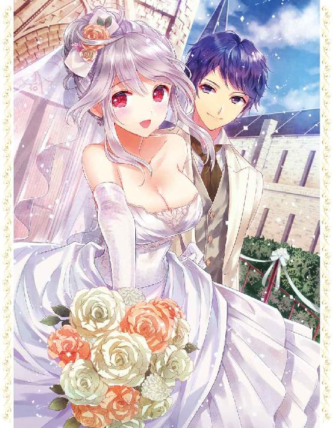
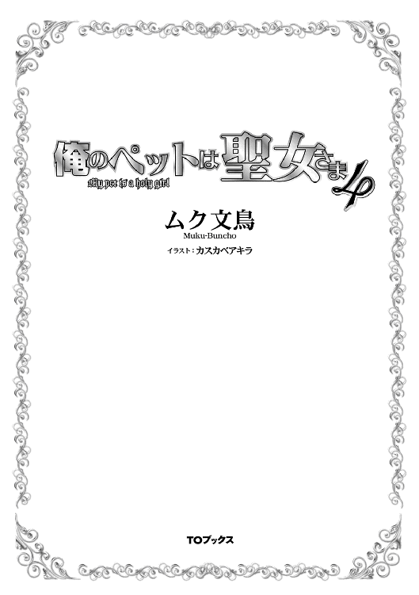
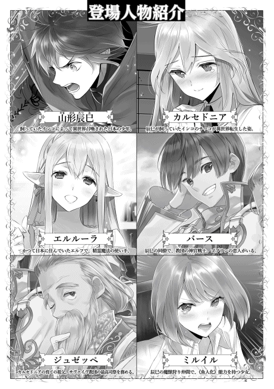
それは、辰巳とカルセドニアが正式な婚約を交わした直後のことだった。
「おまえが......タツミ・ヤマガタか？」
神殿の廊下を歩いていると突然背後から名前を呼ばれ、辰巳は立ち止まって振り返った。
辰巳の横を歩いていたバースも、同じように背後へと視線を向ける。
二人の視線の先。そこには厳つい顔の大柄な男性の神官がいた。その神官の背後にも、十人以上の男性神官がいる。
彼らは一様に極めて真剣な表情で、じっと辰巳の顔を見ていた。いや、睨み付けていたと言った方が正確だろうか。
「はい、確かに俺が辰巳ですが......？」
先頭の厳つい顔の男性神官。身に着けている聖印と神官服から、彼が司祭の位にあることが分かる。
背後にいる神官たちの階級はばらばらだが、先頭の彼より身分が高い者はいないようだ。
司祭は、上級神官であるタツミやバースよりも、二つ上の階級である。しかし、辰巳にはこの男性神官との面識はこれまでにない。
どうしていきなり声をかけられたのか、と辰巳が内心で首を捻っていると、隣のバースがこっそりと耳打ちしてくれた。
「......こいつら、カルセドニア様の熱心な信奉者たちだ。気をつけた方がいいぜ」
最近サヴァイヴ神殿内では、あの《聖女》が遂に婚約したらしい、という噂があちこちで囁かれている。
当然、そうなるとカルセドニアの信奉者である彼らの耳にも、その噂は入ることになったのだろう。
おそらくその噂を耳に挟んだ彼らは、こうして噂の《聖女》の相手──辰巳のところへとやって来たに違いない。
「おまえに聞きたいことがある」
厳つい顔の男が、ずいっと一歩前に出る。
彼は顔だけではなく体つきも大柄でがっしりとしており、辰巳は彼が一歩前に出るだけで自分にかかる圧力がぐっと増したような気がした。
「おまえ......《聖女》様と......いや、カルセドニア様と正式に婚約したという話は本当か？」
やはりそう来たか、と辰巳は内心で溜め息を吐く。
だが、彼にやましいことは全くない。彼とカルセドニアが婚約したのは双方の同意に基づいたものである。また、カルセドニアの養父であり、サヴァイヴ神殿の最高司祭であるジュゼッペも認めたことなのだ。
だから辰巳は、彼の視線を真っ正面から受け止めるとはっきりと答える。
「はい。俺とカルセドニアはジュゼッペさん......いえ、最高司祭様立ち会いの元、正式に婚約しましたが？」
辰巳がそう答えると、大柄な男性神官の背後にいた信奉者たちが、ざわざわと騒ぎ出す。
膝から崩れ落ちる者、蹲って拳を床に叩きつける者、呆然とした表情で立ち尽くす者、そして、涙を流しながら神に──もちろんサヴァイヴ神に──事実を否定してくれと懇願する者もいた。
そんな彼らの先頭に立っていた厳つい顔の男性神官もまた、どこか虚ろな表情を浮かべている。
「そ、そうか......噂は......やはり噂は本当だったのか......」
辰巳の言葉が信じられない......いや、信じたくないのだろう。虚ろな表情を浮かべたまま、先頭の男性神官がぽつりと呟いた。
だが、男性神官はすぐに再び厳めしい表情を取り戻すと、そのまま更に辰巳に肉薄。辰巳も引く理由がないため、胸を張って男性と対峙する。
辰巳よりも頭一つ分大きな男性は、厳しい視線で辰巳を見下ろす。
しばらくそうやって辰巳を見つめていた男性だったが、不意に辰巳の肩に両手をどんと置くと、こんなことを言い出した。
「......我々、『《聖女》を影から見つめる団』は......おまえの......いや、君のことを全面的に支持する！」
──えっと......今、この人、何て言ったんだ？
言われたことがすぐに理解できなくて、辰巳は思わず間抜けな顔を晒してしまった。
助けを求めるように、隣にいるバースへと振り向く辰巳。だが、バースもまたぽかんとした表情で辰巳を見ているばかり。
もしもこれが、厳つい顔の男性──おそらく、彼が『《聖女》を影から見つめる団』とやらの団長なのだろう──の言葉が「貴様が《聖女》様の婚約者などと、我々は絶対に認めないからな！」と言われたのならば、まだ辰巳も理解できる。
だって漫画などでもよくあるパターンだし。
だが、まさかカルセドニアの信奉者たちから、「全面的に支持する」と言われるとは。さすがに辰巳も、そして隣にいるバースも想像さえしていなかった。
実を言えば、カルセドニアと正式に婚約してから今日まで、いろいろと影で言われていることを辰巳は知っている。
中には明白に辰巳に聞こえるよう、陰口を言う者もいたぐらいだ。
これまで、どんな貴族や王族の求婚にも頑なに応じなかったカルセドニア。その彼女が、突然現れた異国の男性と婚約したとなれば、誰だってあれこれと妄想を逞しくするだろう。
もちろん、辰巳もカルセドニアと婚約した際、このようなことになることは覚悟していたし、影で何を言われようとも、カルセドニアと共に暮らせるのであれば、どんなことにも耐えてみせると自分に言い聞かせてもいた。
だが。
このような事態は、さすがに想定外過ぎた。
どう反応していいのか分からない辰巳を余所に、団長らしき男性はつらつらと言葉を続けていく。
なお、今後は彼を暫定的に「団長（仮）」と呼称する。
「我々、『《聖女》を影から見つめる団』は、ずっと彼女を......カルセドニア様をその名の通り影から見守ってきた。だから分かるのだ。最近の......君が現れてからの彼女が、本当に楽しそうで幸せそうなのが、ね」
団長（仮）は厳ついその顔に、とても優しげな表情を浮かべた。
それを見た辰巳は、この人たちはこの人たちなりにカルセドニアのことを考えてくれているんだな、と思う。
そうでなければ......彼らが単なるカルセドニアのファンでしかないようなら、辰巳が召喚される前とされた後のカルセドニアの変化に気づくことはないだろう。
彼らは彼らなりの誠意で以って、カルセドニアのことをこれまで影ながら見守ってきてくれたのだ。
自分の想い人に他の男が想いを寄せるというのは、正直複雑なところだ。だが、辰巳とカルセドニアの前世での関係を知らない者たちからすれば、後から出てきたのは辰巳の方なのだし、それは仕方ないところだろう。
どうやらこの団長（仮）は見かけはともかく、性格は優しい人物のようだ。
そう判断した辰巳は笑みを浮かべ、自分の両肩をがっしりと掴んでいる団長（仮）へと感謝の言葉を述べようとした時。
不意に、横にいたバースが不思議そうな顔をしつつ、団長（仮）へと尋ねた。
「あなたたち......えっと、『《聖女》を影から見つめる団』......でしたっけ？」
「いかにも。我々は『《聖女》を影から見つめる団』である」
そう力強く答える団長（仮）の背後で、他の団員たちも胸を張って何度も頷いた。
「で、その『《聖女》を影から見つめる団』だけど、これまで具体的にどんなことをしてきたのですか？」
相手の位が上ということもあって、バースは言葉遣いこそ丁寧だったが、なぜかその表情は胡乱げだ。
しかし、団長（仮）はそれに気づいているのかいないのか、まさによくぞ聞いてくれましたとばかりに、自慢気にその質問に答える。
「我々はその名前の通り、日々《聖女》カルセドニア様を影ながら見つめてきた。その歴史は古く、カルセドニア様が《聖女》という二つ名で呼ばれる以前、クリソプレーズ猊下の養女となられた頃にまで遡る。その身に宿した類まれなる魔法の才能を猊下により見出され、その養女となられたカルセドニア様。当時のそのお姿はまさに、純真可憐と呼ぶに相応しかった......」
団長（仮）は、遠い目をしながら昔のカルセドニアのことを語り出した。
彼の年齢は、その見た目からおそらく三十代後半から四十代前半。もしかするともう少し若いかもしれないが、それでも二十代ということはないだろう。
そんな年齢の男性が、まだ年端もいかなかった頃のカルセドニアについて熱く語っているのだ。
この時点で、辰巳の団長（仮）とその背後にいる団員たちの評価は、先程の「優しい人」から「ちょっとヤバい人」へとクラスチェンジしていた。
「猊下のご指導によって、その魔法の才能を開花されたカルセドニア様は、やがて周囲の者たちから《聖女》と呼ばれるようになられた。だが、我々からすれば、《聖女》などという呼称ではまったく生ぬるい！ 彼女......いや、あのお方こそ、我らにとってはサヴァイヴ神の化身とも言うべき存在！ 《聖女》ではなく《女神》と呼ばれて当然のお方なのだ！」
握り締めた拳を振り回しつつ、団長（仮）は力説する。
だが、思い出して欲しい。
今、辰巳やバースたちがいるのは、サヴァイヴ神殿の廊下なのだ。
当然ながら、他にもこの廊下を通る神官たちがいる。彼らは、廊下の真ん中でたむろし何やら力説している男たち──辰巳たちも含む──に、明らかに迷惑そうな目を向けていた。
しかも、通りかかった神官の中には、いつの間にか『《聖女》を影から見つめる団』と一緒になって、団長（仮）が言葉と共に拳を突き上げる度に「そうだ！ そうだ！」とか「その通りだ！」と共に騒ぎ立てている者もいる。
一方、辰巳とバースは完全にげんなりとした顔つきだった。
端から見たら、彼らも『《聖女》を影から見つめる団』の仲間に見えているのかもしれない。そう考えると、辰巳とバースがげんなりとするのも無理はないだろう。
そうこうしている間も、団長（仮）の力説は続く。
「よって、我々は影ながらカルセドニア様を見守り、その身に危害が及ばないようにと誓い合ったのだ！ その日より、我々は常にカルセドニア様を見つめてきた！ いや、お守りしてきた！ ある時は、神殿の中で様々な職務に励む時も！ またある時は、礼拝堂で神の御言葉を信者たちに語る時も！ またある時は、その御身体を清めるべく湯殿に向かわれる時も！ またある時は厠に入られる時も！ 誰もが、排泄の時は最も無防備になる瞬間だからな。そこを不埒な輩に突然襲われないよう、しっかりと見張る必要があるではないか！ このように、我々は常に《聖女》様から片時も目を離すことなく、遠くからひっそりこっそりお守りしてきたのだ！」
「ちょっと待てぇぇぇぇぇぇぇぇぇぇぇぇっ!!」
団長（仮）の言葉に、聞き逃せない部分があることに気づいて辰巳が思わず叫ぶ。
だが、調子が出てきたらしい団長（仮）は、辰巳が叫んだぐらいではその力説を止めようとしない。
「最近、カルセドニア様は神殿を出て君と暮らし始めたのでな。我々も君の家の近くで......といっても少し離れた所からだが、常に監視の目を光らせている。安心したまえ！ 庭に干したカルセドニア様の下着に不審者が近づかないよう、我々はカルセドニア様の下着が無事に取り込まれるまで、決して目を離すことなくしっかりと監視をしているからな！」
「かんっっっぺきにストーカーだろ、それじゃあっ!!」
団長（仮）の発言は、もしもここが現代日本であれば、言い逃れできずに警察に厄介になること間違いない。
だがこの世界には、セクハラもストーカーも概念さえないのだ。残念ながら。
しかも、どうやらこの『《聖女》を影から見つめる団』は──というか、少なくとも団長（仮）は悪気があってやっているのではないようだ。
「......余計にタチが悪いだろ......」
「ってか、こいつらの存在、気づいていなかったのかよ？」
呆れたような疲れたような様子のバースの質問に、辰巳は黙って首を横に振った。
団長（仮）が言ったように、彼らは辰巳たちの家からは少し離れた所にでも潜んでいたのだろう。それに、辰巳たちは二人っきりの時、お互いしか見えていない場合も多々あるし。
今日家に帰ったら、ご近所の奥さん連中に警告しておこうと、秘かに心に決める辰巳だった。
「ところで、タツミくん？ 先程君が言った『すとぉかぁ』とやらは、一体どういう意味だね？」
推測するに君の故郷の言葉のようだが、と団長（仮）は不思議そうに首を傾げている。
「......あなたたちのような人のことですよ......」
辰巳は口の中で小さく呟いた。だが、至近距離にいた団長（仮）の耳には、しっかりと届いていたらしい。
「ほう、我々のような影の功労者のことを、君の故郷では『すとぉかぁ』と言うのか......しかも、何やら力強そうな響きの言葉だ......よし、気に入ったぞ！ 今後、我々『《聖女》を影から見つめる団』は、その名称を『《聖女》すとぉかぁ団』に変更しようと思うが、いかがだろうか、諸君っ!?」
団長（仮）の声に、背後の団員たちが一斉に「異議なし！」と賛成する。
無知であることは恐ろしいことなんだな、なんてことを内心で呟く辰巳の目の前で、『《聖女》を影から見つめる団』の名称変更は反対する者が登場することなく認められていく。
こうして。
ストーカーであることを前面的に看板に掲げるという、辰巳の主観では極めて珍しいストーカー集団が、ここに誕生したのであった。
「ところで、ちょっと君に確かめたいことがあるのだが......」
呼称を改めた『《聖女》すとぉかぁ団』の団員たちは、新たな名称に興奮冷めやらない。そんな中、団長（仮）が再びずいっとその大きな身体を辰巳へと肉薄させた。
「......き、聞くところによると......そ、その......なんだ......き、君と親しくすると、君の婚約者であるカルセドニア様とも親しくできるそうだが......そ、それは本当かね？」
どうやら、彼らが辰巳をカルセドニアの婚約者として支持する本当の理由は、単なる下心だったらしい。
こうして名称を改めた『《聖女》すとぉかぁ団』だが、名称変更した直後にその活動はどんどん下火になっていき、やがて解散することとなる。
解散に至ったその理由は、定かではない。
だが、元メンバーだった神官の一人が、こんなことを言っていたとか。
「......俺たちが影から見ていることを知っているだろうに、あいつは家でも神殿でも《聖女》様といちゃいちゃと......正直、これ以上見ちゃいられないよ......それに......あの二人の様子を見ていると、口の中がめちゃくちゃ甘ったるくなってくるし......」
そう言いながら、彼はとても濃いお茶を一気に喉へと流し込んだという。
時は巡り、ラルゴフィーリ王国を広く覆っていた雪も徐々に解け始める季節。
この雪解けを以って、ラルゴフィーリ王国は年を新たにする。
この国には特定の誕生日を定める風習はなく、王侯貴族から庶民に至るまで、年明けと共に全国民が一斉に年齢を一つ積み重ねる。
辰巳とカルセドニアも一つ年齢を重ねることになり、新年を迎えれば辰巳が十七歳、カルセドニアが二十歳となる。
そしてそれは、辰巳がカルセドニアに日本から召喚されて、一年近い時間が経過したことも意味していた。
「新年祭？」
「はい。雪解けと新たな年を迎えたことを祝う、この国のお祭りです」
雪の少なくなった王都の道を歩きながら、カルセドニアは辰巳の質問に答えた。
相変わらず、ぴったりと身を寄せ合って歩く二人。
《聖女》と仲睦まじく一緒に歩く辰巳の姿は、最初こそ驚きの目で見られていたものの一年という時間が経過した今、王都ではすっかり見慣れたものへと変じていた。
今日も寄り添って歩く二人を、王都の人々は温かい目で──中には生暖かい目で──見つめ、微笑ましそうに目を細める。
時には冷やかしの言葉も飛んで来るが、もはや辰巳も慣れっこだ。
カルセドニアが辰巳を召喚したことを切っかけに始まった、こちらの世界での生活。
辰巳は神殿で神官としての務めを果たし、神官戦士として修練を重ねる。
同時に魔獣狩りとして、ジャドックやミルイルと共に王都近郊や少し離れた場所まで赴いては魔獣を狩り、チームとしての連携を深めると同時に財布の中も豊かになってきた。
最近では、辰巳たちも狩った魔獣の素材を利用した防具を着用するようになり、実力面でも装備面でも以前より力をつけたと言えるだろう。
一方、神官としての仕事も魔獣狩りとしての仕事もない時に、こうして大切な存在である婚約者と共に過ごすのは、相変わらず辰巳にとっては大切な一時である。
隣を歩く婚約者の温もりを感じながら、辰巳とカルセドニアはいつものように〔エルフの憩い亭〕へと向かう。
ジャドックとミルイルが常宿にしていることに加え、エルの作る料理を気に入った辰巳は、頻繁に〔エルフの憩い亭〕へと通っている。
エルがこちらの世界に来てから約二十年。彼女はこの世界のあちこちを巡りながら、とある野望を達成させつつあった。
エルの野望。それは、日本食の再現である。
自身も長く日本で暮らし、数々の日本食を食べてそれらを気に入ったエルは、その日本食をこの世界でも再現できないかと考えたのだ。
そこには日本で暮らした思い出を、いつまでも胸に抱えていたいという想いもあるのだろう。
夫や親しい友人たちとの思い出は、彼女にとって何物にも代え難い宝物である。
彼らと共に過ごした日本での日々ととても関係強い日本食の味もまた、エルにとってはそんな宝物の一つなのだ。
だからエルは、こちらの世界でも日本食が再現できないかと努力を続けてきた。
旅をしながらよく似た味の素材を探し出し、何度も何度も試行錯誤を繰り返し、ようやく数種類の「日本食もどき」の再現に成功した。
今ではエルの日本食もどきたちは、〔エルフの憩い亭〕の名物料理にもなっている。
だが、彼女の野望はまだまだ完全に達成されたわけではない。エルフの長い寿命の全てを使ってでも、完全な日本食を再現してみせると、エルは常々辰巳たちに話していた。
当然、この日本食もどきを辰巳が気に入らないわけがなく、〔エルフの憩い亭〕でエルの料理を食べるのが、辰巳の楽しみの一つとなっている。
ちなみに、カルセドニアがこの日本食もどきの作り方をエルに尋ねたところ、笑顔と共に断られてしまった。
「この料理のレシピは〔エルフの憩い亭〕の企業秘密なので、いくらカルセさんのお願いでもお教えできません。この料理が食べたい時は、私のお店に来てお店の売上に協力してくださいね」
こう言われてはカルセドニアも無理に教えてもらうわけにはいかず、彼女も〔エルフの憩い亭〕で名物料理に舌鼓を打つことにした。
もちろん、辰巳とカルセドニアはいつも一緒にエルの店へと出かけ、一緒に懐かしい日本食──カルセドニアは日本食を食べたことはないが、その匂いはよく覚えていた──を楽しんでいる。
恋人のナナゥが〔エルフの憩い亭〕の従業員ということもあって、時には辰巳たちにバースも加わることもあり、辰巳は愛する女性や仲間たちと共に、楽しくも充実した時間を過ごしていた。
すっかり見慣れた〔エルフの憩い亭〕の店構え。
辰巳とカルセドニアは、玄関の扉を押し開いて店の中に入る。
と、普段は酒と料理の匂い、そしてがやがやとした喧騒に包まれている店の中に、今日はいつもとは違う音が響いていた。
「ん？ この音は......？」
「......ラライナの音色......でしょうか？」
カルセドニアの言うラライナとは、小型のハープのような外観の楽器であり、この国では一般的な楽器の一つである。
そのため、吟遊詩人たちが商売道具にこの楽器を用いているのをよく見かける。
音の方を確認してみれば、一人の吟遊詩人らしき人物がカウンター席に腰を落ち着け、抱えたラライナを爪弾きながら喉を震わせていた。
その吟遊詩人はカウンターの奥にいるエルへと熱の篭もった眼差しを向けているが、当のエルはと言えばどこか困った様な顔をしつつ、その吟遊詩人を無視している。
「あら、タツミちゃんとカルセちゃんじゃない。こっちにいらっしゃいよ」
辰巳たちの姿を見つけたジャドックが、テーブルの一つから手招きする。
同じテーブルにはミルイルもいて、ぱたぱたと片手を辰巳たちへと振っていた。
辰巳はカルセドニアを伴ってジャドックたちのテーブルへ着くと、再びカウンターの吟遊詩人へと目を向けた。
「この辺りじゃあまり見かけない吟遊詩人だな」
このレバンティスの街にも、もちろん数多くの吟遊詩人たちがいる。〔エルフの憩い亭〕にも、常連と言える吟遊詩人は数人いるし、そんな吟遊詩人たちとは辰巳も顔見知りだ。しかし、カウンターで喉を震わせている吟遊詩人は、辰巳には見覚えのない者だった。
「どうやら、新年祭を見越して早目に王都へと来た吟遊詩人のようね」
「その吟遊詩人が、どうして熱心にエルさんを見つめているんだ？」
「どうやらあの吟遊詩人、かなりの女好きのようね。この店に来た途端、目ぼしい女性には片っ端からああして愛の歌を捧げているわよン」
「私にも声をかけてきたわ。『あなたのその美しさを称えるために、私に一曲歌わせてください』だって。うわ、思い出しただけでも肌が粟立ってきたわ」
「でもあのオトコ、このアタシには全然声をかけてこないのよ？ 全く、失礼よねぇ？ ここにこんないいオンナがいるっていうのに」
ジャドックがわざとらしく科を作ってみせる。
場を和ませるための冗談なのか、それとも案外本気でそう思っているのか今一つ判断がつきかねたが、辰巳たちは揃って笑顔を浮かべた。
男女を問わず、吟遊詩人の中には副業で「一夜限りの恋人」を務める者がいるのは、この国では一般的な事実である。
もしかするとあの吟遊詩人は、そちらの副業に秀でた者なのかもしれない。
そう思って、改めてその吟遊詩人を観察する辰巳。
肩にかかる程に伸ばされた髪の色は、燻んだ金髪。涼しげな印象の容貌の中で、紫水晶のような瞳の色が一際鮮やかな、かなり整った容姿の男だった。
その男は今、熱心に男女の愛にまつわる歌を歌い上げている。
だが、その歌に耳を傾けている者は、〔エルフの憩い亭〕には誰もいない。
常連の魔獣狩りたちも、エルを始めとした店の従業員たちも、そして辰巳たちも。
白々とした冷たい視線を、その吟遊詩人に向けていた。
この吟遊詩人の歌の技量は、確かにそれなりのものがある。
低く響く声と、抑揚を利かせた語り、そしてその整った容貌を合わせれば、若い女性ならば瞬く間に虜になっても不思議ではないかもしれない。
しかし、その吟遊詩人には一つだけ欠点があった。
それは、口元に浮かんだ軽薄な笑み。
その笑みが吟遊詩人が何を求めているのかを明白に表しており、この店の聴衆たちに伝わってしまっていた。
彼の望みは副業である「一夜限りの恋人」の方なのだろう。それも、相手が望んだものではなく、自分の欲望のためだけに女性を求めている。
それがはっきりと分かってしまうだけに、この店にいる女性たちは彼に白々とした目を向けているのだ。
「......要は、三流のホストが客の女の人に、時間外での付き合いを強引に迫っているようなものか」
そりゃ確かに白けるだけだな、と辰巳は小声で呟いた。
ぴぃぃいん、とラライナ独特の高音の余韻を残して、吟遊詩人が演奏を終えた。
その吟遊詩人に、店にいた魔獣狩りたちからお情けで僅かな銀貨が投げられる。
吟遊詩人はその数の少なさに一瞬だけ顔を顰めたが、すぐに取り繕った笑顔を浮かべると優雅に一礼し、投げられた銀貨を拾い集め始めた。
吟遊詩人は名残惜しそうにエルを見るが、彼の下心を見抜いているエルは完全に無視を決め込んでいる。
これは脈なしと悟った吟遊詩人は、視線を店の中へと向けた。
そして、店の中をぐるりと一望する。と、その視線がとある地点でふと止まる。
途端、吟遊詩人の顔がぱああぁっ輝く。
彼はいそいそと席の間をすり抜け、辰巳たちが陣取っている席へとやって来た。
「これは私としたことが。このような美しい女性が店に入って来たことに気づかないとは......このタランド、一生の不覚です」
タランドという名前らしい吟遊詩人は、その場に慇懃に跪いた。
「お名前をお聞かせ願えますか、美しい方？」
「あらん、美しい方だなんて、正直なヒトね。あ、アタシの名前はジャドックよ。よろしくねン」
横合いからにこにことジャドックが話しかけるが、タランドはそれを綺麗に無視。
今、彼の視線はただ一点へと向けられていた。
そう。
カルセドニアへと。
同時に、店の中にいた常連の魔獣狩りたちが、楽しそうな笑みを浮かべながらがやがやと騒ぎ出したのだが、カルセドニアに意識が向いていた吟遊詩人は、その事実に気づいていなかった。
常連の魔獣狩りたちは、顔を突き合わせて賭けを始める。
「俺はあの吟遊詩人が、《聖女》の魔法でぶちのめされるのに銀貨三十枚！」
「じゃあ、オレはジャドックにつまみ出されるに同じく三十枚！」
「よっし！ なら俺様は女将さんにこてんぱんにされて、店から放り出されるにどーんと銀貨八十枚！」
魔獣狩りたちはひそひそと囁き合いながら、ある種の期待に満ちた目を件の吟遊詩人へと向ける。
と、そこへ。
「みんな、分かっていないわね」
「お、ミルイルか。どうだ？ おまえも乗らないか？」
「もちろんよ。一口乗せてもらうつもりでこっちに来たんだし。じゃあ、私はあの吟遊詩人が、タツミに素っ裸にひん剥かれて店の外に放り出される、ってのに銀貨百枚ね」
腕を組み、自信に満ちた目で魔獣狩りたちを見回すミルイル。
「おいおい、ミルイル。本当にそんなのに賭けていいのか？ あの温厚なタツミが、そんなことするとは思えないんだがなぁ」
「ええ、それでいいわ。でも、本当にみんな分かっていないのね」
ふふん、とミルイルは自信満々な笑みを浮かべる。
「こういう時、本当に怖いのはカルセじゃなくてタツミの方なのよ」
「......お断りします。あなたに名前を告げる必要を感じません」
「何をおっしゃいますか、美しい方よ。ここで私たちが出会ったのは、間違いなく宵月神グラヴァビのお導き。さあ、私と共に宵月神の導きに身を委ねましょう」
「私はサヴァイヴ様の神官ですから。グラヴァビ様の教えを蔑ろにするつもりはありませんが、彼の神の導きに従う謂れはありません」
全く取り合わないカルセドニアと、それにもめげず、笑顔を絶やすことなくカルセドニアに語りかけ続けるタランド。
ちなみに、宵月神グラヴァビはその名の通り夜の守護神として信仰されている。そのため、その主な信者は夜に活動する吟遊詩人や娼婦たちであり、そこから「一夜限りの恋」を取り持つ神としても崇められている。
つまり、タランドがここでグラヴァビの名前を出したのは、カルセドニアに「一夜限りの恋」を誘いかけているわけだ。
もちろん、それを承知しているカルセドニアがその誘いを受けるはずがなく、きっぱりと断わる。
カルセドニアの返事が不満だったタランドは、一瞬だけその笑顔を消して不満そうな表情を浮かべるも、すぐにそれを打ち消して不躾にもカルセドニアの手を取ろうと、不意に彼女の繊手に自分の手を伸ばす。
だが、彼がカルセドニアの手に触れる直前、灰褐色の逞しい腕がするりと横から滑り込んで来た。
「あらん、積極的なヒトね。アタシ、そういう積極的なヒトって嫌いじゃないわよん？」
ばちん、とジャドックが片目──というか、四つの内の一つ──を閉じる。
一瞬ぽかんとした表情を晒したタランドだったが、自分が手にしたものが何かを知り、まるで熱いものに触れたかのように慌てて手を引っ込めた。
「さ、先程から失礼だな、君は！ ここは私とこの美しい方が記念すべき出会いを果たした場だ。関係のない者は余所へ行ってもらおうか！」
「アラ、余所へ行くのはアナタの方じゃない？ 公衆の面前で恥を掻きたくはないでしょ？ 早くここから立ち去った方が身のためよ」
にこにこと笑いながら、ジャドックがタランドを諌める。
だが、当のタランドはジャドックを無視することに決めると、再びカルセドニアへと向き直った。
「これまでに出会ったどのような美女よりも美しい貴女よ。貴女の美しさに一目で虜となってしまった哀れな私に、どうか貴女の美しさを称える歌を奏でることをお許しください」
「結構です」
「はははは。そう遠慮なさらずに。この王都で最も美しいと評判のサヴァイヴ神殿の《聖女》様も、貴女のその光り輝くような美しさの前ではただただ霞んでしまうでしょう」
脇に抱えたラライナを軽く爪弾きながら、タランドは歌うようにカルセドニアの美しさを褒め称える。
今、彼が比較に出した《聖女》こそが、目の前にいる女性だということに気づくこともなく。
そのため、周囲の席にいる魔獣狩りたちは湧き上がる笑いを堪えるのに必死だった。
さて、誰がどう動くのか。
賭けに参加した魔獣狩りたちは、興味津々で辰巳たちのテーブルを見つめた。
不意に、辰巳が席から立ち上がる。
カルセドニアが動くか、ジャドックが動くか、それとも女将であるエルが割り込んでくるのかと期待していた魔獣狩りたちは、辰巳が立ち上がったことで意外そうな表情を浮かべた。
「チーコ。ちょっと家まで行ってくる。すぐに戻るから、ここで待っていてくれ」
「はい、ご主人様。お気をつけて」
カルセドニアも立ち上がると、辰巳に向かって深々と頭を下げる。
どうして、などと彼女は聞かない。辰巳がこの状況でわざわざ家に帰ると言い出した以上、何か考えがあるのだと信じて疑わない。
辰巳もまた、この場にカルセドニアを一人残すことに不安は感じていない。
何より彼女を信じているし、ここにはジャドックやミルイルやエルもいるし、顔馴染みの魔獣狩りたちもいる。いざとなれば彼らが手を差し伸べてくれるだろう。
辰巳はカルセドニアににこりと微笑むと、そのまま店の外へと飛び出して行った。
彼の背中を見送っていたカルセドニアも、そのまま何事もなかったかのように再び椅子に腰を下ろす。
もちろん、傍らにいる吟遊詩人のことなど目に入ってさえいない。
その吟遊詩人はと言えば、突然の辰巳の行動が理解できず、ぽかんとした表情を浮かべるばかり。
そしてそれは周囲の魔獣狩りたちも同様で、どうして辰巳がカルセドニアを残して帰ってしまったのか、理解できずに首を傾げていた。
「女将さん。料理の注文、いいでしょうか？」
「はーい、もちろんですよ！ 何をご注文されますか？」
「では、きしめんを二人分お願いします。すぐにご主人様も戻られますから」
「了解です。きしめん二人前ですねー」
エルは元気な声で応えると、そのままカウンター奥の厨房に姿を消した。
「アラ、二人はまたきしめんなの？ 本当にタツミちゃんもカルセちゃんもきしめんが好きねぇ」
「ええ、ご主人様も女将さんのきしめんはお気に入りですから。今日もここへ来る途中、きしめんが食べたいって言っていましたし。もちろん、女将さんの他の料理もとっても美味しいですけど」
まだ呆気に取られたままの吟遊詩人を置いてけぼりにして、カルセドニアとジャドックは楽しそうに会話する。
と、ようやくタランドが我に返り、あたふたとカルセドニアに再び話しかけてきた。
「お、おお、美しき貴女はカルセというお名前なのですね？ いや、実に素晴らしい名前です。美しき貴女に相応しい名前と言えるでしょう」
ぽろぽろぽろろんとラライナが静かな音を奏で、タランドの言葉を彩る。
彼の整った容姿と洗練された物腰、そしてこの音楽に彩られた話術ならば、普通の酒場の女給あたりならあっさりと引っかかるのかもしれない。
だが、そんな手管もカルセドニアには通じない。
彼女は完全なる無視を決め込むと、ただジャドックとだけにこやかに会話している。
「ただいまっ!!」
どれだけもせずに、辰巳が戻って来た。意外そうな顔をしたのはタランドだけで、店に居合わせた魔獣狩りたちは全く動じていない。
最近では彼らも辰巳の魔法については既に知っているので、短時間で店と自宅を往復したとしても不思議に思うことはないのだ。
だが、今日に限っては不思議そうな視線が辰巳に集まった。
いや、正確に言うならば、辰巳が手にしていた見たこともない物を、魔獣狩りたちは興味深そうに見つめていたのだ。
「アラ、それって何なの、タツミちゃん？ オネエさんに教えてくれない？」
やはり興味を引かれたジャドックが尋ねれば、辰巳はちょっと得意そうな顔でその物を構えて見せた。
「これは俺の故郷の楽器で、ギターって言うんだ」
そう。
辰巳が家に帰った理由。それは彼と一緒にこの世界へと召喚された、父親の形見とも言えるアコースティックギターが目的だったのだ。
「へえ、『ぎたー』ねぇ。それでそれで？ どんな音がするの？」
「最近、あまりいじっていなかったから、少し音がずれているかもしれないけれど......」
辰巳は確かめるように弦を軽く爪弾く。
アコースティックギター独特の柔らかい音色が、〔エルフの憩い亭〕の中に静かに響く。
当然ながら、ジャドックたちは初めて耳にする音色である。
どちらかと言うとこの国の楽器は、ラライナのように高くて硬質な音を奏でるものが多い。そのため、アコースティックギターの低くて柔らかな音色は、この国に暮らす人々の耳には新鮮だった。
「なあ、チーコ。この曲、覚えているか？」
辰巳は記憶にある曲を奏で始める。それはかつて日本で一緒に暮らしていた時、よく一緒に聞いていた曲だった。
「はい、もちろんです」
カルセドニアは辰巳に柔らかく微笑むと、彼の演奏に合わせて歌い始めた。
アコースティックギターの低い音色と、カルセドニアの高音域の歌声が融和し、美しいメロディを紡いでいく。
今、辰巳が演奏しているような軽快なテンポでノリのいい音楽は、この国にはないものだ。
吟遊詩人たちが歌う歌は日本の歌謡曲のような歌ではなく、伝承などの物語に抑揚をつけ、楽器の演奏を合わせた「歌」というよりは「語り」に近いものである。
そのため、突然流れ始めた異質な音楽と歌に、この国の歌に慣れ親しんでいた店の従業員や魔獣狩りたちは、どうしても戸惑ってしまう。
だが、それも最初だけ。
軽快なノリの音楽は魔獣狩りたちの気質に合っていたようで、すぐにメロディに合わせて手拍子を打ち、足を踏み鳴らし始める。
と、そこへ横から新たな歌声が加わった。
皆が驚いて声の方を見れば、歌っているのはエルである。
日本で暮らしていたエルもまた、辰巳が演奏している曲を知っていたのだ。
辰巳の演奏とカルセドニアとエルの歌声。三つの音が一つに合わさり、音楽は更に完成度を高める。
カルセドニアとエルはどちらからともなく手と手を取り合うと、その場で即興のステップを踏み始めた。
辰巳の演奏に合わせ、歌いながらくるくると舞うように踊る二人のステップは、即興とは思えないほど息が合っており、それがまた場の盛り上がりを高めていく。
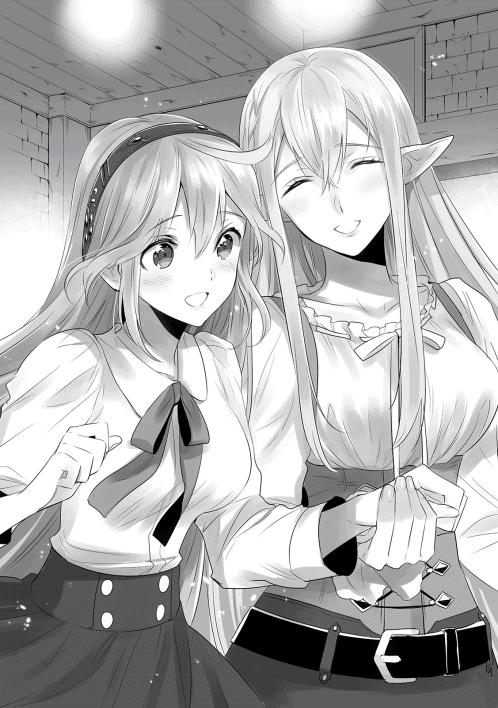
宮廷舞踊のような優雅さはないが、庶民に親しまれる陽気で軽快な踊り。そして、それを踊っているのが二人の美女とくれば、盛り上がらない方がおかしい。
歌詞は日本語で意味は分からず、奏でられるのは耳慣れない旋律。だが、〔エルフの憩い亭〕の中は完全に辰巳たちの音楽に支配されていた。
カルセドニアとエルの美しい歌声と陽気なステップに合わせて、客たちが、従業員たちが、そしてジャドックとミルイルが、一斉に手を打ち鳴らし足を踏み鳴らす。
やがて辰巳の演奏が終了し、店の中に静寂が戻って来る。だが、それも一瞬だけのこと。
次の瞬間には、店内は割れんばかりの歓声が木霊した。
皆は笑顔で辰巳の演奏を褒め、カルセドニアとエルの歌声を称えた。
「な......何だ......そ、その楽器は......何なのだ、今の歌は......こ、こんな音楽は聞いたことがない......」
店内が熱狂する中、一人取り残されたタランド。
彼は初めて目の当たりにした異世界の音楽を前に、呆然とすることしかできないでいた。
タランドにしてみれば、今の演奏と歌は異質以外の何ものでもない。だが、聴衆たちに受け入れられたのは、間違いなくこの異質な音楽の方だ。
だが、ここでめげてしまうほど彼も柔ではなかった。
「あ、あはははは。お見事な歌声でした。本職の吟遊詩人である私も、今の貴女の歌には完敗です。いや、姿だけではなく、歌声まで本当にお美しい」
再びカルセドニアの横で跪き、胸に手を当てて優雅に頭を下げる。
「如何です？ この後、その音楽を私にご指南願えませんでしょうか？ もちろん、授業料はお支払い致します。そうですね、この宿屋に部屋を借りましょう。そこで二人だけでゆっくりとお話を......」
どうやら、まだカルセドニアを諦め切れないらしい。彼の異性にかける情熱は、ある意味大したものであるだろう。
店内の魔獣狩りたちがその熱意にだけは感心していると、再び辰巳が立ち上がった。
「いい加減にしてくれないか。彼女は......チーコはあなたと付き合う気はないんだ。それぐらい分かっているだろう？」
「ふ、ふふふ、た、確かに君の演奏はなかなかだった。その『ぎたー』とか言う珍しい楽器の音色も悪くはない。だが、これは私とこの美しい方との問題だ。君がどこの誰かは知らないが、引っ込んでいたまえ。それとも、君もこの美しい方に熱を上げているのかい？ だが、君のような凡庸な容姿の男では、この美しい方とは釣り合いが取れないだろう？」
タランドは自分の容姿を見せつけるように髪を掻き上げる。
確かに辰巳の見た目は平凡に過ぎない。そして、タランドはどう見ても美形に分類される容姿の持ち主である。
だが、そんなことは問題ではない。辰巳にとってカルセドニアは大切な女性だし、そしてカルセドニアにとっては、辰巳は世界で最も素晴らしい男性である。
この時、タランドは気づいていなかった。
カルセドニアを無理に口説こうとしているこの吟遊詩人に対して、いや、カルセドニアを口説いたという時点で、辰巳がかなり怒っていたことに。
「......そろそろかしら？」
辰巳と吟遊詩人のやり取りを見守っていたミルイルは、頃合いとばかりにゆっくりと移動を始めた。
彼女が向かうのは、この店の出入り口。
出入り口に到達した彼女は、店の内と外を隔てている扉をそっと開く。
自分が想像していた通りに事態は動いている。ならば、辰巳が「アレ」をするのももうすぐだろう。
「さあ、準備は整えておいわたよ、タツミ」
小さな声でそう告げたミルイルは、自分の懐が潤うだろうことを確信して笑みを浮かべた。
「チーコ、エルさん、そしてミルイルや他の女性のみんな。ごめん。最初に謝っておく」
辰巳はそう言いながら、タランドに軽く触れた。
同時に、彼らのやり取りをじっと見ていた者たちには、一瞬だけタランドの姿がぶれたように見える。
そして次の瞬間に彼らが見たのは、その場には全ての衣類が脱げ落ちた、全裸のタランドが無防備に立っている姿だった。
「..................は？」
自分の身に何が起こったのか、全く理解できないタランド。
そして、一斉に手で顔を覆って悲鳴を上げる女性陣。
「な、ななななな何が起きたのだ......っ!?」
タランドが何か行動するより早く、辰巳は再びタランドに触れる。
今度は店の中から完全にタランドの姿が消えた。そして次に彼が現れたのは、〔エルフの憩い亭〕の外──人通りが多い通りの真っ只中だった。
もちろん、全裸のままで。
途端、店の前を通りかかっていた人々から悲鳴が上がる。
突然道の真ん中に全裸の男が現れれば、誰だって悲鳴ぐらい上げるだろう。
自分に何が起こったのか全く理解できていないタランドは、全裸の身体を隠すこともせずに右往左往するばかり。
そんな彼の頭上に、どさりと何かが落ちてきた。それは服や楽器といった、彼の荷物たちだ。
ぽかんとしたままタランドが〔エルフの憩い亭〕の入り口へと目を向ければ、そこには数人の魔獣狩りたちが鋭い眼光を彼へと向けていた。
「女将さんからの伝言だ。今後一切、おまえのこの店への出入りを禁じる、だとよ」
「もしも女将さんの言葉を無視してこの店に顔を出してみろ？ その時は俺たちが黙っちゃいないからな！」
「商売道具と自分の服を持って、とっとと失せやがれ！」
タランドの服を放り投げたのはこの店の常連たち、その常連の中でも特に熱心なエルの信奉者たちだった。
彼らもまた、憧れの対象であるエルにこの吟遊詩人がしつこく絡んでいたことで、激しい怒りをその胸の内で燃え上がらせていたのだ。
もしも辰巳たちがこの店に来るのがもう少し遅ければ、タランドは辰巳ではなく彼らに店から放り出されていただろう。
辰巳の得体のしれない魔法に戦き、魔獣狩りたちの迫力に気圧されて、タランドは服や楽器を抱えると、素っ裸のまま悲鳴を上げて通りを駆けて行った。
ばたん、という音と共に店の扉が閉められる。
同時に、店の中に大爆笑が木霊した。
「よくやった、タツミ！」
「おう、俺もすっきりしたぜ！ あの吟遊詩人、ちょっと図々しかったからな！」
「しかし、おまえも結構やることがキツいな。相手の得意な音楽で打撃を与えた直後にアレだもんなぁ」
「全くだ。今後は俺、おまえにだけは絶対逆らわないことにするわ」
「ははは、違いない。人前で裸に剥かれるのは勘弁だからな！」
「でも、女を裸にするのは大歓迎だぜ！」
常連の魔獣狩りたちは、笑いながら辰巳を小突き回す。
少々手荒い祝福に困ったような笑みを浮かべながら、辰巳がちらりと店の出入り口の方へと視線を向ければ、そこではミルイルが笑顔で右手の親指を立てていた。
同じように親指を立てて彼女に応えた後、辰巳はエルの方を見る。
「ありがとうございます、エルさん。それから、見苦しいものを見せてしまって済みません」
「いえいえ、私もあの吟遊詩人には困っていましたから気にしないでください。それに懐かしい曲だったので、つい私も歌っちゃいました」
ぺろっと舌を覗かせるエル。なんでも先程カルセドニアと一緒に歌った歌は、日本にいた時に友人たちとよくカラオケで歌っていた曲らしい。
「おい、タツミ！ 他にも何か演奏できないか？ できるのなら、もう一曲やってくれ！」
「あの曲......あれ、おまえの故郷の曲か？ なかなかノリのいい曲で気に入ったぜ！」
「《聖女》さんと女将さんもまた一緒に歌ってくれよ！」
常連たちのリクエストに応え、辰巳とカルセドニア、エルは日本の歌を何曲か披露していく。
その日の〔エルフの憩い亭〕は日が暮れても尚、陽気な音楽と喝采と歓声が響いていたという。
「......バカなオトコねぇ。だから恥を掻く前にどこかへ行きなさいって忠告したのに......」
周囲が盛り上がりを見せる中、閉められた扉に向けてジャドックがつまらなそうに呟いた。
とそこへ、ほくほくした顔のミルイルが戻ってくる。
「どうしたの？ 随分と嬉しそうね？」
「うん！ タツミのお陰で大儲けだわ！」
ミルイルは大量の銀貨が入った袋を、どさりと机の上に放り投げた。
「......ちょっと狡くない？」
「あら、最初に賭を始めたのはあっち。私はそれに乗っかっただけよ？」
実を言えば、ミルイルは知っていたのだ。カルセドニアに下手に絡んだ者が、どのような末路を辿るのかを。
その一件があったのはこの王都ではなく、彼らが魔獣を狩るために少し離れた狩り場まで行った時のことである。
途中でとある宿場町の宿屋に泊まった時、その宿屋に併設された酒場で、酔ってカルセドニアの尻を触った男がいたのだ。
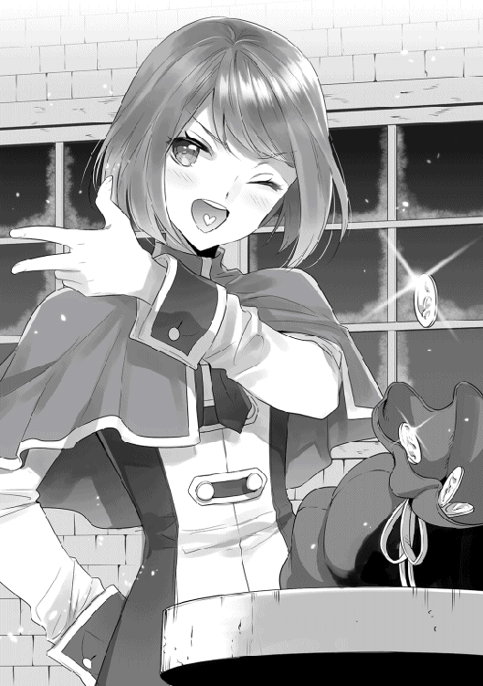
それは宿場町の酒場では、よく見られる光景ではある。
酒に酔った客が女給や他の女性客の身体に触れるなど、地方の酒場では日常的な光景と言ってもいい。
現代の日本と違ってセクハラの概念など全くない世界である。逆に、そのような客を上手くあしらうことが、女給に必要な技術とも言える。
だが、その時ばかりは相手が悪かった。よりにもよって、辰巳の目の前でカルセドニアの尻に触れてしまったのだから。
静かに怒りの炎を燃やした辰巳は、その場でその男を全裸にし、今日と同じようにそのまま店の外に放り出した。
全裸で店の外へ放り出された男は、何が起きたのか全く理解できず、情けない悲鳴を上げながらその場から逃げ去った。
何が起きたのか分からないのは居合わせた客たちも同じで、その日は誰も騒いだりせず、妙に静かな一夜となったと後に語り草になったほどである。
「ところで、アタシに口止め料は払ってもらえるんでしょうね？」
「もちろんよ。奢るから何でも好きなものを頼んでいいわよ」
ミルイルは嬉しそうに、銀貨の入った袋をじゃらりと鳴らした。
そんなミルイルに苦笑しながら、ジャドックは先程の吟遊詩人のことを思い出した。
「あのオトコ......かなり女を口説き慣れていたみたいだけど......それにしては、随分と『ちっちゃかった』わねぇ。あれで女を悦ばせることができていたのかしら？」
辰巳に衣服を剥がされた吟遊詩人の姿を思い出し、ジャドックはうふふと意地の悪い笑みを浮かべた。
あの吟遊詩人の何が「ちっちゃかった」のかは、彼の名誉のためにあえて触れないでおく。
夜もかなり遅い時間に、自宅に帰り着いた辰巳とカルセドニア。
合い言葉を唱えて玄関の鍵を開け、家の中に入る。
今日は本当に楽しい一日だった。
図々しい吟遊詩人という嫌な存在はいたが、その後は〔エルフの憩い亭〕の顔馴染みたちや、エルやジャドック、ミルイルといった親しい者たちと共に酒を飲み、美味い料理を味わった。
そんな今日一日のことを思い出しながら、辰巳は真っ暗な家に入って背後にいるカルセドニアへと振り返る。
「チーコ。悪いけど灯りを────」
と、そこで辰巳の言葉は途切れた。
彼の唇を、柔らかい何かがそっと塞いだのだ。
そして、同時に鼻腔を擽る仄かな芳香。それはすっかり辰巳が慣れ親しんだ大切な女性の香りで。
辰巳の唇を塞いでいたものが離れる。暗闇の中でははっきりとは見えないが、今の彼の目の前には紅玉にも負けない美しい宝石が二つ存在するだろう。
「ご主人様......今日は私を守ってくださり、ありがとうございました」
「いや......俺は......」
大したことはしていない、と続けようとした辰巳の唇を、再び先程と同じ柔らかなものがふわりと塞ぐ。
しばらく、闇の中で互いの僅かな息遣いだけが小さく響く。
「......いいんです。私はご主人様がしてくださったことが凄く嬉しかったのですから」
闇に慣れた辰巳の目には、僅かだが艶やかに微笑むカルセドニアの顔が見えた。
「やっぱり、私のご主人様はとても素敵な方です」
カルセドニアは辰巳の身体を抱き締めると、その胸に甘えるように頬を擦り付けた。
煌びやかな装飾が施された広い部屋。
この部屋に配置されている調度品は、全てが一目で高価だと分かるものばかり。
それは一流の職人たちが、時間と技術を注ぎ込んだ本物であり、その本物の調度品が、品が下がらないようにしっかりと計算されて配置されている。
そんな豪華な部屋の中に、三人の人間が集まっていた。
彼らは大きめの円形のテーブルに着き、思い思いに会話をし、用意されているお茶やお茶菓子を楽しんでいる。
そうしていると、この部屋唯一の扉が外側から静かに叩かれる。
「サヴァイヴ神殿最高司祭、ジュゼッペ・クリソプレーズ猊下のご到着です」
声が途切れて一呼吸後、部屋の扉がゆっくりと開かれた。
そして、そこにいるのは先程の声が告げた通りの人物。
「いやぁ、済まんの。遅くなってしもうたわい」
ジュゼッペは特に悪びれた風もなく、いつものようにほっほっほっと笑いながら部屋の中へと足を踏み入れる。
部屋の装飾にも引けを取らない豪華な装飾を施した、最高司祭だけが身に着けることを許されている法衣を纏い、ジュゼッペはまるで自室のように堂々と部屋の中を横切ると、誰かに勧められる前に空いている席に当然とばかりに腰を下ろす。
「遅いぞ。遂に耄碌したか、ジュゼッペよ？」
その席の隣に座っていた、やはり豪華な法衣を纏った男性が、ちらりとジュゼッペを横目で見ながら告げた。
「ふん、貴様じゃあるまいし、まだまだ耄碌なんぞするかい。これでもいろいろと忙しい身じゃからのぉ」
「あら、そうでしたの？ わたくしが聞いたところによると、最近はとある青年に熱を上げて、しょっちゅう二人っきりで部屋に篭もっているとか。やれやれ、結婚の守護神の最高司祭ともあろうお方が、同性愛の道に走るとは......本当、嘆かわしい」
丁度ジュゼッペの対面に当たる席に腰を下ろしていた、煌びやかな法衣姿の女性が手を握り合わせると口の中で神への祈りの言葉を呟く。
「誰が同性愛者か、誰が。儂には立派に妻もおれば子供や孫もおるわい。ま、確かにここのところ、ある青年に目をかけてはおるのは事実じゃがの」
そう言ったジュゼッペの脳裏に、最近では直弟子とも言える一人の青年の姿が浮かぶ。
「おい、ジュゼッペの爺。爺が目をかけているっていう男は、噂の〈天〉の二代目のことだろ？ 本当にそいつ、〈天〉の魔法使いなのかよ？」
今、この部屋に集っている数人の人間は、そのほとんどがジュゼッペと同じぐらいの年代だった。
その中で唯一、三十代半ばほどとかなり若いものの、他の者たちと同じく豪華な法衣を纏った男性が、興味津々といった表情でジュゼッペに質問する。
「うむ。間違いなく、あやつは〈天〉の魔力を持っておる。あやつの身体から吹き上がる眩しいばかりの黄金の魔力光......それを儂がこの目で確かめておるわい。しかも、最近ではかなり自在に《瞬間転移》を始めとした〈天〉の魔法の発動もできるようになってきておる」
まるで孫を自慢する好々爺のようなジュゼッペの表情。
それを見た他の三人は、それぞれ違った反応を示した。
ジュゼッペと同年齢の法衣姿の男性は、悔しそうに鼻を鳴らし。
「......ふん。《聖女》といい〈天〉の魔法使いといい、どうして貴様の神殿にばかり類まれな人材が......くそっ、羨ましいっ!!」
老齢ではあるものの、この場で唯一の女性は呆れたように肩を竦め。
「あらあら、まあまあ。本当に男色の道に入ったのではないでしょうね？」
そして三十代の男性は、更に興味を引かれたようでその目を輝かせ。
「うはっ、本当に本当かよ！ どうだ、爺。その男、俺の神殿にくれないか？ なぁに、俺に任せてくれれば、この国最強の戦士に仕立て上げてみせるぜ？ 何なら、俺の娘の婿にしてもいい。そうすりゃ、噂の〈天〉が俺の義息ってか。うわっ、何か燃えるな！」
自分の言葉に上機嫌に盛り上がる男性。だが、当然ながらジュゼッペがこの申し出を受けるはずもない。
「何故にあやつを余所の神殿にやらねばならんのじゃ？ それに貴様のところの娘はまだ十歳になったばかりじゃろが。第一、あやつは儂の孫娘の婿となることが既に決まっておるわい。この儂が立会人を務めた上で、正式な婚約をサヴァイヴ様に誓っておるからのぉ」
まるで新しい玩具を自慢する子供のように、ジュゼッペは一同を見回しながら楽しそうに笑う。
「さて、それより本題に入らんか？ 今日は儂の孫娘の婿を自慢するために集まったわけではあるまいて」
「自慢を始めたのは貴様であろうが」
拗ねたような表情でそう言ったのは、海洋神ダラガーベ神殿の最高司祭、グルグナード・アーマート。
「でも、本題に入るのは賛成。わたくしも決して暇ではありませんのよ？」
それは宵月神グラヴァビ神殿の最高司祭、マイアリナ・キスカルトの言葉。
「ち、やっぱり爺もそう簡単に手放したりはしないか。でも、一度その〈天〉の二代目と直接会ってみたいものだな！」
期待に目を輝かせるのは、太陽神ゴライバ神殿の最高司祭、ブガランク・イシュカン。
このラルゴフィーリ王国における四大神の各教団の最高司祭たちが、この部屋には集まっているのだ。
「では、話し合うとするかの。次の新年祭において、それぞれの神殿がどのような催し物を行い、どのような役目を担うのかをの」
その日、いつものように辰巳がジュゼッペから魔法の指南や、神殿やこの世界における各種の教えを受けていた時のこと。
「え？ 各神殿の最高司祭様たちが直接会合......ですか？」
「うむ。普段は各神殿間のやり取りや摺り合わせは、わざわざ儂が出張る必要はないのじゃがの。年に一度の新年祭の打ち合わせだけは、最高司祭同士が直々に行うのが恒例でな」
白くて立派な髭を扱きながら、どこか上機嫌なジュゼッペは辰巳の質問に答えた。
「毎年各神殿が受け持つのは、まずは治安維持の協力じゃな。普段は国の衛兵たちが街の治安維持を受け持っておるが、祭りの間は人も増えるし、人が増えれば当然それを狙った犯罪も増える。他にも祭りの雰囲気に浮かれてつい羽目を外す者もおれば、酒に酔った勢いで喧嘩をする者もおる。そのため、毎年国と各神殿で協力して治安維持に当たるんじゃよ。無論、これは神官戦士の役目となるので、お主にも協力してもらうぞい」
ジュゼッペの言葉に、辰巳は神妙に頷く。
祭りの最中に仕事が入るのはやや残念ではあるが、これも役目である以上は仕方がない。
「他には怪我人や急病人の救護も神殿の仕事の内じゃな。まあ、こっちはカルセはともかく、婿殿には直接は関係あるまい」
祭りとなれば、浮かれすぎて調子を崩す者もいるだろうし、食べ過ぎたり、酒を飲み過ぎたり、喧嘩などで怪我をする者だっているだろう。
救護の方には治癒魔法の得意な者が割り振られるので、カルセドニアはそちらへ回されることになる。
「他には、各神殿が主催する催し物じゃな」
「どんなことをするんですか？」
「毎年、太陽神の神殿は庶民が参加する競技会じゃの。これは貴族たちのような剣や騎乗槍の試合ではなく、素手による競技の大会じゃ」
ジュゼッペによると、この国には「ギッシュ」と呼ばれる独特の競技があるらしい。
辰巳が聞いたところによると、この競技はレスリングに似たもので、立った状態で組み合い、相手の背中を地面に着けた方が勝ちとなる。
その際、相手を殴る蹴るなどの直接的な打撃も認められているので、その分レスリングよりも過激な競技と言えるかもしれない。
太陽神の神殿は、毎年このギッシュの大会を主催するのだそうだ。
「宵月神の神殿では、郊外の森の中で宝探しをするんじゃ。ちょっとした罠なども配置して、それらを潜り抜けて宝を探し出し、見つけた宝は自分の物になるという寸法じゃな」
とはいえ、宝と言ってもそれほど高額なものではなく、辰巳の感覚で言えば商店街の福引きの景品のようなものばかりらしい。
だが、一点だけ高額な宝が隠されており、それを目当てに毎年たくさんの参加者が集まって盛況を見せるという。
これもまた、商店街の福引きで言えば特賞のハワイ旅行といったところか、と辰巳は納得した。
しかし、郊外の森はかなり広いので、宝を見つけることはなかなか難しいのだそうだ。特に特賞は念入りに隠されるため、特賞を見事に探し出した者は過去に数人しかいないとか。
しかも郊外の森が舞台なので、いくら警備の神官戦士を各所に配置しても、時には危険な獣と鉢合わせして怪我をしたり、極稀にだが命を落とした参加者も過去にはいる。
それでも尚、この催しへの参加者は毎年たくさん集まるらしい。
「海洋神の神殿では競技的な催しはなく、毎年無料で酒と食事を提供しておる。年に一度の祭りとはいえ、街の住民も裕福な者ばかりではないからのぉ。これもまた庶民たちからは評判がいいんじゃ」
王都やその近郊に暮らす者たちも、決してその全てが生活に余裕があるわけではない。
中にはその日の暮らしにも困っている者だっている。そのような者たちにとって、海洋神の神殿が振る舞う祭りの酒やちょっと豪華な料理は格別なものなのだ。
「それで、サヴァイヴ神殿はどんな催しを？」
「うむ、我が神殿では今年一年の間に生まれた赤子に、儂自らが神の祝福を与える儀式を執り行っておる。無論、今年も行う予定じゃが、今年は他にもやろうと思っておることがあっての」
ジュゼッペがにやりとした笑みを浮かべた。
──あ、これは何か企んでいるな。それも結構たちの悪い類のものを。
思わずそんな考えが辰巳の頭を過る。それが理解できるぐらいには、ジュゼッペとの付き合いも深くなっている。
「それにはどうしてもおぬしの協力が必要での」
ジュゼッペの笑みが更に深まる。とはいえ、辰巳にはここで嫌だと言えるわけがなく。
辰巳は嫌な予感を感じながらも、ジュゼッペの話を聞いた。
それを聞いた彼の顔には驚愕と当惑が浮かび、最後にはなぜかその顔を真っ赤に染めた。
「ちょ、ちょっと待ってください、ジュゼッペさんっ!! ほ、本気でそんなことをやらなくちゃいけないんですかっ!?」
「うむ。できれば、婿殿にやって欲しい。これまで我が神殿の祭りでの催しは、他の三神殿に比べて何とも地味じゃった。儂としてはそれが納得できず、本当はもっと派手なことがしたかったんじゃ。じゃが、頭の固い司祭たちは伝統やら教義やらと何かと煩い。最高司祭という立場上、儂自らが神殿の伝統や教義を崩すわけにはいかず、これまでずっと我慢しておった。じゃが──」
どこか遠い所を見つめながら語っていたジュゼッペが、晴れやかな笑顔で辰巳へと向き直った。
「今年はお主がおる。お主が現れてくれたお陰で、神殿の伝統や教義を崩すことなく派手な催しを執り行える」
「で、でも......その企画なら......べ、別に俺たちじゃなくても......」
「いや、やはりここは知名度のある者たちでなくてはの。その方が派手に盛り上がるというものじゃわい。幸い、お主たちは十分に知名度もあるし、しかも儂の身内も同然。一番最初は身内で試用を行うと言えば、神殿の頭の固い連中も納得するじゃろう。そして、この催しが派手に盛り上がれば......以後は新たな伝統としてこの神殿に根付くわけじゃて。頼む、婿殿。ここは承知してくれんかの？」
ジュゼッペは辰巳に向かって、深々と頭を下げた。
恩人とも言えるジュゼッペにここまで言われ、そしてサヴァイヴ神殿の最高司祭に頭まで下げられては、辰巳としても断るわけにはいかない。
それでも辰巳はすぐに返事をすることをせず、あーとかうーとか言いながら部屋のあちこちに視線を彷徨わせていた。
だが、辰巳自身分かっている。
最早ジュゼッペの要請を受けるしかないことに。そしてそれは、同時に彼にとってもしっかりとしたけじめを付けることにもなる。
「......わ、分かりました......そ、それで......向こうの準備は......？」
辰巳は真っ赤になったまま、ようやくそれだけのことを言った。
「その点は婿殿が心配する必要はない。全ては儂らが手を回してこっそりと準備を進めておく。確か、こういうのをおぬしの世界の言葉で、『さぷらいず』とか言うんじゃったか？ うむうむ、年甲斐もなく今から祭りが楽しみでたまらんわい」
とジュゼッペは、祭りを前にした子供のような表情を浮かべた。
「実はあなたにお願いがあるのだけれど......聞いてもらえないかしら？」
ある日、クワロート公爵家の先代夫人であるエリーシア・クワロートに、カルセドニアは突然呼び出された。
もしや、また何かの病気なのではと慌ててカルセドニアが駆けつければ、待っていたのは先程の先代夫人の言葉。
先代夫人が病気ではないと分かってほっとするものの、今日この場に自分を呼び出した「お願い」とやらに、カルセドニアはやや警戒心を抱く。
これまでも、先代夫人が彼女を呼び出して「お願い」をする時は、カルセドニアにとってはあまりいいものではなかったからだ。
自分の血縁の男性と彼女を引き合わせたり、知り合いの貴族の令息との見合いを勧めてきたり。
以前はやたらと縁談を持ちかけてきたエリーシア。
それらは全て、結婚適齢期の後半に差しかかったカルセドニアを心配してのことだったが、当の本人からすればやはり迷惑なものだった。
だが、エリーシアも辰巳を認めてからは、そんな縁談を勧めることはなくなっている。
となれば、縁談の類ではないだろう。
内心で首を傾げつつ、カルセドニアはエリーシアの言葉の続きを待つ。
「実はね、私の知り合いの娘さんが、とある夜会に出ることになって衣装を新調したのだけれど......寸法合わせの直前に体調を崩してしまったの」
頬に手を添え、心配そうにふぅと息を吐き出すエリーシア。
「とりあえず、夜会までには体調は回復するそうなので安心しているのだけれど、肝心の衣装合わせが間に合いそうもないのよ。そこで──」
エリーシアが、ちらりと意味ありげな視線でカルセドニアを見た。
「分かりました。私がその方の病気を癒せばいいのですね？」
「あ、いえ、そ、そうじゃないの。あなたに代わりに衣装合わせをして欲しいのよ」
「え？ 私が衣装合わせを......ですか？」
思わず目をぱちぱちと何度も閉じるカルセドニア。
「ええ。その娘さんとあなたは同じような背格好なのよ。だから、あなたに代わりに衣装合わせをお願いしたいの」
「そ、それは構いませんが......私が代役となるより、その方を魔法で癒した方がいいのでは？」
「そ、それはそうだけれど、もう針子たちも呼んであるの。彼女たちも忙しいところをわざわざこの家まで来てもらっていることだし、ここはあなたに衣装合わせをしてもらえないかしら？」
手にした扇で口元を覆い隠し、おほほとわざとらしい笑みを浮かべるエリーシア。
貴族相手の腹の探り合いは得意な彼女だが、もしかするとこのような、「相手を幸せにするための嘘」は苦手なのかもしれない。
なんだか納得できないものを感じつつも、他ならぬエリーシアの頼みである。カルセドニアは腑に落ちない表情を浮かべながら、結局は首を縦に振った。
「じゃあ、早速今からお願いね？」
「え？ い、今からですか？」
驚くカルセドニアを余所に、エリーシアはぱんぱんと手を数回叩いた。
それに応じて扉が叩かれ、エリーシアの許可を得て数名の女性が布や針などの裁縫用具を持って部屋へと雪崩れ込んでくる。
女性──針子たちは、慣れた手付きでカルセドニアの衣服をはぎ取っていく。
そして、下着姿となった彼女にあれこれと様々な種類や色の布を押し当て、エリーシアも交えて相談する。
「カルセドニア様の髪の色なら、装飾品は派手なものより渋めな色合いの方が映えるのではないでしょうか？」
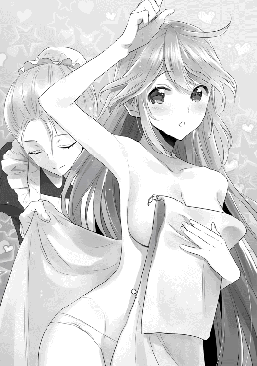
「そうねぇ。その方がカルセドニア様の髪の美しさが引き立つわね」
「カルセドニア様の髪は、女性から見ても美しいですものね」
手際よく作業する針子たち。だが、彼女たちの会話を聞いていて、カルセドニアはふと疑問を感じた。
「あ、あのー......私の髪と合わせても仕方ないのでは......？」
「あ、ああ、い、いいのよ。その娘さんも、あなたとよく似た髪の色をしているから」
「そ、そうなのですか......？」
自分の髪の色は、この国ではどちらかと言えば珍しい方だ。もっとも、辰巳以外には見かけない黒髪に比べれば、金髪や白金色の髪はまだ見かける機会はあるのだが。
そんなことを考えつつも、そのまま勢いに流されるカルセドニア。
その後も、針子たちはどんどんと作業を進めていく。
布地の色を決め、装飾品を選択し、細かな意匠を定めて。
身体の各所の採寸までされて、まるで自分の衣装を作っているようだとカルセドニアが思った程、各作業は彼女に合わせて行われた。
「カルセドニア様の肌は本当にすべらかで綺麗ですね。羨ましい限りです」
「本当。色も白くて......あら？」
針子の一人が、カルセドニアの雪のような肌──ふくよかな胸の膨らみの一部──に、鬱血したような痕が幾つもあるのを発見した。
そして、それが何なのかを一瞬後に悟り、針子はその顔を真っ赤にする。
「し、失礼しました......っ!!」
その後、針子たちは全員顔を真っ赤にしつつ、それでもあえてその鬱血痕を見ないように作業を進める。
もっとも、時折ちらちらと鬱血痕を盗み見ることは止められないようではあったのだが。
同時に、カルセドニアもその針子に負けないぐらい真っ赤になり、恥ずかしそうに視線を泳がせていた。
「あらあら。どうやらタツミとは仲良くやっているようねぇ」
そんなカルセドニアの様子を、エリーシアはにこにこと微笑みながら見つめている。
親しくしているエリーシアにからかわれ、カルセドニアの顔は更に真っ赤になる。
だけど、そこにとても嬉しそうで幸せそうな微笑みが浮かんでいることに、エリーシアや針子たちは皆気づいていた。
カルセドニアが、そんな幸福な羞恥に身を焼いていると、不意に部屋の扉がこんこんと叩かれた。
「大奥様。サヴァイヴ神殿より、ヤマガタ上級神官様がおみえになられました」
「あら、タツミが？ 何かあったのかしら？」
「はい、どうやら火急の要件のようです。クリソプレーズ司祭様に、大至急お会いしたいとのことですが」
いかが致しましょう、と続けた扉の向こうの使用人。
「そう。カルセの方はどう？」
「はい。作業は全て終了致しました」
エリーシアに問われた針子が、恭しく頭を下げなら答える。
その向こうでは、先程までどこか疲れたような顔をしていたカルセドニアが、急いで神官服を身に着けているところだった。
それまでの疲れたような表情とは打って変わり、カルセドニアは明らかに嬉しそうだ。普段から一緒に暮らしているくせに、辰巳に会えるのがそんなに嬉しいのかと内心で呆れつつ、エリーシアは辰巳をこの部屋に通すように使用人に告げた。
しばらく待つと、神官服姿の辰巳が部屋へと姿を現す。
辰巳の姿を見た瞬間、カルセドニアはその美しい容貌を花が咲いたように一際眩しく輝かせる。だが、辰巳が真剣な表情でいることに気づき、たちまちその顔を引き締めた。
「失礼します、エリーシアさん」
「いらっしゃい、タツミ。久しぶりね？」
「はい、ご無沙汰して申し訳ありません。今日は急用で......」
入室した辰巳は手短にエリーシアと挨拶を交わすと、真剣な表情でカルセドニアへと振り返った。
「チーコ。王宮の方で何か事故が起きたらしい。怪我人もかなり出ているとかで、ジュゼッペさんより大至急王宮へ向かうようにとの命令だ」
事故が起きたと聞き、カルセドニアは驚きを浮かべる。だが、すぐに表情を引き締めると、承知しましたと辰巳に返答した。
「大奥様、申し訳ありませんが......」
「ええ、私も聞いていたわ。どうやら大きな事故のようね」
王宮では、騎士や兵士たちが訓練中に怪我を負うことはしょっちゅうである。
王宮には医師が常駐しているが、必ずしも治癒魔法が使えるというわけではない。
そのため、毎日各神殿から治癒魔法が使える神官が出向する。今日もサヴァイヴ神殿からではないが、治癒魔法の使い手が王宮には詰めているはずだ。
それなのに、他の治癒魔法の使い手を動員するということは、それだけ大きな事故ということなのだろう。
「すぐに馬車を手配します。少し待ちなさい」
「いえ、俺がチーコと一緒に跳んだ方が早いですから」
辰巳はエリーシアに一礼すると、傍まで来ていたカルセドニアを抱き寄せた。
そして、そのまま二人の姿が消える。
初めて辰巳の《瞬間転移》を目にしたエリーシアや針子たちは、思わず目を見開いてきょろきょろと視線を彷徨わせた。
やがてエリーシアがふと窓の外へと目を向けた時、遠くの空に確かに人影が浮かんでいることに気づく。
その人影は空中でしっかりと身を寄せ合っていて、エリーシアが僅かに瞬きをした間に再び消え去ってしまった。
「......これがタツミの《瞬間転移》......確かに、馬車なんかより早いわね。私も王宮でどんな事故があったのか、確認しておきましょう」
エリーシアは王宮の事故について詳細を調べるように家人に命じる。
その後、部屋の隅に控えていた針子たちに、改めて笑顔を向けた。
「さあ、あなたたちには、これからがんばってもらいますよ？ なにせ、新年祭はもうすぐなのですから」
エリーシアの言葉に応え、針子たちは作業を始める。そこへ、再び使用人が来客を告げた。
「今度はどなたなの？」
「はい、〔エルフの憩い亭〕の主人と名乗る女性です」
「ああ、ジュゼッペが言っていた、タツミの世界のことをよく知っているという方ね。いいわ、すぐにここに通してちょうだい」
都合のいいことに、カルセドニアは辰巳と共に王宮へ向かっている。今ならばジュゼッペの計画を進めることができそうだ。
エリーシアがしばし待っていると、使用人に案内されて〔エルフの憩い亭〕の女主人であるエルが姿を見せた。
「あ、あのー......サヴァイヴ神殿の最高司祭様からのご指示で参りました。私に何か御用とのことですが......」
初めて会う貴族の、それもこの国でも指折りの大貴族の前とあって、エルも緊張を隠せない。
一方エリーシアも、初対面のエルを前にして僅かに目を見開いていた。
辰巳のいた世界──日本という国のことをよく知る人物とジュゼッペから聞かされてはいたが、まさかその人物がエルフとは思っていなかったのだ。
──あの狸爺、わざと教えなかったわね。
ジュゼッペのちょっとした悪戯に見事に嵌ったエリーシアは、内心で苦々しい表情を浮かべる。しかし、それを面に出すようなことはなく、にこやかな表情でエルを迎え入れた。
「あなたのことはジュゼッペから聞いています。タツミのいた世界のこと、いろいろと詳しく教えてくださらない？」
「タツミさんがいた世界......日本のことですか？」
「ええ、そうよ。特に──」
エリーシアからここに呼ばれた理由を聞き、エルは驚きの表情を浮かべるが、それはすぐに優しい笑みに変わった。
「なるほど、そういう理由でしたか。それなら、喜んでご協力させていただきます」
互いに楽しそうな笑みを浮かべ合い、エルとエリーシアは早速打ち合わせをしていく。
こうして、辰巳やカルセドニアが知らないところで、ジュゼッペの企みは様々な人物たちを巻き込んで着々と進行していくのだった。
耳元で風が唸りを上げて吹き抜けていく。
一旦、王宮全体を見下ろせる上空へと転移した辰巳たちは、カルセドニアが使用した《落下制御》の魔法で落下速度をいくらか緩めながら、真下の王宮の様子を眺めていた。
落下速度を操作しているものの、それでも下から吹きつける強風に掻き消されないように、辰巳は腕の中のカルセドニアの耳元に口を寄せる。
「俺は王宮に行ったことがない。チーコは王宮には詳しいか？」
「はい。治癒の担当として王宮には何度も入ったことがあります。もちろん、重要な区画には入ったことはありませんが」
治癒役の神官は、用がなければ控え室で待機しているのが常である。そのため、カルセドニアも王宮に関する知識は極めて限られている。
「事故はどこで起きたのでしょう？」
「ジュゼッペさんは、騎乗槍の試合会場だと言っていたけど......」
上空から王宮のある大地へと落下しつつ、辰巳は王宮の各所へと視線を向ける。
だが、王宮に関して知識のない辰巳では、どこに何があるのか分からない。それでも人が多く集まる場所を見つけたので、そちらへと目を向けながらカルセドニアに尋ねた。
「あそこに人が集まっている。あそこじゃないか？」
「はい、あそこが練兵場です。毎年、騎乗槍の試合は練兵場で行いますから間違いないでしょう」
猛スピードで落下しながら、二人は互いに頷き合う。
そして、辰巳は改めてカルセドニアを抱く腕に力を込めると、そのまま黄金に輝く魔力を解放した。
やはり事故は練兵場で起きていた。
間近に迫った新年祭。その祭りの催しの一つとして毎年開催されるのが、騎乗槍の試合である。
試合に出場できるのは王族か貴族、もしくは騎士の位にある者に限られるが、その華々しい試合は庶民にも人気があり、毎年試合会場には王侯貴族だけではなく、数多くの庶民も詰めかけるのだ。
貴族たちにはしっかりとした閲覧席が用意されるのだが、庶民にはそんなものはない。
庶民は立ち見か、せいぜい丸太を数段組み上げた即席の客席で、試合を観戦することになる。
その即席の客席を組み上げている最中に、事故は起きた。
組み上げ途中だった丸太が崩れ、丸太の上や近くで作業をしていた下級の兵士や人足たちが巻き込まれたのだ。
一口に丸太と言っても、一本一本がそれぞれかなり長く、重量もある。
数段の客席として組み上げている途中のため高さもかなりあり、そこから落下して地面に叩きつけられ、身体の各所の骨を折った者もいる。
崩れた丸太の下敷きになっている者もいるし、丸太を組み上げるための資材で怪我をした者もいる。
騎士や兵士、そして王宮に詰めていた神官たちがそれぞれ救助活動を行っているが、てんでばらばらに動いているために現場は混乱しきっていた。
辰巳とカルセドニアが現場に到着したのは、まさにそんな時。
地上に転移した辰巳は飛び交う怒声と切迫した雰囲気に一瞬呑まれるも、カルセドニアの手を引いて現場の中へと踏み込んだ。
「サヴァイヴ神殿の者です！ 救助の協力に来ました！」
「サヴァイヴ神殿のカルセドニア・クリソプレーズです！ 直ちに怪我の治療に当たります！」
《聖女》という二つ名は、王宮の騎士や兵士たちの間でも有名である。
カルセドニアが治療の当番の時は、なぜか訓練中の負傷者が増えるという噂まであるほどだ。
その《聖女》が助けに来たと知り、怪我を負っている兵士たちの間に安堵の空気が広がる。
そして、当然ながら彼女の元に、数多くの負傷者が押し寄せた。
「サヴァイヴ神殿のカルセドニア・クリソプレーズです！ 直ちに怪我の治療に当たります！」
隣にいたカルセドニアがそう言った時、辰巳はぎょっとなって彼女の方へと振り向いた。
《聖女》として名高い彼女が治癒を施すと聞けば、怪我人ならば誰もがそれを求めるだろう。それは辰巳にも理解できる。
だが、彼女の魔力とて無限ではないのだ。
そして、この場には今まさに命を落とそうとしているほどの怪我人がいるかもしれない。ならば、そのような怪我人を重点的に治療すべきだ。
「ま、待て、チーコ！ それでは駄目──」
だが、辰巳の静止は遅かった。カルセドニアの存在に気づいた怪我人たちが、どんどんと辰巳たちの方へと押し寄せてきた。
辰巳は慌てて、カルセドニアと押し寄せる者たちとの間に立ち塞がる。
「待ってくださいっ!! 彼女の治癒魔法は怪我の酷い人から優先的に施すべきですっ!!」
カルセドニアへと押し寄せた怪我人たちが立ち止まる。そして、《聖女》との間に立ち塞がった見慣れない黒髪黒目の青年を、訝しげな目でじっと見つめた。
「何だ、貴様は？ 見たところサヴァイヴ神の神官......それもただの上級神官のようだが......上級神官ごときが何の権利があって、《聖女》殿の治癒行為の邪魔をする？」
身に着けている神官服と聖印から、辰巳の身分を見定めた騎士らしき男性が一歩前へ進み出た。
どうやら腕に怪我を負っているらしく、だらりと下がった指先から血が滴り落ちている。
「貴様の指図は受けん。さあ、《聖女》殿。早く治癒の魔法をお願いします」
辰巳を押しのけるようにして、その騎士はカルセドニアの前に立った。
だが、カルセドニアは困ったような顔で辰巳と騎士の顔を見比べるばかりで、治癒魔法を使うような素振りは見せない。
彼女としては、治癒を行いたいものの辰巳の言葉に逆らうわけにもいかず、つい迷ってしまったのだ。
カルセドニアが治癒魔法を使わないことに騎士が首を傾げていると、再び辰巳が騎士とカルセドニアの間に割り込んだ。
「お待ちください！ チーコ......じゃない、クリソプレーズ司祭の魔力とて有限です。怪我の酷い人を優先して治療すべきです！」
「だから、貴様の指図は受けんと言っている！ 治癒なら近くにいる者から順に施していけば良かろう！」
騎士が怪我をしていない方の腕で辰巳を押し退けようとする。
だが、その腕は何もない空間を通り過ぎ、その騎士は体勢を崩してたたらを踏む。辰巳が僅かに転移して、騎士の腕を回避したからだ。
「うおっ!? 貴様......っ!!」
辰巳の態度が気に入らなかったのか、それとも辰巳に避けられて腹が立ったのか。騎士は明らかに怒りの表情を浮かべ始めている。
「この私を侮辱するつもりかっ!?」
腰に佩いた剣に手をかけ、今にも抜き放ちそうな気配を見せる騎士。
そして、辰巳に敵意を向けているのはその騎士だけではなかった。
カルセドニアの治癒魔法を求めて、この場に集まっている者全てが、治癒行為の邪魔をする──彼らの視点からはそう見える──辰巳を、多かれ少なかれ不満そうな顔で見つめている。
「あなたを侮辱するつもりなんてありません！ ただ、先程も言った通り、彼女の魔力も無限ではないのです。ならば──」
「うるさいっ!! 貴様ごときの指図は受けんと何度言えば分かるっ!?」
ちゃりっという軽い金属音。遂にその騎士が剣を引き抜いた。
いや、引き抜こうとした。
「貴様ら、この緊急事態にここで何をしている？」
落ち着いた凄味を感じさせる男性の声が響いたのは、まさにその騎士が剣を抜く直前だった。
その声の主は、がっちりとした長身の男性で、見た目の年齢は四十歳前後といったところだろうか。
顔は整っている方だが、顔の下半分が濃い髭で覆われているため、武骨な印象の方が強い。
そして、身に纏っている物やその物腰から、その男性が身分の高い人物だということが容易に知れた。
「それで？ 何を騒いでいる？ 今はそれどころではないだろう？」
男性は鋭い視線で集まっている者たちを見回した。
「タウロード隊長！ 実はこの生意気な神官が、《聖女》殿の治癒を邪魔しておるのです！」
剣を抜こうとしていた騎士が、辰巳を指差しながら告げる。
「治癒の邪魔だと......？」
タウロードと呼ばれた男性は、その鋭い視線を辰巳へと向ける。
しかし、辰巳はその視線に動じることはない。彼の傍にいたカルセドニアに至っては、嬉しそうな顔をしているぐらいだ。
「貴君の言う生意気な神官とは、俺の義弟のことか？」
「は......はっ!? タウロード隊長の......お、義弟ですとっ!? こ、この生意気な神官がっ!?」
「正確に言えば『もうすぐ義弟になる』だが、俺はこいつのことを既に義弟だと思っている」
それまで息巻いていた騎士は、驚きの表情を浮かべてタウロードと辰巳を何度も見比べた。
「タツミ、カルセ。状況を教えろ」
タウロードは厳しい表情のまま、辰巳とカルセドニアにそう告げた。
タウロード・クリソプレーズ。
王国騎士団第二分隊の隊長を務める男性で、ジュゼッペの長男であり、カルセドニアの義兄に当たる人物である。
年齢的に言えばカルセドニアとは親子でも通じるのだが、彼は末の義妹となったカルセドニアのことを家族として可愛がっていた。
そして、そのカルセドニアの伴侶となる辰巳のことは、最初こそ胡散臭く感じていたのものの、父親であるジュゼッペやカルセドニアから彼の話を聞き、実際に彼と会って言葉を交わしてみて、可愛い義妹を任せるに足る男だと判断した。
それからは彼の言葉通り、辰巳のことは義弟として、そして家族として接しており、辰巳もまた、この年齢の離れた義兄を信頼していた。
「タウロード義兄様。それが......」
カルセドニアは、困った表情で義兄と辰巳を交互に見る。
「あ、あのですね、タウロードさん......」
「......タツミ？」
タウロードは見るからに機嫌の悪そうな顔つきになると、辰巳を鋭い視線で睨み付ける。
一瞬、びくりと身体を震わせた辰巳だが、すぐにどこか照れ臭そうに言葉を改めた。
「え、えっと......タウロード義兄さん」
「うむ、それでいい」
辰巳に「義兄さん」と呼ばれ、タウロードは満足そうに頷く。
タウロードは辰巳を認めて以来、「義兄さん」もしくは「兄貴」と呼べと辰巳に強要している。
辰巳がそう呼ばないと先程のように明白に機嫌を悪くするほど、彼は家族に対しては甘い人物なのであった。
「緊急事態だ。手短に説明しろ」
タウロードに促され、辰巳は手短に説明していく。
このような災害や事故の現場などの医療物資の限られた局面で、多数の負傷者が出た場合は、緊急を要する者から治療を行うべきであること、そのためには、実際に治療する前に負傷者を緊急度によって分別する必要があるなど、辰巳はテレビのドラマなどから聞きかじった知識を必死に思い出しながらタウロードに説明していく。
「......このような考え方を、俺の故郷では『トリアージ』、もしくは『識別救急』と言います」
「ふむ。確かにそれは理にかなった考え方だな。だが、この国の常識からすると、その考えは異質だ」
タウロードによれば、この国ではやはり貴族などの身分の高い者ほど、優先して治療を受けられるものらしい。
ことの是非はともかく、この国の常識という点からみれば、辰巳の言い出したことの方が異質であるのは間違いないだろう。
「それから、皆がばらばらに救助活動している点も問題ではないですか？ 誰かが指揮を取って、その指示に従って治療に当たった方が効率的なはずです」
「その点に関しては、この事故をお聞きになられた国王陛下から、現場の指揮を執るようにと俺に命令が下った。俺がこの場に来たのはそのためだが......」
タウロードは現場を見回した。
あちこちに怪我人などが倒れており、中には意識のない者もいるらしい。
「よし。この場の指揮はおまえが執れ」
と、タウロードは突然辰巳に向かってとんでもないことを言い出した。
「お、俺がこの場の指揮を......っ!? む、無理ですよっ!!」
「だが、おまえの言う『とりあーじ』という考えは俺たちには縁遠いものだ。しかし、おまえの言ったやり方の方が救える命は増えるだろうと俺は判断した。ならば、そのやり方に精通しているお前が指揮を執るのは当然だろう？」
「せ、精通しているなんて......俺も聞きかじった程度ですよっ!?」
「それでも、何も知らない俺たちよりマシだ。心配するな、至らぬところや細かいところは俺が補佐する。カルセだって、おまえの指示には喜んで従うだろう」
タウロードに言われてカルセドニアの方を振り返れば、彼女は微笑みながら頷いていた。
「先程は思わず先走ってしまって申し訳ありません。少しでも早く怪我人の治癒に当たるべきだと思いまして......」
「それは仕方ないさ。俺はやっぱり、まだまだこの国の常識には疎いし」
この場でカルセドニアが名乗りを上げることは、《聖女》として名高い彼女が治癒を施すためには都合がいいだろう。
だが、それはあくまでもカルセドニア個人が治癒を施す場合だ。この場にいる治癒魔法の使い手全てを効率良く運用するには、辰巳の言い出したトリアージを行った方がいいのは間違いない。
「......分かりました。やってみます」
辰巳は少し悩んだ後、そう決断した。
今はあれこれ悩んでいる場合ではない。すぐにでも治癒を施さないといけない負傷者だっているかもしれないのだ。
「では、タウロード義兄さん。まずは治癒魔法の使い手を全員集めてください。それから、魔法は使えなくても医療知識のある人たち......医師も一緒に」
「承知した」
タウロードは部下たちに、治癒魔法の使える魔法使いと医師を集めに走らせる。
彼の部下たちは、すぐに辰巳の要求通りの人手を集め、辰巳の元へと戻って来た。
そして、辰巳はそれらの人々を前にして、意を決して口を開く。
「サヴァイヴ神殿のヤマガタ上級神官です。王国騎士のタウロード殿の要請により、この場の指揮を任されました。思うところはあるでしょうが、今は緊急事態です。この場は自分の指示に従ってください」
集まった治癒魔法の使い手や医師たちは、見慣れぬ黒髪黒目の青年を前にして困惑を露にしている。
だが、辰巳の背後に王国騎士であるタウロードと高名な《聖女》が控えているためか、文句を言い出すような者はいなかった。
「では、まず医師の方々にお願いします。負傷者たちを一人ずつ診断していき、怪我の酷さに応じて目印を付けていってください」
「目印だと......なんのために目印を付けるんだ？」
医師の一人が質問する。それに合わせて、他の医師や魔法使いたちも一様に頷いていた。
「怪我の酷さを一目で分かるようにするためです。そして、怪我の酷い人から優先して治癒の魔法をかけていきます」
「何？ 貴族を優先するのではないのか？」
「はい。皆さんには馴染みのないことかもしれませんが、ここはこれまでの慣例は無視してください」
医師や魔法使いたちは、困った顔で辰巳の背後にいるタウロードを見る。
「ことの責任は俺が取る。今は黙ってこいつの指示に従ってくれ」
タウロードがそう言いながら、辰巳の肩を叩く。
医師たちからすれば、後々に貴族たちから文句を言われるのが怖かったのだろう。
身分の高い者から治療するのが常識のこの国で、身分を問わずに怪我の酷い者から治療をすれば、それに腹を立てた貴族などが文句を言うのは明白である。
だが、王国の騎士隊長であるタウロードが責任を取るというのであれば、医師たちも辰巳の指示に従うことに異はない。
彼らとて、助けることができる命は助けたいのだ。
「そうですね......すぐに治癒魔法を施さないと危険な者は、見やすい場所に大きく『○』を描き込んでください。緊急性は低いけど怪我が酷い者には『△』を、明らかに軽傷の者には『＃』をお願いします」
辰巳は分かりやすいように地面に図形を描いて説明する。
「描くものはありますか？ なければタウロード殿に至急手配してもらいますが？」
「医師という職業柄、ペンやインクは常に持ち歩いているさ」
医師の一人が手に持った鞄をぽんと叩くと、他の医師たちは同意を示す。そして、すぐに負傷者たちの様子を見るために動き出した。
現代の医療現場で行われるトリアージは、所定の判断基準の元に四段階の色で示される。
明らかに死亡、または、生命活動の徴候がなく救命の見込みがないものは「黒」。
命に関わる重篤な状態で、直ちに処置を必要とするものは「赤」。
「赤」ほどではないものの、早めに処置が必要となるものは「黄」。
緊急の処置や搬送の必要はなく、場合によっては治療が不要なものは「緑」。
とはいえ、判断基準も複数存在したり、現場の状況や周囲の医療施設の受け入れ状態などでも基準が変化するため、絶対的な基準は現時点では存在していないようだ。
それでも緊急を要する災害現場では、このトリアージを取り入れることで多くの人命が救われるようになったということを、辰巳は日本にいた時にテレビなどで見たことがあった。
そして、こちらの世界には治癒魔法という即効性の高い治療方法が存在する。それらを考慮して、辰巳はできるだけ単純な基準で三段階に分けることにした。
「チーコを始めとした治癒魔法が使える魔法使いの人たちは、『○』の描かれた負傷者から優先的に治癒をお願いします」
「承知しました」
カルセドニアが一礼すると、他の魔法使いも頷く。
「義兄さんは部下の人たちに命じて、負傷者を同じ場所に集めてください。できれば、同じ目印の付いた者が集まるように。その方が魔法使いたちが治療に当たるのに都合がいいでしょう。ただし、意識のない者や動けない者は無理に動かさないで。同じように頭を打っている負傷者も下手に動かすと危険ですから動かさないように」
「うむ、こちらも承知した」
タウロードは頷くと、すぐに部下を辰巳の指示通りに走らせた。
その後、辰巳はタウロードと共に練兵場の一角に腰を据えて、負傷者への対応に細かな指示を出していく。
辰巳とて決して専門家ではないが、それでもこの場の誰よりもトリアージに対する知識はある。
尋ねられる質問を真剣に考え、必死に最善と思われる答えを模索していく。
常に傍にいるタウロードや、時々様子を見にきてくれるカルセドニアに支えられつつ、辰巳は必死に指示を飛ばす。
そうやって四苦八苦しながら対応している辰巳の元に、一人の騎士が歩み寄って来た。
「あ、あなたは......」
辰巳はそれが誰なのかすぐに気づいた。彼は先程、辰巳に食ってかかってきた騎士だ。
「神官殿......先程は申し訳なかった」
騎士は辰巳の傍まで来ると、深々と頭を下げた。
「この腕の手当てをしてくれた医師から、貴殿の治癒に関する考えを聞かされた」
騎士は包帯が巻かれている左腕を掲げながら、苦笑いを浮かべている。どうやら軽傷だったようで、包帯を巻く程度で済んだらしい。
「改めて考えれば、貴殿の考え方は正しい。《聖女》殿や他の魔法使いたちとて魔力は無限ではないのだ。いや、無限の魔力を持つ人間なんているわけがない」
今度は辰巳が苦笑する番だった。彼は実質的に無限の魔力を持つ人間なのだから。
「どうやら、私は貴族の出身という身分に甘えていたようだ。自分では貴族ではなく騎士だと思っていたのだがな......」
聞けば、この人物はとある貴族の四男らしい。彼自身は家を継ぐことはできないので、こうして軍に入って騎士となったのだとか。
「本当に申し訳なかった。償いというわけではないが、私にできることがあれば何でも言って欲しい」
「怪我の方は大丈夫ですか？」
「ああ、大したことはない。今となってはこの程度の傷で、《聖女》殿の治癒魔法に頼ろうとしたことが恥ずかしいぐらいだ」
騎士は怪我をした腕をぽんと叩きながら笑う。
「分かりました。当てにさせてもらいます」
「ああ、申し後れたが、私はガイル・ユトリロスという。気軽にガイルと呼んでもらえると嬉しい」
「俺はタツミ・ヤマガタです。こちらこそ、タツミと呼んでください」
辰巳とガイルと名乗った騎士は、互いに互いの手を握り合った。
「ご主人様っ!!」
辰巳とガイルが握手をしていると、カルセドニアが切羽詰まった表情で駆け寄ってきた。
「すぐに来てくださいっ!! ご主人様の力が必要なんですっ!!」
「分かったっ!! 案内してくれっ!!」
辰巳は詳しい説明を求めない。カルセドニアが自分の力が必要だと言う以上、そこに疑いを挟むことなどありえない。
辰巳とカルセドニアが一緒に駆け出すと、そのすぐ後からガイルも二人に続いて走り出した。
カルセドニアに先導される形で到着した場所には、一本の丸太が転がっていた。そして、その丸太の横の地面が黒く湿っており、その湿った地面に一人の兵士が倒れている。
到着した辰巳が確認すると、その兵士の右の太股に直径十センチぐらいの太さの杭が突き刺さっているではないか。
運が悪いことに、この兵士は丸太が崩れてきた際、その丸太を地面に固定するための杭の上に倒れてしまったようだ。
しかも、丸太が崩れ落ちた時に、頭部などにも怪我を負ったようで、現在は意識がない。
「おそらく、丸太が崩れた時に逃げようとして杭の端でも踏んでしまったのでしょう。そのため杭の尖っている方が上を向いてしまい、そこに転んでしまったのだと思われます」
悲痛な表情を浮かべながら、カルセドニアが辰巳に説明する。
よく見れば、頭部の傷などはすでに治療を受けたらしく出血は止まっている。残るは足に突き刺さった杭だけ。
「......だが、このまま杭を抜いてしまえば......おそらく、一気に出血してこの兵士は命を落とすかもしれんぞ？」
辰巳たちの後ろから覗き込んだガイルが、やはり悲痛な表情で口を挟んだ。
「ですから、この杭を抜いた瞬間に私が治癒魔法を施します。そうすれば、出血は最小限に抑えることができるでしょう」
「だが、これだけの太さの杭だ。そう簡単には引き抜けまい」
直径十センチほどの杭が、完全に兵士の太股を貫通しているのだ。外科手術などを用いれば抜けるだろうが、この世界に高度な外科技術は存在しない。
となれば、このような場合は力任せに引き抜くしかない。当然、怪我を負った兵士にも相当な負担がかかるだろう。
「すぐに人手を集めよう」
「いえ、その必要はありません」
駆け出そうとしたガイルを辰巳が引き止める。
その辰巳はガイルに振り返ることもなく、ただ、カルセドニアを見つめる。
辰巳の視線を受けて、カルセドニアが頷く。そして、倒れている兵士の傍に跪くと、神官服が血で汚れるのを気にもせずに呪文の詠唱を始めた。
辰巳も彼女に倣って兵士の傍らにしゃがみ込むと、魔力を解放する準備をする。
「お、おい......タツミも《聖女》殿も何を......？」
ただ一人、ガイルだけが彼らの意図を読み取れずに困惑している。
カルセドニアの詠唱が完了する直前、彼女は辰巳を一瞥する。
それを待っていた辰巳は、準備していた魔力を一気に解放。兵士の太股に突き刺さっていた杭に触れる。
太股を貫いていた杭が一瞬で消失し、次の瞬間には辰巳の傍らの地面にからんという音を立てて転がった。
「え......？」
目の前で起きた光景を見て、ガイルが思わず目を丸くする。
杭が消えた瞬間、太股に開いた傷口から一気に血が吹き出し、傍にいた辰巳とカルセドニアの顔や身体を汚す。だが、同時に展開されたカルセドニアの治癒魔法が、見る間にその傷口を癒していく。
見る見るうちに塞がっていく傷口。それに合わせて出血も収まっていき、カルセドニアの見込んだ通りに出血は最小限に抑えることができたようだ。
無論、治癒魔法は単に傷口を塞いだだけではなく、骨や筋肉などの損傷も回復させている。
カルセドニアは改めて兵士の様子を確認する。
意識こそ失っているが、これでもう命の心配はないだろう。
安堵の溜め息を吐いたカルセドニアは、笑顔を浮かべながら辰巳へと振り返る。
それだけで全てを察した辰巳もまた、ゆっくりと息を吐き出した。
「な......何だ......？ 何が起きたのだ......？」
呆然としたまま呟いたガイル。
彼の頭は、目の前で起きたことをすぐには理解できなかった。
兵士の傷が癒えたのは理解できる。治癒魔法を施したのが高名な《聖女》なのだ。彼女ならば、これより酷い怪我でも瞬く間に癒してしまうだろう。
しかし、兵士の太股に刺さっていた杭が一瞬で消え去った事実は、彼の理解の外側であった。
しばらく呆然と辰巳とカルセドニアを眺めていたガイル。時が経つにつれて、彼は最近耳にしたとある噂を思い出した。
それは、城下の街に現れたという〈天〉の魔法使いの噂。
これまで御伽噺や伝説の中でしか存在しなかった、〈天〉の魔法使いが実在するというのだ。
ガイルはその噂を信じようとはしていなかった。〈天〉の魔法使いなど、御伽噺の中だけの存在だと思っていた。
しかし今、彼の目の前で起きた現象こそ、その御伽噺でよく語られる〈天〉の代表的な魔法そのものではないか。
御伽噺に登場する〈天〉の魔法使いは、遠くにあるものを手の中に引き寄せたり、逆に手の中にあるものを遠くへ一瞬で送ったり、そして巨大な岩を空へと放り上げたりもする。
そしてガイルは、噂の〈天〉の魔法使いは黒髪黒目で薄い琥珀色の肌をした、遠い異国の青年だと言われていることを思い出す。
「......い、今のは〈天〉の魔法......？ で、では......タツミが......噂の〈天〉の魔法使い......？」
ガイルは呆然としたまま、誰に聞かせるでもなく呟いた。
辰巳とカルセドニアが家に帰り着いた時、彼らは疲労困憊だった。
カルセドニアが開けた扉を潜り、居間に入った辰巳は、そのままどすんと椅子に身体を預ける。
「......さすがに疲れた......」
「お疲れ様でした」
「そういうチーコもお疲れ」
「はい、ありがとうございます」
二人は互いに見つめ合った後、どちらからともなく笑い合う。
事故現場の方は、なんとか落ち着きを取り戻すことができた。
辰巳のトリアージの概念を取り入れた以降は、一人の死者を出すことなく現場を収めることができた。
それでも、犠牲者はゼロではない。辰巳たちが駆けつける前に、不幸にも命を落とした者もいた。
カルセドニアを含めた魔法使いたちの消耗も激しく、一部の命に影響のない重傷者たちにまでは現場での治療が及ばず、後日に改めて治癒魔法を施すことにした者もいる。
それでも、辰巳やカルセドニア、そしてタウロードたちの尽力により、多くの命が救われたのは事実である。
辰巳もカルセドニアやタウロード、そしてガイルなどに支えられつつ、何とか最後まで事故現場で指示を取り続けることができた。
そのためか、辰巳の疲労は肉体的なものより精神的なものの方が激しそうだ。
「......タウロード義兄さんも、突然俺に現場の指揮なんて取らせないで欲しいよな」
「あら、ご主人様は立派にお務めを果たしたと思います。それに......どっしりと腰を据えてあちこちに指示を出していた時のご主人様は......とても格好良かったです」
「あ......ああ、そう......あ、ありがと」
カルセドニアに格好良かったと言われて、辰巳は顔を真っ赤にして視線を泳がせる。
そしてそんな辰巳の姿を、カルセドニアは暖かな笑みを浮かべて見つめた。
穏やかで心地よい沈黙が、辰巳とカルセドニアの家──最近、ご近所では「ヤマガタさんの家」とか「ヤマガタ家」と呼ばれている──の居間を支配していたが、その静寂を不意にカルセドニアが打ち破った。
「あ、忘れていました！ すぐにお風呂の準備をしますね」
「ああ、そうだな。食事は帰る前に神殿で済ませたけど、やっぱり風呂は入りたいよな」
王宮の事故現場が落ち着き、辰巳とカルセドニアを始めとした各神殿からの協力者たちは、現場の責任者であるタウロードより感謝の言葉と共に神殿に戻る許可を得た。
辰巳たちは一旦サヴァイヴ神殿に戻り、ことの次第をジュゼッペに報告した後、神殿の食堂で軽く食事を済ませてから家に帰って来たのだ。
そのため、疲労は激しい上に腹も減っていなかったので、このまま寝てしまおうかとも思っていたのだが、やはり風呂に入って今日一日の疲れと汚れを落としたい。
特にカルセドニアは血で汚れることを嫌がることもなく治療に当たっていたので、その気持ちは辰巳よりも強いだろう。
「じゃあ、疲れているところを悪いけれど、風呂の準備を頼むよ」
「はい。少しお待ちくださいね」
カルセドニアは嬉しそうに応じると、すぐに風呂場へと向かう。
ヤマガタ家における風呂の準備は、全てカルセドニアの魔法に依存している。
《水作成》の魔法で風呂を水で満たし、《加熱》の魔法でその水を沸かす。
そして風呂の準備ができればまずは辰巳が入浴し、その次にカルセドニアが風呂に入る。
これは辰巳が入ってやや温くなった湯を、再びカルセドニアが《加熱》で沸かし直すからだ。
カルセドニアが風呂の準備をしに行ったのを見届けた辰巳は、着替えなどの用意をする。
その際、自分の着替えだけではなく、カルセドニアの着替えもしっかりと準備しておく辰巳である。
最初は彼女の下着に触れるのにもひどく動揺したりしたが、最近ではすっかりと慣れてそんなこともなくなった。
とは言え、それは決して彼のカルセドニアに対する興味が薄くなったという意味ではなく、単に彼が下着に対して変な執着がないだけである。
そうやって辰巳が二人分の着替えの用意をしていると、風呂場からカルセドニアが戻ってきた。
なぜか、申し訳なさそうな、困ったような表情を浮かべながら。
どうしてカルセドニアがそんな表情を浮かべているのか、辰巳は思い当たることがなくて首を傾げた。
「どうした？ 何かあったのか？」
「そ、それが......お風呂の準備をしていたのですが......」
カルセドニアが言うには、どうも今日は昼間に治癒魔法を使いすぎたようで、魔力が枯渇寸前らしい。
そのため、風呂に水を張った後は、どうにか一回沸かすことができるだけの魔力しか残っていないとのこと。
「そっか。じゃあ、チーコが風呂に入ればいいよ。俺はこのまま寝るか、町湯の方に行ってみてもいいし」
「あ、あのー、それなんですが......もしも......もしも、ご主人様さえ......よろしければ......」
カルセドニアは顔を真っ赤にし、もじもじと身体を揺らせながら上目使いで辰巳を見る。
「......そ、その......ご、ご一緒......しません......か？ わ、私と......お風呂を......」
その瞬間。
辰巳もまた、カルセドニアに負けないぐらい真っ赤になった。
湯の表面にゆらゆらと揺れる、真っ白な二つの大きな山。
その先端には可憐な蕾が色付き、周囲の白さも相まって一層鮮やかに見える。
突き詰めれば、これってただの脂肪の塊のはずなのに、どうしてこうも男の関心を引き寄せるのかなぁ。
カルセドニアを背後から抱くような形で一緒に風呂に入っている辰巳は、温かな湯に浸かりつつ、華奢な肩越しに見え隠れする双子山をちらちらと眺めながら、辰巳は男にとっての永遠のテーマとも言えることを思わず考えてみたり。
もちろん、半分は現実逃避のためである。
ヤマガタ家の風呂は決して大きくはない。そのため、二人で一緒に入ろうとすると、こうして辰巳がカルセドニアを抱き抱える形で入るしかないのだ。
太股に乗っかっているカルセドニアのお尻の柔らかさとか、お湯とはまた違った彼女の身体の温かさとかが、辰巳をいろいろな意味で悩ませている真っ最中。
「久しぶりですね......ご主人様とこうして一緒にお風呂に入るのは......」
一方、カルセドニアの方はと言えば、辰巳の苦悩も知らずに妙にご機嫌だった。
「あれ？ チーコと一緒に風呂に入るのは初めてじゃ......？」
この家で一緒に暮らし始めて約一年。これまでに何度もベッドは共にしたが、こうして一緒に風呂に入るのは初めてのはずだ。
辰巳が首を傾げていると、カルセドニアははにかみながら肩越しに辰巳を振り返る。
「そんなことはありませんよ？ ほら、以前はよくご一緒にお風呂に入っていたじゃありませんか」
「以前......？ ああ、チーコがまだオカメインコだった頃のことか」
カルセドニアがまだ辰巳のペットのオカメインコだった頃。つまり、二人が日本で一緒に暮らしていた頃は、時々一緒に風呂に入ったことがあった。
一緒に風呂に入る、とはいうものの、今のように一緒に湯船に浸かっていたわけではない。
オカメインコのチーコは、洗面器に張った水で水浴びをした後、湯船に浸かる辰巳の頭の上で水浴び後の毛繕いをする、というのが彼らの当時の入浴方法だったのだ。
オカメインコを始めとした鳥の羽毛の表面には油分があり、その油分がちょっとした水滴や汚れなどから羽毛を守っている。
しかし、お湯で水浴びをするとその油分が落ちてしまい、それが原因で最悪の場合は病気になりかねない。
そのため、たとえ真冬であろうとも、チーコは常に水で水浴びをし、その後に辰巳の頭に乗っかっていたのだ。
「こうしてご主人様とご一緒にお湯に浸かるのが......実は長年の夢だったんです」
湯に浸かっているのとは別の理由で、カルセドニアはその頬を赤く染めながら告げた。
「そうだったのか......言ってくれれば、いつだって一緒に風呂に入ったのに」
「そ、そんな......そんな恥ずかしいこと......私から言えるわけないじゃないですかぁ......」
カルセドニアは、真っ赤にした顔をぷいと逸らす。
「でも、今日はカルセドニアから誘ってきただろ？」
「きょ、今日は特別です......っ!! だ、だって......きょ、今日は魔力が......ですね......」
赤かった顔を更に顔を赤くしながら、カルセドニアはぶつぶつと口の中で呟いている。
辰巳はそんなカルセドニアを愛しく思い、背後から彼女の身体に腕を回し、華奢ながらも十分に柔らかいその身体をしっかりと抱き締めた。
「じゃあ......今度からは俺の方から誘うから......また、一緒に入ってくれるか？」
「はい......もちろんです......」
カルセドニアは背中を辰巳の身体に預けながら、嬉しそうに微笑んだ。
そのまましばらく、二人は無言のままでいた。
だが、それは決して気不味さからの無言ではなく、ただただ相手の存在を身体中で感じていたから、言葉は必要なかっただけである。
と、そんな満たされた雰囲気の中で。
カルセドニアは腹部を擽るように蠢くものを感じた。
「ご主人様？」
彼女は背後へ振り返り、少しきつめの目つきで愛する男性を睨みつけた。
「ごめん。チーコの肌の感触が気持ちよくて......つい」
特に悪びれた風もなく辰巳が笑う。その手で婚約者の腹部をゆっくりと撫でさすりながら。
そんな辰巳を、カルセドニアはむぅと頬を膨らませて睨み付ける。
もちろん、彼女は怒っているのではない。辰巳に触れられたり誉められたことが嬉しくて......要は照れ隠しだ。
「ご主人様はいつもそう言って私の身体に触れて......」
「触られるの嫌だった？」
「......分かって言ってますよね？」
カルセドニアが視線を逸らす。
「......嫌なわけがないじゃないですか......」
小さな小さな呟き声。だが、すぐ近くにいる辰巳にはしっかりと聞こえた。
「うん......分かっていて聞いたんだ」
辰巳はそう答えつつ、腕の力を強めてカルセドニアの身体を抱き締めた。
「もうっ!! 意地悪なご主人様なんてだいっ嫌いっ!!」
口では「だいっ嫌い」と言いつつも、カルセドニアの顔に浮かんでいるのは幸せそうな微笑み。
彼女は辰巳の腕の中で身を捩ると、ちょっと強引に彼の唇に自分のそれを重ねさせるのだった。
ソレは、探し求めていた。
自らが宿るべきものを。
それまでソレが宿っていたものは、長い時の流れの中で宿ることができなくなってしまった。
そのため、ソレは新たな「宿り木」を探していたのだ。
それまでソレが宿っていたものは、極めて居心地が良かった。
永い永い時間が流れる中、存在し続けてきたソレ。これまでにもソレは数多くのものに宿ってきた。
その中でも、最近までソレが宿っていたものは最も居心地が良かったのだ。
だが、もうそれには宿ることはできない。ソレが最近まで宿っていたものは、長い時の流れの中で朽ち果ててしまったから。
ニンゲンたちが暮らす町という町、村という村。数多くのニンゲンの集落を見てきたが、ソレが宿るに相応しく思えるものは見つからなかった。
多くのニンゲンが行き交う町の通りの片隅を、ソレはゆっくりと移動する。
ニンゲンにはソレは見えない。いや、ニンゲンの中にはソレの姿を見ることができ、声を聞くことができる者もいるが、それは極めて少数なのだ。
行き交うニンゲンの間を縫うように移動しながら、ソレは宿るべきものを探していた。
だが、なかなかソレが気に入るような「宿り木」は見つからない。
この集落にも、相応しいものはないのだろうか？
ソレがそんなことを考えた時。
ソレは遂に見つけた。
ソレが宿るに相応しい「宿り木」を。
一目見ただけで分かる。その「宿り木」は、ソレが今までに宿ったどの「宿り木」よりも、居心地の良いものだということが。
ソレは「宿り木」を見つけ出したことを大いに喜ぶと、早速その「宿り木」へと弾むような足取りで近づいて行った。
華美な装飾を施された椅子。
その椅子に腰を下ろした老齢の男性が、目の前に跪いている人物へ向かって口を開いた。
「......なるほど。なかなかおもしろいことを考える奴だな」
「は、現場を任された者として、あの者の考えの方が救える者が増えると判断し、あの者にそのまま陣頭指揮を執らせました」
「ああ、それは構わん。現場の最高責任者は貴様だったのだ。その貴様がそう判断したのならばそれでいい」
老齢の男性は椅子の背もたれに身体を預けると、そのままおもしろそうにくつくつと笑う。
「異国の知識か......どうだ？ 貴様の目から見て、その異国の医療知識、この国に広めることはできると思うか？」
跪いている人物は、問われたことをしばし考えた後、老齢の男性を見上げて答える。
「それは無理ではないかと愚考致します。あの知識はこの国の常識とは相反するものゆえ、たとえ陛下が主導して広めようとも、貴族たちが黙っておらぬでしょう」
「やはりそうか......」
老齢の男性は、背中を椅子に預けたまま目を閉じた。
彼個人としては、良いものは何でも取り入れることに異議はないのだが、周囲がそれに納得するかどうかはまた別問題である。
老齢の男性は、そのまま身動き一つすることなく思考の海をゆっくりと漂う。
どれ程の時間が経っただろう。その間、跪いた人物も二人の周囲に控えている護衛らしき騎士たちも、文句一つ言うことなく老齢の男性が再び思考の海から浮上してくるのを待つ。
そして。
「............タウロード」
老齢の男性が目を開けると、跪いたままの男性を見下ろした。
「ジュゼッペと......貴様の父親と改めて話がしたい。あの老いぼれにそう伝えてくれ」
「御意」
跪いていた人物──タウロード・クリソプレーズは、改めて目の前の老齢の男性に頭を垂れた後、立ち上がって謁見の間から退出しようとした。
「ちょっと待ってよ、タウロード」
だが、突然予想外の声がかけられ、タウロードは立ち止まって声のした方へと振り向いた。
「殿下......いつからそこに......」
タウロードの視線は、初老の男性が腰掛けている華美な装飾を施された玉座の背後にある、幾重にも重なったカーテンの奥へと向けられていた。
いや、タウロードが見ているのは、そのカーテンの一部からひょっこりと覗いている少年の顔だ。
カーテンの影から、悪びれた様子もなくひょこひょこと姿を見せたその少年。
年齢は十四歳か十五歳ぐらい。成人少し前といった印象の少年で、一目で最高級品と分かるものばかりを身に着けている。
タウロードを始めとした騎士たちは、少年が姿を見せたことに驚くも誰も彼を咎めようとはしなかった。
少年はにこにこと笑みを浮かべながら、自らが呼び止めたタウロードを無視して玉座に腰を下ろしている老齢の男性に呼びかける。
「なあ、爺ちゃん」
「なんだ？」
玉座の男性もまた、特に気にした風もなくその少年の声に応えた。
「今、爺ちゃんたちが話していたのって、噂の〈天〉の魔法使いのことだろ？」
「ああ、その通りだ。それがどうかしたか？」
「もしかして爺ちゃんさ、ジュゼッペの爺ちゃんをここに呼ぶってことは、その〈天〉の魔法使いもここに......王宮に呼ぶつもりじゃないのか？」
玉座の男性は少年の問いかけに応えず、ただにやりと笑うのみ。
だが、少年はそれを肯定と取ったようで、幼さの残る顔に玉座の男性とそっくりな笑みを浮かべた。
「じゃあさ、その時......俺も一緒に〈天〉の魔法使いに会わせてくれない？」
朝......というより限りなく昼に近い時間。
ようやく辰巳は眠りから目覚め、枕元に置いておいた腕時計を取り上げて時間を確かめる。
「......うわ。こんな時間まで眠っていたのか......」
昼近い時間に驚きつつも何気なく横を見れば、そこには彼の愛する女性の気持ち良さそうな寝顔があった。
その安らかな寝顔を見て、辰巳は思わず微笑む。
いつもなら、カルセドニアは朝早くに目覚め、朝食の準備をしてくれるのだが、今日は彼女も寝坊したようだ。
珍しいこともあるものだなと思いつつ、辰巳は昨日の事故のことを思い出してそれも仕方あるまいと考え直す。
昨日は王宮の練兵場の事故の後始末で、カルセドニアは魔力と体力が尽きるまで魔法を使ったのだ。
「チーコだって、疲れた時には寝坊ぐらいするか」
そう思った辰巳は、幸せそうに寝ているカルセドニアを起こさないようにそっと寝台を抜け出そうとした。
だが、よく見れば彼の腕をカルセドニアがぎゅっと握り締めている。
辰巳は愛しそうに目を細めると、そっと彼女の指を解いて腕を抜く。
さて、カルセドニアが起きる前に顔でも洗おうと思い、室内用の布靴を履こうとしたところでふと違和感を覚えた。
「あれ？」
足元に目を向ければ、布靴が左右逆になっている。
「......おかしいな。夕べ、ベッドに入る時確かに揃えておいたはずなのに......」
手を伸ばして靴を揃え直し、辰巳は改めて靴を履く。
「......俺の記憶違いかな？」
辰巳は首を傾げながら、井戸へ向かうべく寝室を後にした。
「も、申し訳ありませんっ!!」
ようやく目覚めたらしいカルセドニアが、髪を整えることもなく居間へ飛び込んで来た。
「おはよう、チーコ。今日は神殿の方も休みだから、慌てなくてもいいぞ？」
昨日、事故に関しての報告をジュゼッペにしたところ、今日はその働きの報賞として特別に休暇をくれたのだ。
そのため、本日は二人とも朝からのんびりしていたわけである。
「で、ですが、ご主人様を空腹のままにしておくわけには......」
「だから、俺が先に起きた時ぐらい、俺が食事の用意をするって。まあ、チーコに比べたら大したものは作れないけどな」
日本にいた時、家事などほとんどしたことのなかった辰巳である。
一人暮らしの時も、食事は大抵出来合いのものを買うぐらいで、自炊は全くといっていい程したことがなかった。
だが、今では魔獣狩りとして野外生活をする必要もあり、ちょっとした料理なら作れるようになっている。
「駄目です！ ご主人様のお食事を作るのは私の大切な役目なのです！ この役目だけは誰にも譲れません！ たとえ、ご主人様本人であろうとも！」
変な使命感に燃えるカルセドニア。辰巳としては苦笑いを浮かべる他ない。
「じゃあ、頼むよ。実を言うと腹ペコだったんだ」
「はい！ すぐに準備しますね！」
嬉しそうな笑みを浮かべ、頷いたカルセドニアは早速台所へ向かう。
だが。
「あら？」
彼女が台所へ入ると、昨夜片付けたはずの木製の皿が数枚、台所に出しっぱなしになっていた。
「......変ね。確かに片付けたはずなのに......」
首を傾げるカルセドニア。だが、これから朝食の用意をするのに使えばいいかと思い直し、朝食の準備を始めた。
その日は一日中家にいた辰巳とカルセドニアだが、不思議なことがしばしば起こった。
飲もうと思って器に入れたお茶が、いつの間にか空になっていたり。
食事中のおかずが一品、食べた覚えもないのになくなっていたり。
閉めたはずの窓が開け放たれていたり。
そうかと思えば、干してあった洗濯物が取り込んであったり、昼間は使われない寝室の中が、いつの間にか掃除されていた、なんてこともあった。
「......もしかして、俺たち以外に誰かいるのか......？」
辰巳は居間で、視線を左右に飛ばしながら呟く。
日本にいた時、いつの間にか見知らぬ人間が天井裏などに住み着いていた、という怪談めいた話を聞いたことがある。
それを思い出した辰巳は、この家にも知らないうちに誰かが住み始めたのでは、と考えたのだ。
「これは家の中を調べてみないと......」
「いえ、その必要はないかと思います。でも、ご主人様がおっしゃる通り、何かが住み着いたのは間違いないでしょう」
「えええ？ な、何かって何がっ!?」
思わず椅子から腰を上げ、不安そうに室内を見回す辰巳。
だが、カルセドニアは辰巳とは違って落ち着いたままだ。
「私は......ブラウニーが住み着いたのではないかと思います」
「ブラウニー？」
ブラウニーとは家に住み着く精霊である。
ブラウニーは住み着いた家の住人にちょっとしたイタズラを仕掛けることもあるが、基本的には、姿こそ人前に現さないものの家やそこに住む人々を見守ってくれる存在だとカルセドニアは辰巳に説明した。
「確かに他愛のないイタズラばかりだけど、これが続くとちょっと問題じゃないか？」
「大丈夫ですよ。台所にブラウニー用のちょっとした食事を用意して置いておけば、彼らはイタズラをしなくなりますから。それどころか、ブラウニーの住む家には幸運が訪れると言われています」
「ふぅん。まるで座敷わらしみたいだなぁ」
まあ、無害な精霊ならば居候を許可してもいいかな、と辰巳も考える。
しかも座敷わらしのように家に幸福をもたらすというのなら、歓迎こそすれ追い出すこともない。
それに、その家と家人を気に入ったブラウニーは、時々家事なども手伝ってくれるという。洗濯物が取り込んであったり、寝室が掃除されていたのはそのためだろう。
「じゃあ、この家と俺たちはブラウニーに気に入られたのかな？」
「多分、そうだと思いますよ」
辰巳とカルセドニアは顔を見合わせて笑う。
「そっか......じゃあ、ブラウニー。これからよろしくな」
「よろしくお願いしますね」
こうして、辰巳とカルセドニアは姿の見えない居候を迎え入れることにしたのだった。
「あ......でも、夜の私とご主人様の寝室は......覗いたら駄目ですよ？」
カルセドニアは頬を赤くしながら最後にそう付け加え、ちらっと辰巳を見ては微笑みを浮かべた。
新しい年を祝う新年祭も間近に迫り、ラルゴフィーリ王国の王都であるレバンティスの街も、徐々に活気が溢れてきている。
祭りでの稼ぎを見込んだ行商人や芸人以外にも、王国各地の貴族も徐々に王都に集まりつつあり、賑やかになると同時に活発になる各種犯罪の取り締まりのため、一部では日毎にぴりぴりとした緊張感も高まっていく。
人が増えるにつれ通常の衛士たちだけでは手が回らなくなり、各神殿の神官戦士たちもまた、この時期だけは街の治安維持に駆り出される。
もちろん辰巳も例外ではなく、バースやニーズたち三兄弟、もしくは先輩の神官戦士と共に、交替で街を見回るようになっていた。
サヴァイヴ神の聖印が刻まれた鎖帷子を着込み、盾と剣で武装して街を見回る。大体半日ほどかけて見回りを済ませると、サヴァイヴ神殿に戻って他の神官戦士と交替する。
辰巳たち神官戦士は、所属する神殿を中心とした周囲の区画を受け持ち、それ以外を衛士たちが見回る。先輩の神官戦士に先導される形で街を見回ると、これまで入ったこともないような路地に立ち入ることもあり、辰巳にとってはちょっと新鮮な体験でもあった。
そうやって務めを終えると、辰巳は一人家路へと着く。
いつも一緒にいる印象の強い辰巳とカルセドニアだが、神殿での務めの関係上、帰りが一緒になることは多くはない。
そのため、今日も一人神殿を出た辰巳。カルセドニアはまだ務めが残っているので、今晩の夕飯用の食材を買っておこうと市場へと足を向ける。
と、その時だった。
不意に聞き覚えのない声で、自分の名前が呼ばれたのは。
「なあ、あんたがタツミ・ヤマガタか？ 黒髪黒目の異国の男って聞いたんだけど......」
名前を呼ばれ、振り向いた辰巳の視線の先には一人の少年。
年齢は十五歳ぐらいだろうか。辰巳よりも若干年下に見える。
この国では一般的な赤茶色の髪と、濃い灰色の瞳。身に着けているものは一目で上物と分かるものばかりで、おそらくは貴族の子弟だろうと辰巳は見当をつけた。
「そうですが......君は？」
「あ、俺はジョルト。気軽にジョルトって呼んでくれ」
にぱっと人懐っこい笑みを浮かべたジョルトと名乗った少年。彼は無造作に辰巳に近寄ると、すっと右手を差し出した。
辰巳は警戒しつつも、相手が貴族らしいこともあって差し出された右手を握り返す。すると、ジョルトの笑みが更に深くなった。
「あんたのことはジュゼッペの爺ちゃんから、よく聞かされていてさ。一度会ってみたいと常々思っていたんだ」
「え？ ジュゼッペさんの知り合い......？」
「うん。一応、カルセとも知り合いってことになるな。俺の爺ちゃんとジュゼッペの爺ちゃんが、若い頃からの友人同士でさ。俺も小さい頃はジュゼッペの爺ちゃんに勉強を教えてもらったりしていたし。そんな縁でカルセとも以前からの知り合いだよ」
彼の祖父とジュゼッペが知り合いならば、彼とカルセドニアが知り合いというのも納得できる。それにジュゼッペの知己であると聞かされて、辰巳はこのジョルトという少年に対する警戒を僅かだが緩めた。
どうやらジョルトにも辰巳が警戒していることは伝わっているようだが、それで気を悪くするような様子はない。
「それで......俺に何かご用ですか？」
「ああ、そんな堅苦しい口調はなしでいいぞ？ ほら、もっと気楽に気楽に」
浮かべた笑みを崩すことなく言うジョルト。どうやら何か良からぬことを考えているわけではなさそうだし、こういう性格の人物は嫌いではないこともあって、辰巳は彼に対して徐々に好感を抱き始めた。
「分かったよ、ジョルト。それで、俺に何の用だ？」
「お、いいね、いいね。今後もその調子で頼むよ？ で、要件の方は......そうだな、ここで立ち話することでもないし、どこかで腰を落ち着けて話さないか？」
「単刀直入に言うよ。カルセを俺に譲ってくれない？」
「お断りだ」
適当な店を見繕って飲み物を注文した辰巳とジョルト。
女給が注文を受けて立ち去るのを確認したジョルトは、いきなり本題を切り出した。
「え？ 即答？ こっちの条件をまだ何も出していないのに？」
思わずぽかんとした表情を晒すジョルト。対して、辰巳は彼に対する警戒を一気に最大まで引き上げた。
「こっちの出す条件を聞いてから決断しても遅くないだろ？」
「必要ない。どれだけいい条件を提示されようが、俺はチーコと別れるつもりは絶対にない」
「ふぅん。実はさ？ 自分で言うのも何だけど、俺って結構身分高いよ？ 今はまだ無理だけど、将来俺が実権を握れば、富も名誉も思うがままだよ？ 何なら、この国の高位の貴族に取り立てることだってできるけど？ それにカルセの代わりに俺の妹と婚姻できるように取り計らってもいいんだぜ？」
「どれほどの富や名誉、地位、権力をくれると言われても......チーコと引き換えにするには全然足りないな」
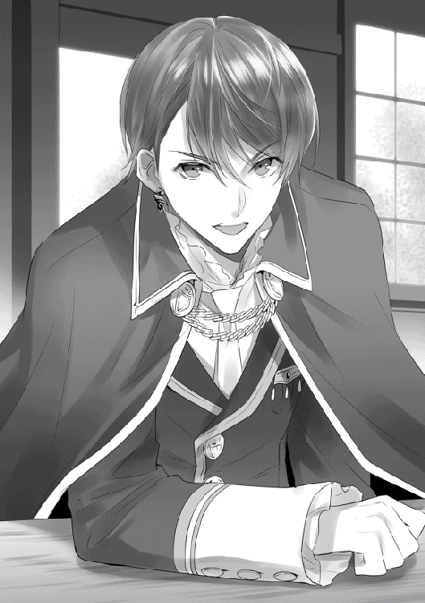
「おいおい。富と名誉、地位や権力よりも、一人の女の方がいいって言うのか？」
「もちろんだ」
「うわ、また即答だよ......」
呆れたと言わんばかりのジョルトの表情。そんな彼に対して、辰巳は明らかな怒気をジョルトに向ける。
「それより、こんな下らないことを言うために、俺が神殿から出てくるのを待っていたのか？」
「まあ、タツミを待っていたことに違いはないな。実は俺の爺ちゃんがタツミを呼ぶって言っていたから、その時に会わせてもらおうかと思っていたんだけど......爺ちゃんに、そんなに会いたければ自らの足を動かすのが礼儀だろうって言われてさ。それで、こうして会いに来たってわけ」
「そこまでして俺に会いたかった理由が、チーコが欲しいからだって？ だったら悪いが、お前の話に付き合うのはここまでだ」
辰巳はテーブルの上に数枚の銀貨を叩きつけるように置くと、そのまま椅子から立ち上がった。
明らかに怒っている様子の辰巳に対して、なぜかジョルトは楽しそうに笑い声を上げる。
「ははははは。なるほどなぁ。確かにジュゼッペの爺ちゃんから聞いた通りの奴だな」
一頻り笑ったジョルトは、表情を改めると辰巳に向かって深々と頭を下げる。
「タツミを試すような真似をして済まなかった。ジョルトリオン・レゾ・ラルゴフィーリの名において、正式に謝罪する」
「............え？」
ジョルトが正式なフルネームを名乗ったことで、辰巳は思わず身体を硬直させた。
名前が三節から構成される者、そしてラルゴフィーリを名乗る者。それがこの国ではどのような身分を表しているのか。辰巳もジュゼッペから教えられている。
「お、王......族......？」
「おう、俺は歴とした王族だぜ？ 言っただろ？ 俺の身分は結構高いってさ。一応、俺の爺ちゃんが当代で、俺の親父が次代の国王な。で、俺は親父の長男だから、このまま何事もなく順当に行けば、次々代の国王は俺ってわけだ」
高いなんてものじゃない。この国でも頂点に立っていると言ってもいい身分である。
今度は辰巳が間抜け面を晒す番だった。そんな辰巳を見て、ジョルトが再び屈託のない笑い声を上げた。
「いやぁ、本当にごめんな？ タツミがジュゼッペの爺ちゃんから聞いた通りの奴かどうか、確かめたかったんだよ」
再び腰を落ち着けた辰巳とジョルト。運ばれて来たお茶に口をつけながら、二人は話を再開させていた。
「それはどういう意味......ですか？」
「ああ、気楽に喋れってば。確かに俺は王族だけど、ここは公の場じゃないし、タツミも国の枠組みから外れている神官だし、今まで通りでいいぞ」
相変わらず人好きのする笑みを浮かべるジョルトに、辰巳は苦笑しながら彼の提案を受け入れることにした。
「じゃあ、そうさせてもらうけど......それで、さっきのはどういう意味だったんだ？」
「それじゃあ、改めて単刀直入に言おうか。俺が欲しかったのはカルセじゃない。タツミ、おまえの方なんだよ」
「お、俺......？ それって、俺にジョルトの部下になれってことか？」
「違う違う。確かに有能な奴や希有な才能を持っている奴を手元に置いておきたいって思いはあるが、俺がタツミに望んでいるのは部下じゃないんだ。俺がタツミに求めているのは......俺の友人になって欲しいのさ。それも絶対に信頼できる親友って奴に、な」
恥ずかしげもなく親友になれというジョルトに、辰巳は思わず目を白黒させる。
「いやさ？ 俺って立場が立場じゃない？ だから、あれこれと擦り寄ってくる連中はたくさんいるんだよ。でも、そんな連中をおいそれと信頼するわけにはいかない。もちろん中には信頼するに値する者もいるけど、そんな奴らも家柄とかいろいろとあるんだよな、これが。俺が必要以上に親しくすると、それだけで嫉妬の対象になる......みたいなさ」
ジョルトの言うことは辰巳にも理解できる。順当にいけば次々代の国王となるジョルトの周囲には、様々な思惑を抱えた者たちが集まるだろう。そんな連中を、おいそれと信頼できない彼の気持ちは当然のものだ。
また、将来の王と親しいとなれば、そこを妬む者だって皆無ではないだろう。
「だけど、タツミなら信頼できる。さっきの話で俺はそう確信したね。だってあれだけあっさりと即答されたら、こりゃもう、信頼するしかないじゃない？」
ジョルトは辰巳がカルセドニアと別れる条件として提示した、彼の妹との婚姻。それは将来の王妹との婚姻である。
王妹との婚姻となれば、野心のある者ならば食いつかないわけがない。だが、辰巳はその条件を見事なまでにあっさりと断った。確かに「妹との婚姻」を切り出された時はジョルトが将来の王とは知らなかったが、それでも彼がかなり高位の貴族であろうことは推測できていた。
そんなジョルトからの婚姻の話をきっぱりと断ったということは、辰巳には政治的な野心がないという証であるとジョルトは判断した。
「そもそも、どうしてジョルトは『親友』を欲しがるんだ？ 親友なんてものは、『なってくれ』って言われてなるもんじゃないだろ？ それにジョルトの周囲にだっていい奴はいるはずだ」
「うん。確かに誠心誠意俺に仕えようって奴もいるよ？ でもさ、俺、憧れているんだよ。俺の爺ちゃんとジュゼッペの爺ちゃん、後は海洋神ダラガーベ教団の最高司祭のグルグナードの爺ちゃんとか......昔っからの親友同士でさ。今でも憎まれ口を平気で叩き合うぐらい仲がいいんだぜ？」
そんな祖父たちの様子を幼い頃から間近で見てきて、ジョルトもいつかは祖父たちのような気がねなく付き合える友人が欲しいと思うようになったという。
「今でも『友人』はそれなりにいるさ。でも、どうしたって主従関係はなくならない」
ジョルトはちょっとだけ寂しそうな表情を浮かべた。
「俺が王族である以上は仕方ないことだろうけど......でも、やっぱり俺は爺ちゃんたちのような『親友』が欲しい。時に喧嘩したり、時に支え合ったり......なんでもない、くだらないことをぽんぽん言い合えるような『親友』が。爺ちゃんには心から信頼できる親友がいるんだ。俺にだってそんな存在がいてもいいじゃないか？」
ジョルトの口から零れ出る、彼の切実な願い。彼が真剣であることが分かるから、辰巳も黙って彼の話を聞いていた。
「その点、タツミは身分が神官で国という組織からは外れた存在だから、俺とは主従関係にはならないし、親しくしてもそれほど周囲の貴族連中だってあれこれ言わないだろ？ それにタツミの後ろにはジュゼッペの爺ちゃんがいる。王族とジュゼッペの爺ちゃんを敵に回そうって奴は、貴族の中にもそうはいないと思うぜ」
タツミ自身にも野心がないことは、先程確かめたばかりだしな、とジョルトは続けた。
「しっかし、カルセも随分と愛されているねぇ。先程のやりとり、カルセにも聞かせたかったな。いつも冷静なあいつが、タツミの熱い言葉を聞いてどんな顔をするか......見てみたかったなぁ」
「そうかぁ？ チーコはどっちかって言えば、ころころと表情が変わる方だと思うけどなぁ」
ジョルトはカルセドニアと知り合いとはいえ、それは辰巳と再会する以前の彼女でしかない。
以前の彼女は神官として最低限の付き合いはあれどあまり他人と交流せず、微笑みや愛想笑い程度はすれどもどちらかというと無愛想な方だった。その他人を寄せつけないところもまた、《聖女》と呼ばれるようになった理由の一つなのだが。
だが辰巳と再会して以来、カルセドニアは表情が明るく柔らかなものになったと評判である。
だが、ジョルトは辰巳と再会して変化したカルセドニアを知らない。
ここ数年、カルセドニアは辰巳を召喚する準備であれこれと忙しく、また同時に神官としての務めもあった。そして辰巳を召喚後はそれこそ辰巳とほぼ一緒だったので、ジョルトとは顔を合わせる機会がなかったのだ。
「え？ カルセが表情をころころ変える......？ うわ、信じられない。なにそれ？」
またもやぽかんとした間抜け面を晒すジョルト。そんなジョルトを見て、今度は辰巳が笑う番だった。
もう、辰巳の中に彼に対する警戒心はない。そして、彼の心情を聞いた今では、親友になれるかどうかは今後次第だが、彼と友誼を結ぶこと自体は肯定的に考え始めていた。
「そんなに信じられないか？ だったら今度俺たちの家にでも来て......って、そもそも王族が一人で街をほっつき歩いていていいのか？」
ふと辰巳はその事実に思い至った。将来の王となる人間が、たった一人でのこのこ出歩いていていいはずがない。
「ああ、それなら大丈夫だよ。爺ちゃんには許可もらってあるし。爺ちゃんが許可を出したってことは、俺たちが気づいていないだけで護衛の三人や四人はその辺にいるはずさ。それに今はタツミが一緒だしな。タツミならば、もしもの時に俺を連れて何とでも逃げられるだろ？」
「まあ、逃げるだけならそれなりに自信あるけど......」
「だろ？ 俺もタツミの能力に関しては聞いているしさ。あ、ちなみに、城から出る時は秘密の抜け道を使いましたー」
「ぬ、抜け道......？ た、確かに城に抜け道はつきものだろうけど......」
「そういうこと。そうだ、なんだったら秘密の抜け道を二つ三つ教えておこうか？ タツミさえ良ければ、そこを通って俺の所に遊びに来てもいいぜ？ もちろん、カルセも一緒にな」
「............そういう城の抜け道って......国の最重要機密なんじゃないのか......？」
思わず頭痛を感じる辰巳であった。
もっとも、辰巳がその気になれば、抜け道など使わなくても王宮に忍び込むのは難しくはないのだが。
「抜け道はともかく、家に遊びに来るのは歓迎するよ。ただし、前もって知らせてくれれば、だけどな。突然来られても、俺たちが家にいるとは限らないし」
「そうだな、久しぶりにカルセにも会いたいし、今度改めてタツミたちの家にお邪魔させてもらうよ。もちろん、前もって知らせは送るから」
辰巳とジョルトは、含みのない笑みを浮かべ合う。そしてどちらからともなく、互いの手をしっかりと握り合った。
これが後に稀代の名君として称えられるジョルトリオン王と、《天翔》の二つ名で呼ばれる魔祓い師の出会いであり、友としての付き合いの始まりだった。
「ところで、どうしてタツミはカルセのことを『ちーこ』って呼ぶの？ 何か意味があるんだろ？」
「え、えっとそれは......」
ジョルトの質問に即座には答えられず、目を泳がせる辰巳。そんな辰巳を、ジョルトはにまにまとした笑みを浮かべて見つめる。
「もしかして、『二人だけの秘密』ってやつ？ うわー、甘酸っぱいなー。いいよ、いいよ、詳しいことは聞かないであげるよ」
「う、うるさいなっ!! ジョルトには関係ないだろっ!!」
顔を真っ赤にしながら、ちょっと強めの言葉で誤魔化す辰巳であった。
「俺のお勤めは初日の午後と三日目の午前中か」
「となると、俺とタツミは同じ組だから俺のお勤めも初日の午後と三日目の午前中か。なら、最終日の午後からの騎乗槍の試合は見ることができそうだな。よし、ナナゥと一緒に見に行こう」
「俺たち兄弟はその時間帯に仕事だよ......くそ、騎乗槍の試合、楽しみだったんだがな......」
「仕方ないだろう、ニーズの兄貴。これも仕事だ」
ここはサヴァイヴ神殿の中庭。間近に迫った新年祭の仕事のスケジュールを確認しながら、辰巳は昼食時の休憩時間にバースやニーズたちとあれこれと話に花を咲かせていた。
「私は確か、二日目の午前が仕事のはず......あ、でも、お祖父様から三日目の午後、お祖父様が執り行う新生児へ祝福を与える儀式の手伝いを頼まれていました」
「ああ、そ、それなら俺も......た、頼まれていたっけ」
なぜか頬をやや赤く染めながら、辰巳はふと隣に腰を下ろしているカルセドニアから目を逸らした。
辰巳のその態度に内心で首を傾げつつも、カルセドニアは祭中の予定に思いを馳せる。
「でしたら、二日目の午後はご主人様とご一緒にお祭りを見物できますね！」
「そ、そうだな」
「二日目の午後と言えば、宵月神の神殿が主催する宝探しがあるじゃない？ 何だったら、カルセと一緒にそれに参加すれば？ タツミなら移動に時間をかけなくてもいい分、たくさん宝を探せるんじゃないの？」
「どうかなぁ？ そう簡単なものじゃないと思うけど......そういうジョルトは予定あるのか？」
「俺？ 俺の予定といえば初日のじい......いや、国王陛下の挨拶の時に隅っこの方に顔を出すぐらいで、それ以外は特に予定はないよ？ 親父はともかく、俺はまだまだ『子供扱い』だから」
なぜか、最近頻繁にサヴァイヴ神殿に出没するジョルト。
バースたちも最初はどこの誰だと疑問に感じ、その身なりからおそらくは貴族、それもかなり高位の家柄の子弟だと予測したが、辰巳とはいやに親しそうだし、自分たちにも身分を気にすることもなく接して来るしで、気づけばいつの間にかバースたちもかなり打ち解けていた。
さすがに辰巳もジョルトの身分を明かしていない。もしも彼の身分をバースたちが知れば、いくら辰巳の知り合いとはいえ、ここまで親しく接することはなかっただろう。
ちなみに、先程のジョルトの「国王陛下の挨拶の時に隅っこの方に顔を出す」という言葉も、バースたちには違和感のあるものではなかった。国王が新年の挨拶を行う時は、全ての貴族がその場に立ち合うのが通例だからだ。
だが、ジョルトと辰巳が親しくしていることに、一番驚いたのは他ならぬカルセドニアであろう。
突然ふらりとサヴァイヴ神殿に姿を見せたジョルト。供の者さえおらず一人で神殿内を歩く彼の姿を見た時、カルセドニアは我が目を疑ったものだ。
更には「やあ、カルセ、久しぶりー。ところで、タツミはどこ？ 一緒じゃないの？」と何とも辰巳と親しそうだったので、彼女の驚きは更に大きくなった。
後に辰巳からジョルトとの出会いを聞き、王族──それも将来の国王と知りつつも普段通りの彼の様子に、思わず驚きを通り越して呆れてしまったほどである。
「個人的には、騎乗槍の試合ってのを見てみたかったんだけどなぁ」
「それならば、二日目の午後には予選が行われるはずですよ？ 三日目......最終日の午後は本戦なので、その前に予選があるのです」
「そっか。じゃあ、それを見物に行こうかな？ チーコも一緒に行くか？」
「はい、もちろんご一緒します！」
辰巳と一緒なのが嬉しいのか、カルセドニアは満面の笑みで即答する。
バースやニーズたちにとってはいつものことだが、ジョルトにはちょっと違った。彼はカルセドニアがここまで晴々とした笑顔を浮かべるのを初めて見たのだ。
「うっわー、話には聞いていたけど、本当にカルセってばタツミにはそんな顔を見せるんだなぁ。いやぁ、びっくりびっくり」
「な、ジョルト。俺たちが言った通りだろ？ カルセドニア様はタツミにはいつもあんな感じだ」
「うん、バースやニーズたちから聞いてはいたけど......こうして実際に見るまでは半信半疑だったんだよ。以前のカルセを知っている身としてはさ」
「俺たちは、以前のカルセドニア様のことは噂程度にしか知らないからなぁ。こうしてカルセドニア様と親しくなったのもタツミと婚約する直前で、その時にはもうこんな感じだったし」
「でも、以前のカルセよりも今のカルセの方が絶対いいよね？ そっか、改めて考えると、タツミは凄いことを成し遂げていたんだなぁ」
「あ、あの、ジョルト様......？ あ、あまり昔のことを言われるのは、その......」
やはり、昔のことをあれこれと言われるのは恥ずかしいのだろう。カルセドニアは頬を染めながらちらちらと隣の辰巳の様子を心配そうに伺う。
そんなカルセドニアに対して、辰巳は大丈夫とばかりに頷いて見せた。
それだけでカルセドニアに再び笑顔が戻る。そして、さりげなくお尻の位置をすすすっとずらして座っている位置を調節し、辰巳の方へと自分の身体を近づける。
「あ、そうだ、カルセ。俺のことを『様』付で呼ぶの禁止ね？ タツミやバースたちが呼び捨てにしているんだから、カルセもそうすること。いいね？」
「え、で、ですが......」
「呼び捨てが難しいのなら、ほら、昔みたいに『ジョルトくん』って呼んでもいいよ？ 爺ちゃんたちに紹介されて知り合ったばかりの頃はそう呼んでいたじゃない？」
「そ、それはお互いに幼かったからで......そ、その......本当によろしいのですか......？」
「うん、よろしい、よろしい」
嬉しそうにジョルトが微笑む。
「あ、あのっ!! で、できればボクもカルセドニア様に『シーロ』って呼び捨てにして欲しいです！ 更に欲を言えば、無様に地面に這い蹲ったボクを、冷たい視線で見下ろしつつ、踵の高い靴で踏みつけながらでお願いします！」
それまでジョルトとカルセドニアのやり取りを、どこか羨ましそうな目で見ていたシーロが口を挟む。
当然、無視された。
辰巳たちの長閑な休憩時間は、中庭に姿を見せた一人の神官の呼びかけで唐突に終わりを告げた。
「ヤマガタ上級神官」
現れた高司祭は、穏やかな笑みと落ち着いた低い声で辰巳を呼ぶ。
身に纏っている神官服と聖印から、その神官の身分が高司祭であることが知れる。
「はい」
名前を呼ばれた辰巳は慌てて立ち上がる。いや、辰巳だけではなくカルセドニアやバースたち全員が立ち上がっている。
唯一、神官ではないジョルトだけが涼しい顔で椅子に腰を下ろしたままだが。
「クリソプレーズ猊下がお呼びだ。ただちに猊下の執務室へ向かいなさい」
「分かりました」
穏やかだが妙に迫力を秘めた声に、辰巳は即答した。
高司祭はジュゼッペからの伝言を伝えると、笑顔のまま辰巳たちに背中を向けて中庭から立ち去る。
「さて、と。休憩時間は終わりだな。これからまたお勤めだ」
背伸びをしながらバースが言う。
カルセドニアもニーズたち三兄弟も、休憩時間を終えてそれぞれの仕事に戻るのだ。
「じゃあ、みんな。お仕事がんばってねー」
只一人、ジョルトだけが気楽に辰巳たちを励ます。
「そう言うジョルトはどうするんだ？」
「俺？ タツミたちの仕事の邪魔をするつもりはないから、素直に家に帰るよ」
ジョルトはちらりと自分の家──王宮へと視線を走らせながら腰を上げた。
「でも、お祖父様はどのような要件でご主人様をお呼びになられたのでしょうか？」
「う、うーん、ま、まあ、行けば分かるんじゃないかな？」
首を傾げるカルセドニアに、辰巳はちょっと歯切れの悪い言葉で応える。
「じゃあ、俺はジュゼッペさんの所へ行ってくるよ」
「はい。では、またお家でお会いしましょう」
ジュゼッペの執務室に向かう辰巳へと、嬉しそうにひらひらと手を振るカルセドニア。バースやニーズたちもそれぞれの持ち場に戻って行き、ジョルトも神殿を後にした。
「どうじゃな、婿殿。カルセの奴に気取られてはおらんじゃろうな？」
ジュゼッペの執務室に入った辰巳に、サヴァイヴ教団の最高司祭は実に楽しそうな顔で彼に尋ねた。
「はい。大丈夫だと......思います。家でも何も言っていませんから」
「そうか、ならばよろしい。もう少しだけ、内緒で頼むぞい」
悪戯を企む悪ガキそのものの笑顔を浮かべるジュゼッペ。そんな恩師に辰巳は苦笑を浮かべるしかない。
「と、ところで......準備の方は大丈夫なのですか？」
「うむ。どこぞの女狐も楽しそうに協力してくれておる。既にモノは仕上がっておるそうで、後は本番を待つばかりじゃ。おぬしの方はどうじゃな？」
「俺の方もジュゼッペさんに教えられた店で、当日の衣装の用意は済ませました。エルさんも衣装の準備には快く協力してくれましたし。もちろん、チーコには何も言っていません」
辰巳の返答を聞き、ジュゼッペは満足そうに頷いた。
「いよいよ祭も間近に迫った。本当に今年の祭は楽しみじゃて」
「俺は正直、それどころじゃないですよ。緊張で今から息が止まりそうです」
「ほっほっほ。今からそれでは、当日になったら死んでしまいそうじゃな」
楽しそうに笑うジュゼッペ。だが、彼は不意に表情を改める。
「済まんの、婿殿。おぬしには迷惑かもしれんが、これも老い先短い老いぼれの頼みと思ってくれ」
「お、老い先短いだなんて......ジュゼッペさんはまだまだ元気じゃないですか！」
「そうでもないぞ？ 儂ももう十分長生きしておる。それに年老いた者から順に神の元へと召されるのは、これはこれで幸せな証拠じゃよ」
「......『祖父死ぬ、親死ぬ、子死ぬ』ですか」
「ん？ なんじゃな、それは？」
「俺の故郷......日本のどこかの地方の民話か何かで、以前ちょっと耳にしたことがありまして......細かい部分はうろ覚えですが、要は年長者から順に死んでいくことこそが、皆が無病息災で天寿を全うできた証拠だって話です」
「ほぉ、なるほど......なかなかに奥の深そうな話じゃな。いつか機会のある時にその話の詳細を聞かせてくれ」
辰巳の話を聞いたジュゼッペは、興味深そうに何度も頷いた。
「ところで......例の話はチーコにはしていませんが、他の知り合いにはしても構いませんか？」
「うむ、最近は婿殿も交友関係が広がっておるようじゃし、折角じゃから友人知人を全て集めて盛大にやりたいしの。婿殿の知人たちに教えるのは構わんが、くれぐれも秘密が漏れることのないよう、口の固い連中だけにしておいてくれんかの？」
「はい。知人の中でも口の軽そうな者には内密にしておきますよ」
二人が交わす話だけを聞けば、まるで何やら悪巧みでもしていそうな様子だが、辰巳のどこか照れ臭そうな様子からそれが単なる悪巧みでないことは容易に知れるだろう。
こうして、ジュゼッペのいわば「幸せな悪巧み」は、辰巳の知り合いの間──一部の口の軽そうな者を除く──にも広まっていき、静かに盛り上がりを見せていく。
そして。
いよいよ、新しい年を告げる新年祭が始まる。
「ラルゴフィーリ王国国王バーライド・レゾ・ラルゴフィーリの名において、ここに新しい年の訪れと共に新年祭の開催を宣言する！」
王宮の中庭に面したバルコニー。
そこに姿を見せたラルゴフィーリ王国の国王は、貴族や庶民が詰めかけた中庭に向かって、堂々とそう宣言した。
この時をもって、国王の言葉通り新たな年と、今年の新年祭が幕を開けたのだ。
国王の宣言と同時に、王宮の中庭では酒や料理が振る舞われる。
この祭りの間は王宮の一部も一般公開され、普段は決して足を踏み入れることのない王宮の中を、庶民たちが物珍しそうに見物している。
もちろん、重要区画は立ち入り禁止であり、そのような場所には装飾の施された儀礼用の武器や鎧を身に着けた兵士や騎士が立っている。
だが、騎士たちのその物々しい出で立ちも小さな子供たちには大好評で、子供たち──特に男の子たちは普段は間近で見ることのできない騎士たちの勇ましい姿を、きらきらした瞳で熱心に見つめている。
また、子供たちに憧憬の視線を向けられた騎士たちも、照れ臭そうでありながらも胸を張って子供たちの期待に自慢気に応えていた。
中には早速振るまい酒に酔っ払い、立ち入り禁止区域に入ろうとして騎士に摘み出されている者もいるが、それもまた新年祭の風物詩の一つだ。
当然、王宮だけではなくレバンティスの街全体も大いに浮かれており、辻のあちこちでは酒杯をぶつけ合う音が響き、楽師や曲芸師たちがその技を競い合っている。
市場には集まった商人たちが自慢の商品を並べて、客を呼び込むのに忙しい。
この日ばかりは普段は街に買い物に出ない貴族たち──貴族たちは普段、使用人に買い物させるか、商人を自宅に呼びつける──も、庶民に入り交じって商人たちが並べる商品を物色するのに忙しそうだ。
だが、街中がこうして浮かれた雰囲気に包まれると、当然ながらスリや置き引きといった犯罪も増える。
そのため、祭りを楽しむ人々の中に、厳めしい鎧姿の衛士や神官戦士たちの姿が街のあちこちで散見された。
「......これがこの国の祭りかぁ......」
サヴァイヴ神殿に所属する神官戦士として、武装した姿で街を歩いていた辰巳は、楽しそうな街の人々の様子を見て思わず呟いた。
人々のざわめきと様々な音楽に溢れた街中にいると、皆が本当に祭りを楽しんでいることがよく分かる。
祭りの賑やかな雰囲気は万国共通なのだろう。それは異世界であっても変わることはない。辰巳は街を見回りながら、そのことを改めて実感した。
同時に、周囲には警戒した視線を常に走らせる。
今の彼は神官戦士として、治安維持の任務中だ。祭りの雰囲気に浮かれて、犯罪を見落としては目も当てられない。
とは言え、やはり祭りの真っ最中。辰巳も湧き立つ思いはどうしても抑えきれない。
と、そこへ。
「......しっかし、ジュゼッペ様もとんでもない無茶を言い出したものだなぁ」
呆れた口調でそう言うのは、辰巳とコンビで街を巡回しているバースだ。当然、彼も神官戦士としての正装で、祭りで賑わう街中を歩いている。
「それで、タツミはジュゼッペ様の計画を引き受けたのか？」
「まあ......引き受けざるをえなかったってのが実情だけど......」
恩師であり、そして既に家族とも思っているジュゼッペの頼みとあれば、辰巳としては余程のことがないかぎり断るつもりはない。
確かに簡単に頷けるようなものではなかったが、ジュゼッペの計画はいずれは辰巳が通らなければならない道でもある。
ならば、これを機会にするのも一つの手だろう。
「......確かにとんでもない依頼だけど......内容自体は嫌じゃないしな......」
「へーへー。ごちそうさま」
呆れたように言うバース。もちろん、肘で辰巳の脇腹をちょっと強めに突くのも忘れない。
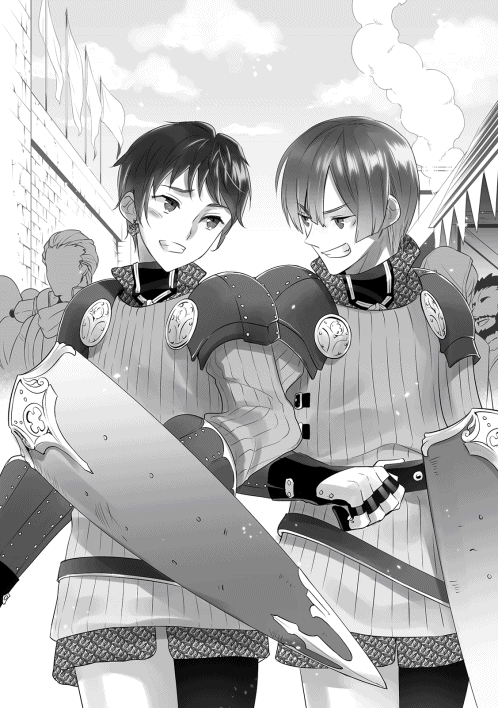
「そ、それで、さっき言ったことだけど......」
「おう、分かったよ。騎乗槍の決勝を見にいくつもりだったけど、そっちの方がおもしろそうだ。でも、ナナゥには何て説明するかな？」
「やっぱり、ナナゥさんには言わない方がいいのか？」
「その方がいいぜ。あいつ、あれで結構お喋りだしな。それに内容が内容だ。女連中は浮かれてついぽろっと......ってのも考えられる」
「じゃあ、ミルイルにも言わない方がいいかな......？」
辰巳は魔獣狩り仲間の少女の姿を脳裏に描く。
「うーん、どうだろう？ 俺はあの人とはそれほど親しくはないからなぁ。タツミの判断に任せるとしか言いようがない」
バースとミルイルは辰巳を通じて、もしくは〔エルフの憩い亭〕の従業員であり、バースの恋人であるナナゥを通じて何度か顔を合わせたことはある。
だが、その程度の知り合いでしかない。バース自身が言うように、彼とミルイルはそれほど親しくはないのだ。
「でも、ミルイルからナナゥさんに話が漏れるって可能性はあるか......」
「確かに、ネタがネタだけに女性陣が盛り上がるのは明らかだろうし、秘密の漏洩を防ぎたいのなら知らせない方がいいかもな」
辰巳としてはミルイルがそれほどお喋りな方だとは思ってはいないが、バースの言う通り内容が内容である。それにやはり、秘密を知る者は少ない方がいい。
「......仕方ない。ミルイルには悪いけど黙っていよう。彼女は当日、ジャドックに会場に引っ張ってきてもらうか」
辰巳は心の中でミルイルに詫びつつ、そう決断した。
「後は......念のため、ニーズたちにも黙っていた方が良さそうじゃね？ サーゴは意外と口が固そうだが、シーロは絶対軽いだろ？」
「うん、それは俺も同感だ」
ミルイルの時ほど迷うことなく、辰巳は即断した。
各神殿の中庭に設けられた救護所。新年祭の間中、救護所は最も忙しい部署の一つだろう。
祭りの雰囲気に呑まれてついつい酒を飲み過ぎた者、些細なことで殴り合いの喧嘩にまで発展した者、はたまた騎乗槍の試合やギッシュの大会で出た負傷者などなど。
様々な怪我人に加え、更には迷子になった子供までもが救護所に連れられてくる。
そんな者たちの相手をする神官たちにとって、この場はまさに戦場と言ってだろう。
そんな戦場の一角で、カルセドニアは怪我人の治療に精を出していた。
「......はい、これでもう大丈夫です。でも、いくらお祭りだからといって、軽々しく喧嘩なんてしないでくださいね？」
祭りに浮かれて殴り合いの喧嘩をし、サヴァイヴ神殿の救護所に担ぎ込まれてきた中年の男性は、照れ臭そうにしながら《聖女》直々の手当てを受けていた。
「......いやぁ、確かに調子に乗っていたかもしれないけどさ。でも、噂に名高い《聖女》様の治療が受けられるっていうのなら、喧嘩ぐらいいくらでもするってモンだぁな！」
がはははと高笑いする中年男性。カルセドニアは溜め息を吐きつつ、たった今自らが施した治療箇所──左の頬を殴られたらしいので、痛み止めの軟膏を塗っておいた──を少し強めにぱちんと叩いた。
「あだだだだっ」
「調子に乗らないでください」
「お、おう。いや、なかなか厳しいね、《聖女》様も。そんなんじゃ、噂の婚約者に嫌われるんじゃないか？」
《聖女》と呼ばれたカルセドニアが黒髪黒目の異国の青年と婚約したという噂は、最近では王都中に広まっている。どうやらこの中年男性も、その噂を耳にしているらしい。
「ご心配なく。私とご主人様はとっても仲良くやっていますから」
にっこりと微笑むカルセドニア。その笑顔に思わず魅入ってしまった中年男性は、毒気を抜かれた思いで呟いた。
「いや、まいったね。まさかここまで堂々と惚気られるとは」
中年男性はカルセドニアに最後に挨拶すると、そのまま救護所を後にした。
その確かな足取りを見て、カルセドニアも男性が問題ないことを確信し、次の怪我人へと取りかかろうとした時。
近づいてきた年配の女性神官が、カルセドニアに声をかけた。
「カルセドニア様はそろそろ休憩に入ってください。ここは私が代わりますから」
「そうですか？ なら、そうさせていただきます」
カルセドニアは年配の神官と交替すると、救護所務めの神官たちの控え室へと戻る。
「あ、カルセドニア様。お疲れさまですー」
「あら、カルセ。あなたも休憩？」
控え室に入ってきたカルセドニアに声をかけたのは、ふわふわした栗色の髪と青味がかかった灰色の瞳の少女と、燻んだ金髪と焦げ茶色の瞳の、カルセドニアよりやや年上といった印象の女性神官。
栗色の髪の少女は下級神官の、そして燻んだ金髪の女性は侍祭の身分を現す聖印を首から下げている。
「クーリとラライナ？ あなたちも休憩中？」
顔馴染みを見つけたカルセドニアは、笑顔を浮かべて彼女たちの方へと近づく。
神官の控え室と言っても、ここは神殿の中庭の一角に天幕を張っただけの場所。そのため、それなりに広くはあるのものの、椅子やテーブルはいくつもない。
クーリとラライナは椅子ではなく地面に敷かれた敷物の上に直接腰を下ろしていたので、カルセドニアも彼女たち同様に敷物の上に腰を下ろす。
クーリは手慣れた様子でお茶を淹れると、暖かく香りのいいそれをカルセドニアへと差し出した。
「でも良かったのですか、カルセドニア様？ 今日はカルセドニア様はお勤めの日じゃなかったはずですけど......」
「私たちはあなたが手伝ってくれて大助かりだけどね。でも、噂の婚約者くん......確かタツミくんだっけ？ 彼と一緒にお祭り見物に行かないの？」
クーリとラライナは、数少ないカルセドニアの友人たちである。
特にラライナはカルセドニアとは同期で、あまり友人のいないカルセドニアを何かと気にかけてくれた姉のような存在であり、その付き合いは今もこうして続いている。
対してクーリはカルセドニアの部下に相当する人物で、以前に辰巳への伝言を託したこともある少女である。
「私ならいいのよ。だって、今日の午後はご主人様がお勤めだから、家で一人でいても仕方ないし。それに、ご主人様のお勤めが終わった後、家に一緒に帰りがてら少し夜のお祭りを見て回る予定だから」
嬉しそうに微笑むカルセドニア。そんな彼女の笑顔を見たラライナとクーリは、思わず互いの顔を見合わせた。
「......最近のカルセドニア様、変わりましたよねぇ」
「本当ね。以前ならこんな自然に笑ったりしなかったし。でも、さらりと惚気られるとちょっと腹立つ。まさか、カルセに惚気られる日が来ようとは思いもしなかったわ」
ラライナもクーリも辰巳とは少し話をしたことぐらいならあるが、それほど親しいわけではない。
だが、カルセドニアの想いはよく知っているし、彼女の婚約者である辰巳もまた、カルセドニアをとても大切にしていることも知っている。
特にラライナは、こうして軽口を叩いていてもその表情は優しい。それが分かっているからこそ、カルセドニアも彼女の言葉を軽く聞き流すことができるのだ。
「うふふ。さっきも神殿に来ていた怪我人の方に、同じようなことを言われたわ」
「あー、そーですか」
ラライナが呆れたとばかりに肩を竦める。
「そこまで惚気るんなら、婚約で止まっていないでさっさと結婚しちゃえば？」
「え......？ け......こん？」
辰巳と結婚する自分を思わず妄想し、ぼわんと一瞬で真っ赤になるカルセドニア。
「もう一年も一緒に暮らしておいて、今更どうしてそこで照れるかな......？」
そんなカルセドニアを見て、ラライナは思わず溜め息を吐いた。
「だ、だって......っ!! あ、改めて結婚となると......そ、その......」
「じゃあ、タツミくんと結婚したくないの？」
「け、結婚したいっ!! そりゃあもうっ!!」
ラライナのその問いに、カルセドニアは真っ赤な顔のまま、拳を握り絞めて即答した。
新年祭二日目の午後。
辰巳とカルセドニアは、連れ立って王宮の練兵場に足を運んでいた。
本日ここでは、騎乗槍の予選試合が行われている。今も辰巳とカルセドニアの視線の先では、煌びやかな鎧と騎乗槍を装備した騎士たちが、激しい勢いで激突していた。
騎乗槍の試合は、文字通り騎獣に乗った状態で互いに正面からぶつかり合い、高速で交差する瞬間に相手を騎乗槍で突き、騎獣から落下させたら勝利となる。
地球にもかつては似たようなものが存在したが、当然ながら地球のそれとは幾つか相違点があった。
中でも一番の違いは、騎士たちが跨っている騎獣が馬ではない点であろう。
この国の騎士たちが騎獣として使用しているのは、駝鳥を二回りほど大きくした翼の退化した鳥の仲間だ。
駝鳥よりも全体的に丸っこいシルエットを持つその鳥は、この国ではパーロゥという名前で呼ばれている。
そして。
「......なぜに、全体のカラーリングが雀なんだろう......」
このパーロゥを初めて目にした辰巳は、そんな呟きを零していた。
白と茶色、そして所々に黒の入ったパーロゥの羽毛の色は、確かに辰巳の言うように雀を連想させる。
だが、雀よりも精悍な印象の鳥でもある。
パーロゥは足も速く持久力にも優れるが、ものを引く力はやや劣る。
そのため、ラルゴフィーリ王国では「馬車」ならぬ「鳥車」は存在せずに、「猪車」とでも言うべきものが一般に普及していた。
猪車を牽くのは文字通り猪によく似た、オークという名前の家畜化された魔獣である。
オークと言えば、日本では多くのファンタジー小説などに登場する豚人間とでもいうべき魔物が一般的だが、どうやらこの世界ではオークと言えばこの猪の魔獣を言うようだ。
ラルゴフィーリ王国では牛や馬などは野生種は存在するものの家畜としてはあまり利用されておらず、代わりにパーロゥやオークが家畜として様々な分野で活躍している。
特にオークは猪に似て力が強くて見てくれも厳ついが、性格は温厚で人によく懐くことから、この国の過去の人々は野生の牛や馬よりもオークを家畜として選んだらしい。
ちなみに、上位貴族の間では猪車よりも馬車を好む傾向にあるようだ。この国における馬車は、辰巳の感覚で言えば高級外車に相当するだろうか。
金属と金属がぶつかる甲高い音と共に、騎士の一人が煌びやかに飾りつけられたパーロゥから落下する。
落下した騎士は悔しそうに拳を地面に叩きつけ、逆にその騎士をパーロゥから突き落として勝利を手にした方の騎士は、兜を脱いで素顔を晒しつつ観客に手を振って己の勝利を誇示する。
勝利した騎士が誇らしげに会場を退場しようとした時、一般観客席の前方に陣取っていた辰巳たちの近くを通り過ぎていく。
「あれ......？ あの騎士は......」
辰巳はその騎士に見覚えがあった。それも、彼と初めて出会ったのは他ならぬこの練兵場で、だ。
年齢は二十代の半ばほど。騎士だけあって体格はよく、身長、体重共に辰巳よりも優っているだろう。
この国では最も一般的な焦げ茶色の髪と瞳の、「騎士」というイメージがぴたりと合う精悍な男性である。
どうやらその騎士の方も辰巳たちに気づいたようで、騎士は微笑みを浮かべると観客席の方へと自らが跨ったパーロゥを寄せてきた。
「おお、タツミ！ 見に来ていたのか！」
「勝ったんですね、ガイルさん！ おめでとうございます！」
彼──ガイル・ユトリロスはこの練兵場での事故の時、辰巳にくってかかってきた騎士である。だが、その後に和解した今では、二人は良き友人となっている。
「順調に明日の本戦に進むことができた。できれば、明日も見に来てくれ」
「あ、明日ですか......明日はその......」
隣のカルセドニアをちらちらと見ながら言葉を濁す辰巳。そんな辰巳を、ガイルは不思議そうに首を傾げつつ見る。
「あ、明日は神殿の方で少々用事がありまして......お、俺としても騎乗槍の試合の決勝は見たかったのですけど......」
「そうか、タツミも神官である以上、神殿の務めとあれば仕方ないな。だが、明日は必ず優勝してみせるからな！ その時は酒の一杯も奢ってもらうぞ？」
「分かりました。上等の酒を奢りますよ。だから、がんばってください」
「おう、任せておけ！」
辰巳の声援に胸を張って応えたガイルは、朗らかに笑うと手を振りつつ練兵場を後にした。
その背中が見えなくなるまでガイルを見送った辰巳は、改めて試合会場へと目を向ける。
だが、彼の注意はどうしても隣に座る最愛の女性へと向いてしまう。
爽やかな新春──この国では春は「海洋の節」と呼ばれる──の空気が、カルセドニアの白金の髪をふわりと揺らす。
それだけで、彼女の周囲に光が舞い踊っているような錯覚に囚われる。
明るい陽光がカルセドニアの美貌を照らし、いつも以上に眩しく感じるのは、きっと辰巳だけではないだろう。
その証拠に、辰巳たちの周囲に座っている年若い男性たちのほとんどが、騎乗槍の試合をそっちのけでカルセドニアに見惚れているのだから。
そして何より特徴的なのは、紅玉の如き真紅の双眸。春の麗らかな光のせいか、彼女の二つの宝石は本物にも負けないくらい光り輝いている。
そんな女性と一緒にいることが、誇らしいやら照れ臭いやら。辰巳が内心でそんなことを考えていると、不意にカルセドニアと目が合った。
どうやら、辰巳が自分を見ていることに気づいたようだ。
「どうかなさいましたか？」
「い、いや、な、なんでもないよ......っ!!」
辰巳は赤くなりながらも、慌てて騎乗槍の試合会場へと視線を向ける。
だが、実際には騎乗槍の試合などまるで頭に入らない。今の彼の胸中は、いよいよ明日に迫ったジュゼッペの仕掛けのことで大半が占められていたからだ。
明日のことを考えると、緊張で胃に穴が空きそうだ。もしも明日のジュゼッペの仕掛けに失敗したら、大恥を掻くだけでは済まないだろう。
まさかカルセドニアを相手に失敗するとは辰巳も思っていない。だが、もしかしたら......とついつい最悪の事態を考えてしまう。
しかし、そんな不安と同時に、期待に胸が膨らむ部分も確かにあるのだ。
不安と期待という真逆の感情を抱えながら、辰巳は明日のことを考えつつ深い溜め息を吐き出した。
騎乗槍の試合を見終えた辰巳とカルセドニアは、そのまま祭りに浮かれる街の中を寄り添いながら見て歩く。
街角で芸を披露する吟遊詩人や曲芸師の技量に感心して銀貨を投げ込んだり、屋台で売られている食べ物を堪能したり。
ふらりと入った店で果実酒などを楽しんだりと、二人は気ままに祭りを楽しんでいく。
そして陽が沈む時間になった時、ようやく辰巳たちは我が家へと足を向けた。
電気などないこのラルゴフィーリ王国では、本来ならば日没がその一日の終わりを意味する。
歓楽街などの例外を除けば、十分な照明の得られない夜間は早々に寝入ってしまうのが普通なのだ。
だが、この祭りの間だけは違う。祭りの期間中は街中で篝火が焚かれ、夜でも喧騒が絶えない。
さすがに現代日本のようにはいかないが、それでも普段と比べれば日没後もかなり賑やかだ。家に帰った後も、家の外からは絶え間なく祭りの喧騒が聞こえてくる。
「......こうして夜に賑やかなのって......久しぶりだなぁ」
かつて、日本にいた頃ならば当たり前だったこと。
二十四時間営業の店舗が町中に溢れ、街灯は一晩中明るく灯されている。
たとえ真夜中でも出歩く人間がいて、まさに「眠らない町」と呼んで差し支えなかった場所。
「そうですね。私も覚えています。かつてご主人様と一緒に暮らした町のことを......本当に夜でも賑やかな所でした......」
窓から街を眺める辰巳の横に立ち、彼の肩にそっと頭を預けるカルセドニア。
彼女もはっきりとではないが覚えている。
夜道を通過する自動車のエンジン音。電気のお陰で家の中は昼のように明るく、テレビを点ければ深夜でも賑やかな番組が放送されていたし、時にはパトカーや救急車、消防車のサイレンが煩いほどだった。
祭りに浮かれる夜に日本を照らし合わせた二人は、互いの手と手を握り締め、ぴたりと寄り添いながらいつまでも眠らない街を眺めていた。
翌朝。新年祭も最終日。
祭りも今日で終わりということで、早朝から街は賑やかであった。
いつものようにカルセドニアが用意してくれた朝食を食べ終わった辰巳は、午前中の警備の仕事のために神殿へと向かうために家を後にする。
「じゃあ、行ってくる」
「お勤め、がんばってくださいね。お昼は用意しておきますから、神殿のいつもの場所でご一緒しましょう」
午前中は家に残るカルセドニアに手を振りながら、辰巳は神殿を目指す。
だが、辰巳は神殿へと向かう道を途中で外れ、神殿とは逆方向へと足を向けた。
神殿からどんどんと遠ざかるが、辰巳の歩みには全く迷いがない。
そうして辰巳が到着したのは、彼のよく知る一軒の宿屋軒酒場。入り口の横に掲げられた看板には、相変わらず日本語で「エルフの憩い亭」と記されている。
辰巳は緊張した面持ちで扉を潜ると、カウンターの奥にエルの姿を見つけて彼女へと近づいていった。
「あ、タツミさん、いらっしゃい。待っていましたよ」
いつものように、にこやかに出迎えてくれるこの店の女主人。彼女は辰巳の姿を確認すると、一旦奥へと引っ込んですぐに店へと戻ってきた。
その腕に何やら荷物を抱えて。
「こちらが用意された衣装です。でも、流石はサヴァイヴ神殿の最高司祭様と公爵家の大奥様が紹介してくださった服飾店だけありますねー。私が見せた幻覚をこんなに忠実に再現させるなんて」
そう言いながらエルが広げた衣服は、ラルゴフィーリ王国ではまず見ることのできない意匠のもの。だが、それは辰巳にとってはテレビなどでそれなりに見慣れたものである。
もっとも、それに実際に袖を通したことは、彼も今まで一度もないのだが。
「カルセさんの衣装の方も、私が見せた幻覚を元にしてクワロート公爵家に出入りするお針子さんたちが、総力を上げて仕上げたそうですよ？」
「ありがとうございます、エルさん。今回は本当にいろいろと助力してもらって」
「いいんですよ、気にしないでください。ああ、衣装の方はサヴァイヴ神殿に運んでおきますけど、これだけはタツミさんが直接持っていてください」
そう言いながらエルが取り出したのは、掌大の小さな箱。これもまた、エルの顔馴染みの職人に特注で作ってもらったものである。
この小さな箱も、辰巳や日本で暮らした経験のあるエルには馴染みのものだ。特にエルは、夫であった人物から手渡された経験がある。
「儀式の後、このお店で一席設けておきますから。楽しみにしていてください」
「あはは。いわゆる二次会って奴ですか......うう、なんか余計にプレッシャーが......」
渋い顔をしながら、辰巳は胃の辺りを片手で押さえる。
「ふふふ......そう言えば、ヤスタカさん......いえ、亡くなった主人も、当日の朝に同じようなことを言っていましたね」
昔を思い出したエルは、少し懐かしそうに微笑んだ。
そんなエルに何度も頭を下げた辰巳は、改めて神殿に向かうために〔エルフの憩い亭〕を後にする。
出入り口の扉から店の外へと出ていく辰巳の背中を見ていたエルは、これまでに味わったことのない不思議な感情に囚われていた。
「......もしかして、これが一人前になった息子を送り出す、母親の心境って奴ですかね？」
誰に聞かせるでもなく、エルは呟く。
夫との間に子供を設けることのなかったエル。当然ながら、二百年を超える人生の中で、彼女がそんな感情を抱いたことは一度もない。
だからエルは。
なりたくてもなれなかった「母親」の心境を僅かにでも抱かせてくれた辰巳に、心の中でそっと感謝の言葉を述べたのだった。
新年祭、最終日。その午後。
サヴァイヴ神殿の礼拝堂では、今年生まれた赤子を抱えた母親や父親で溢れ返っていた。
ラルゴフィーリ王国における、新生児の死亡率は決して低くはない。どんな未熟児で生まれても、かなりの高確率で無事に成長できる現代日本とは違うのだ。
そのため、我が子が健やかに育つようにと、日々サヴァイヴ神に祈りを捧げるのは、子供の無事な成長を願う両親にとっては重要な行為なのである。
そして本日。そのサヴァイヴ教団の最高司祭が、貴族といわず庶民といわず、分け隔てなくサヴァイヴ神の加護を授けてくれるというのだから、そこに赤子を抱えた両親が集まるのも無理のないことだろう。
とはいえ、最高司祭が何らかの魔法を使うわけではない。単に子供たちの成長を神に祈願し、そして子供の一人ひとりに手ずから神の祝福を与える。それだけの儀式でしかない。
それでも、我が子にサヴァイヴ神の祝福を願わない親がいるはずもなく、多くの親が我が子と共にサヴァイヴ神殿に押しかけていた。
中には赤子ではなく、大きなお腹を抱えた妊婦の姿もある。子供が元気に生まれますようにと、最高司祭より下される神の加護を求めているのだ。
やがて、サヴァイヴ教団の最高司祭である、ジュゼッペ・クリソプレーズが礼拝堂に姿を見せた。
金糸銀糸をふんだんに使った豪奢な儀礼用の神官服。手には最高司祭の位を現す錫杖を持ち、威厳を纏って歩く姿はまさに威風堂々。
普段はなかなか目にすることのできない最高司祭の登場に、集まった人々は自然と口を閉じ、深く頭を下げる。
その最高司祭の後ろには、同じく儀礼用の神官服に身を包んだ数人の司祭が付き従っている。その中には高名なサヴァイヴ神殿の《聖女》の姿もあり、礼拝堂に集まった人々は今日の儀式でより一層の加護が得られると、その顔を期待で輝かせる。
そして、礼拝堂の壇上に上がったジュゼッペは、朗々とした声で儀式の開始を宣言した。
粛々と儀式が進む中、カルセドニアはこっそりと礼拝堂の中を見回していた。
礼拝堂の所々には、武装した神官戦士の姿が見受けられる。だが、そのことは不思議ではない。このような儀式の際、もっと言えば最高司祭であるジュゼッペがここにいる以上、警備の神官戦士がいるのは当然のことなのだから。
彼女が不思議そうに僅かに首を傾げる理由は、その中に辰巳の姿がないからだった。
昼時に一緒に昼食を食べた際、彼は確かに神官戦士として武装した姿でいた。午前中は街を見回っていたので、それも当然だろう。彼と一緒に見回りをしたバースも、やはり同じように武装していたし。
そして、辰巳はこの儀式の手伝いをジュゼッペから頼まれたとも言っていた。そのため、カルセドニアは辰巳は警備に駆り出されているとばかり思っていたのだ。
（............ご主人様、どこにいるのかな？）
儀式の最中でありながらも、ついつい彼女の目は辰巳の姿を探してしまう。
ふらふらと礼拝堂の中を彷徨うカルセドニアの視線。
「ぅおほん」
と、彼女の隣にいたやや年嵩の高司祭が咳払いをする。もちろん、落ち着かないカルセドニアを注意するためだ。
慌てて意識を切り替え、儀式に集中しようとするカルセドニア。
だが、結果から言うとそれは成功しなかった。
なぜなら、集まっている人々の中に、ここにいるはずのない人物を見つけてしまったからだ。
「あ。カルセちゃん、アタシたちに気づいたみたい」
鋭い視力の持ち主であるジャドックは、壇上にいるカルセドニアが目を見開いたのを確かに見た。
「ウフフ。驚いている、驚いている。どうしてアタシたちがここに、って顔しているわン」
「あのね、ジャドック。『どうしてここに』は私の気持ちでもあるんだけど？」
ミルイルは口を尖らせながら周囲を見回す。
周囲にいるのは、当然ながら赤子を連れた夫婦ばかりである。はっきり言って、未婚であり子供もいない自分たちはかなり場違いだろう。
現に周囲の者たちからは、時々訝しげな視線を向けられたりする。
「......もしかしてカルセったら、私が妊娠したとでも勘違いしてないかしら？」
その可能性は大いに有りうると、ぶつぶつと呟くミルイル。
「それで？ どうして私をここに引っ張ってきたの？ そろそろ理由を教えてくれない？」
「実はタツミちゃんに頼まれたよ。アタシとミルイルちゃんに、この儀式に来て欲しいってね」
「タツミが？ どうして？ ジャドックは何か聞いているの？」
「ええ、聞いているわ。でも、今はヒ・ミ・ツ。もうすぐ分かるから、少し待っていなさいな」
ばちん、と四つある瞳の内の一つを、器用に閉じてみせるジャドック。
と、二人がそんなことをしていると、背後から聞き覚えのある声がした。
「あーっ、ジャドックさんとミルイルさんっ!? お二人がどうしてここに？」
名前を呼ばれて振り返れば、そこには〔エルフの憩い亭〕の従業員のナナゥと、その恋人であるバースの姿があった。
「あら、あなたたち......って、二人でここにいるってことはまさか......」
ミルイルの視線が、小柄なナナゥの腹部へと向けられる。彼女の視線が何を詮索しているかなど、説明するまでもない。
「違いますよ。俺たちもタツミに呼ばれたんです」
「え？ あなたたちもタツミに？」
呼ばれた理由を知っているバースとジャドックは、意味ありげな笑みを浮かべて頷き合う。
だが、理由を知らないナナゥとミルイルは、互いに不思議そうな顔をするばかり。
そんな彼女たちの気持ちを余所に、新生児へと祝福を与えるジュゼッペの儀式は、いよいよ終盤へと差しかかっていた。
ジャドックとミルイル、そしてバースとナナゥたちが会話をしていた頃。
同じ礼拝堂の中にはジョルトの姿もあった。
そのジョルトの横には、平服に剣だけを腰に佩いたガイルもいる。
ガイルは顔に貼られた軟膏の付いた布が痒いのか、落ち着きなくしきりに顔を撫でていたが。
「大丈夫、ガイル？ 結構酷い怪我だったんでしょ？」
「でん......いえ、ジョルト様。怪我の方は試合会場に詰めていた神官殿に治療してもらいましたので、もう大丈夫ですが......」
「じゃあ、どうしてそんなに落ち着きがないのさ？」
「そ、それは......」
何のことはない。昨日、辰巳に騎乗槍の試合で優勝してみせると大見得を切ったガイルだが、本戦の初戦であっさりと負けてしまったため、辰巳と顔が合わせづらいのだ。
「それよりも、これから何が起こるのか......聞いているでしょ？」
「はぁ......タウロード隊長より聞かされておりますが......」
「だったら、友達の大勝負をしっかりと見届けないと」
「そ、そうですな。私が騎乗槍の試合で負けたのと、これからのタツミの大勝負は別ですからな」
「まあ、確かに大勝負には違いないけど、結果はほとんど見えている大勝負だよねぇ」
「左様でございますな」
楽しそうに笑う二人。
しかし、この時彼らは気づいていなかった。
子連れの夫婦や妊婦ばかりというこの礼拝堂の中、楽しそうに微笑む青年と少年という二人組が、どれだけ浮いているのかを。
彼らの近くにいた母親たちが、ひそひそと彼らの関係を邪推していたり。
そのことに気づかなかったのは、二人にとって幸いだったと言えよう。
「──サヴァイヴ神のご加護が、この者の将来を明るく照らさんことを」
祈りの言葉を呟きながら、ジュゼッペが聖別した水に浸した指先で、母親に抱かれた赤子の額に触れて神の祝福を授ける。
今の赤子が本日最後の赤子であり、最高司祭の祝福を受けた赤子の親たちは、嬉しそうに礼拝堂を後にしようとした。
だが、儀式を終えた最高司祭が急に言葉を述べ始めたので、礼拝堂に詰めかけた人々は何事かと足を止める。
「本日の儀式は終わったが、実はまだちょっとした行事があっての。時間のある者は、できれば今しばしここに留まって欲しい」
サヴァイヴ教団の最高司祭の言葉を無視することもできず、礼拝堂に留まった親子たちは、近くにいる者たちとざわざわと言葉を交わし合う。
そしてそれはここに集った親子たちだけでなく、ジュゼッペの背後に控えた司祭たちも同様だった。
「おい、このような予定、猊下から聞いていたか？」
「いや、私は聞いておりませんが......」
「カルセドニア殿。あなたは猊下より何か聞いておいでか？」
「い、いえ、私もお祖父様からは何も......」
聖別された水が入った金属製の小さな壷を持ち、ジュゼッペの背後に控えていたカルセドニアは、近くにいた高司祭より尋ねられたが首を横に振るばかり。
実際、彼女は何も聞かされていないのだからそれも当然。
カルセドニアを始めとした司祭たちが困惑している間も、ジュゼッペの口上は続いていた。
「皆も知っての通り、我がサヴァイヴ神は豊穣の神、子宝の神であると同時に結婚の守護神でもある。今回、とある若者から一つの申し出があった。その若者には大切な女性がおり、今日のこの場において重大なことをその女性に伝えたいと、な」
ジュゼッペの声が礼拝堂の隅々にまで行き渡る。彼の背後に控えている司祭の一人が、〈風〉系統の魔法でその声をより遠くまで届かせているのだ。
「儂はサヴァイヴ神の最高司祭として......いや、サヴァイヴ神に仕える神官の一人として、その若者の背中を押してやることにした。カルセドニア・クリソプレーズよ」
「は、はいっ!!」
突然名前を呼ばれ、飛び上がらんばかりに驚くカルセドニア。
「こちらへ来るがよい」
祖父であり、最高司祭であるジュゼッペに手招きされて、よく理解できないままジュゼッペの傍らへと歩いていく。
その際、その手に聖別された水の入った壷を持ったままなのが、彼女も困惑している証拠だろう。
「さて......では、そろそろその若者にここに来てもらおうか」
ジュゼッペが合図を送ると、礼拝堂の出入り口に控えていた神官戦士たちがその扉を開いた。
礼拝堂に居合わせた大勢の親子やサヴァイヴ神殿の関係者、そしてこれから何が起こるのかを知っている極一部の者たちが、一斉に開けられた扉へと視線を向ける。
そして。
扉の向こうには一人の青年が立っていた。
その青年は見たこともない白い衣装を身に着けていたが、その顔は対照的に真っ赤だ。
もちろん、そこにいたのは辰巳である。
「え？ え？ ご、ご主人......さ......ま？」
突然現れたのが辰巳だと分かったカルセドニアは、思わず呆然とその姿を見る。
見たこともない意匠のその服──白いタキシード姿の辰巳は、ジュゼッペやカルセドニアのいる壇上に向けて足を踏み出した。
彼が進むにつれて、礼拝堂に詰めかけた人々は彼の行き先を示すかのように道を開けていく。
その途中、見知った者たちが親指を突き出したり、口を動かすだけで声援を送ってくれたり、はたまたただ呆然と見つめていることに気づいて、辰巳は頷くことで自分の覚悟を示した。
ジュゼッペに導かれて壇上に上がった辰巳は、真っ赤な顔のままとある人物の前に立つ。
それはもちろん。
「え、えっと......ご主人様？ こ、これは一体......」
いまだに何が起きているのか分かっておらず、おろおろとするカルセドニアの前。
「ち、チーコ......い、いや......カルセドニア・クリソプレーズ！」
真っ赤な顔のまま。でも、視線は真っ直ぐにカルセドニアの真紅の瞳を射抜いて。
辰巳は大勢の人々がしんと静まった中、自らの運命を決定する言葉を解き放つ。
「お、俺と..........................................今、この場で......け、結婚して欲しいっ!!」
がしゃん。
小さな金属音が礼拝堂に響く。
それはカルセドニアが取り落とした、聖別された水の入った壷が礼拝堂の床に激突した音だった。
小さな金属音の次は、集まった人々の大歓声だった。
辰巳の求婚の言葉は、ジュゼッペと同じように〈風〉の魔法使いがその声を飛ばしている。
そのため、礼拝堂に集まった人々は、辰巳がカルセドニアに何を言ったのか理解できた。
だが、人々が上げた大歓声は、辰巳がカルセドニアに求婚したからではない。
カルセドニアが辰巳の求婚の言葉に見せた反応。それこそが、この場に居合わせた人々の大歓声の理由だった。
「お、俺と..........................................今、この場で......け、結婚して欲しいっ!!」
辰巳がその言葉を口にした途端、カルセドニアは手にしていた金属製の壷を取り落とし──いや、放り捨て、一瞬たりとも考える素振りを見せることなく飛び込んだのだ。
辰巳の胸へ、と。
そして辰巳の胸に額を擦り付けるように、涙を流しながら無言で何度も頷く。
当然ながら集まった人々には、カルセドニアのその態度が言葉はなくても何を意味しているのか明らかで。
《聖女》が異国の青年からの求婚に応じた。
その事実に、人々は思わず歓声を上げたのだ。
礼拝堂の壇上で、結婚の守護神であるサヴァイヴ神の最高司祭に見守られながら、ぴったりと寄り添う二人に向けて。
カルセドニアの気持ちが落ち着いたのを見計らい、辰巳は優しく彼女の身体を少しだけ引き離した。
「俺は......まだまだ、こっちに来て日が浅い。だから、こっちの結婚の作法をよく知らないから......えっと、その......ここから先は俺の国のやり方でやりたいと思う......もちろん、ジュゼッペさんの了解も取り付けてある」
カルセドニアが祖父へと目を向ければ、ジュゼッペは優しげに頷いている。
実を言えば、ラルゴフィーリにおける結婚式は結構地味なのだ。
以前に日本の結婚式の様子を辰巳がジュゼッペに語って聞かせた時、ジュゼッペはそれに大層興味を示した。
おそらくは、その時からジュゼッペは考えていたのだろう。
辰巳の言う日本式の結婚式を、いつか自分でも執り行いたい、と。そして、いつかはそれをこの国にも根付かせたい、と。意外と派手なことが好きなジュセッペがそう考えたのも、辰巳には理解できることだった。
だからと言って、そのテストケースを自分たちでやらなくてもいいのに。
正直言えば、そんな思いも辰巳にはある。だけど、ここまでカルセドニアが喜んでくれているのなら、多少恥ずかしい思いをするのも我慢できる。
辰巳がそう思っていると、彼らの元へと年配の女性神官が二人ほど近づいて来た。
「先程この若者が言ったように、これから行う二人の婚姻の儀は、彼の故郷の風習に従って執り行う。カルセドニアがこの若者──タツミの元へと嫁ぐのだ。ならば、嫁ぎ先の風習に従うのも自然な成り行きと言えるであろう」
壇上のジュゼッペが、礼拝堂に集まっている人々に説明する。
そうしている間に、いまだ涙に濡れた顔のままのカルセドニアが、二人の年配の神官と共に礼拝堂を後にした。
「これより、花嫁は一旦下がって衣装を整えてくる。なに、女の支度に時間がかかるのはいつものこと故、諸君らは気長に待ってもらえるとありがたい。ちなみに、これを新郎の国では『オイロナオシ』と言うそうじゃ」
冗談めいたジュゼッペの言葉に、聴衆たちから笑い声が上がる。
厳密に言えば、今のカルセドニアの支度はお色直しとは言わないだろう。だが、当たらずしも遠からずだし、そこまで厳密に日本式を再現する必要もないだろうと辰巳は思っていた。
そもそも、辰巳自身もそれほど結婚式の手順に詳しいわけではないのだ。
彼も日本ではただの高校生。親戚がほとんどいなかったので、結婚式に出る機会もなかったのだから。
待たされることしばらく。
礼拝堂の出入り口が再び開いた時、そこにいた人々は思わず息を呑んだ。
壇上で待つ青年同様、見慣れぬ意匠の白で統一されたドレスを纏った女性が、そこにいた。
白金の髪は複雑に結い上げられ、その髪をレース地のベールが飾っている。
胸元は大きく開き、彼女の豊かな胸が強調されて深い谷間が覗いているが、そこに下品な嫌らしさはない。
細く括れた腰から足元にかけて、ドレープとレースをふんだんに使ったスカートがふわりと広がっている。所々に鏤められた宝石とコサージュが、礼拝堂のあちこちに灯されている魔法の光をきらきらと反射させる。
細い腕には肘上までのレース地の長手袋。その手に握られているのは、これまた辰巳にはお馴染みだがこの国では見かけられないブーケだ。
人々は初めて目にする純白の衣装──ウエディングドレスに身を包んだ、花嫁の美しさに言葉も出ない。
この国、ラルゴフィーリ王国にはウエディングドレスというものがない。
婚姻の儀の際には正装するものの、結婚式のための衣装を用意するという風習がないのだ。
儀式の方も実に簡素なもので、神に結婚を誓い、花婿と花嫁が結婚の証となる耳飾りを着ければそれで終わり。婚約している場合には互いの耳飾りを交換し、それまでとは逆の耳に着けることで婚姻が成立したとみなされる。
儀式自体はそこまでで、後は家族や友人たちと自宅や酒場などで宴会を行う。それがこの国の一般的な結婚式であった。
もっとも、最近は日本でも神前の式はあっさりと終わらせ、披露宴を派手に行う場合が多いかもしれない。
花嫁衣装というものを知らないこの国の人々は、ウエディングドレス姿のカルセドニアに、目が釘付けになっていた。
花嫁を壇上までエスコートするのは、正装した彼女の義兄のタウロード。本来ならば養父であるジュゼッペの役目なのだろうが、今回はジュゼッペが式を執り行うため、義兄である彼にこの役目が回ってきていた。
顔を伏せながら、花嫁は義兄にエスコートされて礼拝堂の中をゆっくりと歩く。
人々は目の前を通り過ぎる花嫁の、純白の衣装と彼女自身の美しさに溜め息を零すばかり。
やがて、花嫁は花婿の待つ壇上へと到着する。
ウエディングドレスに身を包み、自分の前に立ったカルセドニア。辰巳は、その彼女を呆然と眺めていた。
辰巳が何も言わないことに、カルセドニアが首を傾げる。そのことに辰巳も気づき、ようやくその口を開く。
「............やっぱり、チーコは綺麗だな」
「え？」
「初めてこの国に来て、初めてチーコと会って......その時からチーコのことは美人だと思っていたけど......まさか、ウエディングドレス姿のチーコがここまで綺麗だなんて......そして、そんな綺麗なチーコが俺の花嫁だなんて......正直、まだ信じられないよ」
辰巳の直球すぎる褒め言葉を真っ正面から受けて、カルセドニアは思わず真っ赤になる。
だが、すぐに彼女はふわりと微笑んだ。
「何をおっしゃっているのですか？ 私は生まれた時から......いえ、生まれる前からご主人様のものではありませんか」
「うん、そうだった。チーコは最初から俺のチーコだったな」
しんと静まり返る礼拝堂に、二人の会話だけが響く。
この時、辰巳とカルセドニアはお互いのことを思うばかりですっかりと忘れていた。
今の自分たちの会話が、〈風〉の魔法使いにより、この礼拝堂の隅々にまで届けられていることを。
後日、バースやジャドックたちからこのことを聞かされ、恥ずかしさで悶絶する辰巳だったが、それはもう少し後の話。
更に、この場面をこっそりと魔封具で記録していたジュゼッペから、結婚記念にとその魔封具を贈られ、それを見た辰巳が再び悶絶したりするのも、これまた後の話だ。
更に更に、今日のこの場面を吟遊詩人や役者たちが「《聖女》の婚姻」という題の演目として後の世に残していくことになるのだが、辰巳とカルセドニアの今のやり取りが「《聖女》の婚姻」の中で最も有名なシーンとして、後世に語り継がれていくことになるのも、これまた後の話であった。
婚姻の儀──いや、結婚式は順調に進む。
式の執行人であるジュゼッペの台詞などは、多少の違いはあれどもほぼ日本の結婚式でお馴染みのものだ。
これに関しては、ジュゼッペと辰巳が紹介したエルとの間であれこれと入念な打ち合わせが行われたらしい。
自身も結婚式を挙げた経験があり、また、知人の結婚式にも出席したエルの知識が、最大限に役立ったと言えるだろう。
そして、いよいよ結婚式は最大の山場を迎える。
ラルゴフィーリ式の結婚式の山場と言えば、それは結婚の証となる耳飾りの交換だ。
だが、今回は日本式ということで、耳飾りの交換は行われない。
辰巳はカルセドニアと向かい合うと、懐から小さな小箱を取り出した。
掌に乗るのどの大きさの、細かい起毛の布で包まれた小箱。これも日本人である辰巳にはお馴染みのものだが、ラルゴフィーリの人々は初めて目にするもの。
辰巳はカルセドニアに向けて、小箱を開いて見せる。
「......指輪......ですか？」
カルセドニアの言葉通り、箱の中には大小二つの同じデザインの指輪。
「うん。俺の国では左手の薬指に指輪をするのが結婚した証なんだよ」
白金製で特に飾りのないシンプルな二つの指輪。
婚約指輪と違って、結婚指輪には宝石を付けないか、もしくはリングの中に小さな宝石を埋め込む場合が多い。
これには諸説あるが、宝石が飛び出したものだと日常の家事などの邪魔になるからだと言われている。
「さあ、チーコ。左手を出して」
「......はい」
おずおずと左手を辰巳へと差し出すカルセドニア。辰巳はその手を優しく握ると、その細い指に小さな方の指輪をそっと押し込んだ。
もちろん、サイズが違うなどということはない。この辺は事前にしっかりとリサーチしてある。
自分の左の薬指の根元で白金の指輪がきらりと光り、その輝きに思わずカルセドニアは見入ってしまう。
「今度はチーコが......俺に指輪を嵌めてくれるか？」
「はい......もちろんです」
カルセドニアは大きな方の指輪を手に取ると、辰巳の左手の薬指へと嵌め込んだ。
辰巳と自分の左手に輝く、同じ意匠の指輪。それを見たカルセドニアの心に、言い表しようのない喜びが湧き上がる。
「いいかい、チーコ......これって実は呪いなんだよ」
「呪い......ですか？」
「そう。これでチーコは俺という呪縛から逃れられない。俺もチーコを逃すつもりはないからね。つまり......チーコは俺に未来永劫解けない呪いをかけられたんだ」
最初こそきょとんとした顔のカルセドニアだったが、辰巳の言いたいことを理解してその紅玉のような瞳に再び涙を溢れさせた。
もちろん、それは冷たい涙では決してなく。
「......はい。こんな幸せな呪いならば......私は喜んで呪われましょう。でも......私も同じ呪いを、ご主人様にかけますよ？」
「ああ、構わない。俺もチーコの呪いならば、喜んで受け入れるさ」
どちらともなく、二人は更に寄り添い......そして、唇と唇を触れ合わせた。
それまで黙って二人のやり取りを見守っていたジュゼッペは、集まった聴衆に向けて宣言する。
「今、この時をもって、この二人は夫婦となった！ これはサヴァイヴ神も認められたものであり、この夫婦の絆は未来永劫断たれることはないであろう！ さあ、若い二人に今一度祝福を！」
ジュゼッペの言葉の終わりと同時に、サヴァイヴ神殿の鐘が荘厳な音色を響かせる。
そして、この場に居合わせた人々も、鐘の音に負けないぐらいの歓声を上げて手を打ち鳴らす。
こうして。
たくさんの人々の祝福と共に、晴れて夫婦となった辰巳とカルセドニア。
唇こそ離したものの、いまだにしっかりと抱き合う二人を、サヴァイヴ神の神像が無言で見守っている。
いつもは無表情のはずのその神像が、なぜかこの日だけはとても優しげだったと、この儀式に参加した人々は後に口々に語るのだった。
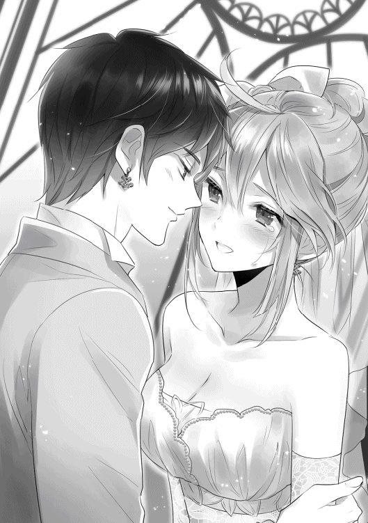
新年祭の最終日。日もすっかり落ちて。
だが、祭りも最終日とあり、街はまだまだ賑やかだ。
家々などでは近所の人々が集まって盛り上がっているし、酒場などは集まった客同士で酒を酌み交わしつつ騒いでいる。
辰巳とカルセドニアは、そんな浮かれた街の通りを自宅目指してゆっくりと歩いていた。
カルセドニアの左腕は、辰巳の右腕を抱き締めて放さない。その腕の薬指で、昼間辰巳から贈られた指輪が篝火の灯りにきらりと輝く。
もちろん、辰巳の左手にも同じ輝きがある。そして、二人の耳にはお揃いの耳飾りが、昨日までとは左右反対に装着されていた。
折角婚約した時に互いに身に着けたのだから、指輪だけでなくこちらも引き続き身に着けようと、二人で相談した結果だ。
二人は言葉を交わすこともなく──いや、交わす必要もなく、のんびりと歩いていく。
夜風に揺らめく灯り。その夜風に乗って流れてくるざわめき。
それよりも、辰巳とカルセドニアは互いの体温が心の大半を占めている。
晴れて夫婦となった辰巳とカルセドニア。
つい先程まで、〔エルフの憩い亭〕では二人の結婚を祝う宴が開かれていた。
そこに集っていたのは、辰巳とカルセドニアの親しい面々たち。
バース、ナナゥ、ジャドック、ミルイル、ラライナ、クーリといった顔ぶれの他には、エルを始めとした〔エルフの憩い亭〕の従業員に、そこに出入りする常連の魔獣狩りたち。
警備の仕事の都合で儀式には顔を出すことのできなかったニーズたち三兄弟も駆けつけ、宴は盛大に行われた。
どこで聞き込んだのかジョルトとガイルも参加していて、エルが腕によりをかけた料理をちゃっかりと堪能していたり。
もちろん、彼らは皆心から辰巳とカルセドニアの結婚を祝ってくれた。
余興として、ラライナが自身の名前と同じ楽器であるラライナの演奏を披露してくれたり、いつぞやのように辰巳の演奏でエルとカルセドニアが日本の歌を歌ったり。
ちなみに、ラライナの父親は楽師であり、彼女が生まれた時に迷うことなく商売道具の名前を自分の娘に与えたという。父親仕込みの彼女のラライナの演奏技術は、〔エルフの憩い亭〕に集まった者たちの心を魅了した。
顔馴染みの魔獣狩りたちからはやや手荒い祝福を受けたりもしたが、彼らも辰巳とカルセドニアの結婚を心から祝福してくれた。
「............夢じゃ......ありませんよね？」
まるで辰巳に縋り付くようにして歩くカルセドニア。
今彼の手を離したら、これまでの幸せな夢が醒めてしまうのではないか。そんな危機感が彼女の心の中にある。
しかし、そんな心の中の小さな棘は、愛しい男性の声であっさりと消え去った。
「夢じゃないさ。俺たちは......俺とチーコは、今日から夫婦だ」
辰巳がこちらの世界に召喚されてから約一年。それは二人が一緒に暮らし始めて一年が経ったということでもある。
一年以上一緒に暮らしていたのだから、結婚したからって何か真新しくなるようなことはない。
それでも、今日からの二人は昨日までとは確かに違うのだ。
「......まあ、ジュゼッペさんの陰謀に巻き込まれたと言えばそうだけど......」
「もしかして......後悔しています？」
「はははは、まさか。後悔なんて微塵もしていないよ」
互いに顔を見合わせ──カルセドニアは見上げ、辰巳は見下ろす形だが──て、二人はくすくすと笑う。
「でも、お祖父様にも困ったものです。いくらお祭りで派手なことがしたいからって、私やご主人様を巻き込まなくてもいいのに......」
結婚式の後の〔エルフの憩い亭〕での宴の場で、カルセドニアは辰巳から全て聞いていた。
今日の企みが全てジュゼッペのものであり、たくさんの人たちがそれに荷担したことを。彼女と一緒に歩く青年もその一人なのだが。
「いいじゃないか。これから毎年、俺とチーコみたいに新たな夫婦が生まれるかもしれないし」
今回のジュゼッペの企画は、来年も行う予定なのだそうだ。
公衆の面前で求婚するのは恥ずかしいかもしれないが、サヴァイヴ神の最高司祭が身分を問わず祝福してくれるとなれば、来年のこの企画に参加を希望する者も少なくはないだろう。
現代日本の感覚で言えば、最高級のホテルでの結婚式が無料で行えるようなもの、と言えば近いだろうか。
予め結婚が決まっていて参加する者、これを機会に想いを寄せる異性に告白する者、玉砕覚悟で参加する者、中には何かの宣伝などに利用する者もいるかもしれないので、参加希望者が皆無ということはないだろう。
果たしてどんな男女が自分たちに続くのか。ちょっと楽しみに思える辰巳であった。
「......いや、次はバースとナナゥさんか」
今日の〔エルフの憩い亭〕の宴の席で、「次はおまえたちだからな」と周囲から散々からかわれていたバースとナナゥ。
照れてはいたものの嬉しそうだった二人を思い出して、辰巳は笑みを零す。
それは、辰巳とカルセドニアの結婚式が無事に終わった時のこと。
礼拝堂から退場する新郎新婦。
集まっていた人々は、左右に別れて新郎新婦が退場する花道を形作る。
その花道を、腕を組んだ辰巳とカルセドニアがゆっくりと出口に向かって歩いていく。
人々は拍手や口笛で、幸せそうな新郎新婦を心から祝福する。
そんな人々の最前列には、新郎新婦の知人たちの姿があった。
その中で、バースの隣で瞳をきらきらと輝かせてカルセドニアに見入るゴブリンの女性を見た辰巳は、そっと隣のカルセドニアに耳打ちをする。
にっこりと微笑んだカルセドニアは、辰巳の元からそっと離れた。
そして、彼女が向かうのはもちろん。
「え......？ カルセドニア......様？」
突然辰巳から離れ、自分の前に立ったカルセドニアに、ナナゥの方が混乱して目をぱちぱちと何度も瞬たかせる。
そんなナナゥに、カルセドニアは笑顔と共に手の中のものを差し出した。
「これをどうぞ、ナナゥさん」
「え？ え？ これって......花束？」
「はい。これはご主人様の国では『ぶーけ』と呼ぶそうです。そして、ご主人様の国では花嫁の『ぶーけ』を受け取った者は、次に花嫁になると言われているとか。ですから......これはナナゥさんに」
本来ならば花嫁のブーケは背中越しに投げられるものだが、ブーケトスを誰も知らないこの国で、そこまでする必要もないだろう。
そう判断して、辰巳はブーケをナナゥに手渡すようにカルセドニアに伝えたのだ。
「あ、ありがとうございますっ!!」
ナナゥは嬉しそうにブーケを抱えると、隣にいたバースに微笑む。
バースもカルセドニアに礼を述べ、辰巳に向かって右手の親指を突き立てて見せる。
辰巳も同じ仕草で応えていると、小走りにカルセドニアが戻って来た。
再び辰巳の腕に自らの腕を絡ませるカルセドニア。
そして、新郎と新婦は拍手に包まれて礼拝堂を後にしたのだった。
礼拝堂を出た二人の目の前には、馬車が一台止まっていた。それも屋根のない、自動車で言えばオープンカーとでも言うべき馬車が。
そして、その馬車の御者席にはエルの姿があった。しかも、なぜか執事服を着た男装姿で。
「え、エルさん......？ それにこの馬車は......」
驚く辰巳。そんな辰巳にエルがしてやったりと笑いかける。
「この馬車は、クワロート公爵家の先代の奥様が今日のために特注で用意したそうです。さあ、どうぞ。これで〔エルフの憩い亭〕まで行きますよ」
「えっと......いろいろと聞きたいことはありますが......エルさん、御者の経験があるんですか？ それに何故に執事の格好を？」
「ふふふふ。こう見えても私は冒険者ですからね！ それに御者と言えば執事じゃないですか？」
と言いながら胸を張るエル。どうやら、元々エルのいた世界では、冒険者は御者ができるものらしい。それに、執事というものに彼女なりの変な拘りがあるようだ。
そのエルが御者席から飛び降りて馬車の扉を開け、本物の執事のように畏まって二人を招き入れる。
「さあ、どうぞ。今日の主役はお二人ですよ！」
互いに顔を見合わせる辰巳とカルセドニア。どちらからともなくくすりと笑うと、ここはエルとエリーシアの厚意に甘えることにした。
辰巳が先に馬車に乗り、腕を伸ばしてカルセドニアを引き上げる。
現代日本、いや地球ならば先に女性を乗せるべきシーンかもしれないが、この世界の馬車は座席が高所にあるため、このような場合は男性が先に乗り降りして、女性の乗車や降車に手を貸すのがマナーらしい。
辰巳に手を引かれたカルセドニアは、ウエディングドレスの裾を気にしながらも何とか馬車に乗り込んだ。
その際、彼女がとても嬉しそうにしていたのは言うまでもない。
二人が馬車に乗ったのを確認したエルが、手綱を一当てして馬車を発車させる。
がたごとと揺れながら、馬車は祭りで賑わうレバンティスの街をゆっくりと走って行く。
公爵家の紋章の入った馬車と、それを御するのが男装の麗人──しかもエルフ──となれば、注目を集めないはずがない。更には屋根のない馬車なので、そこに乗っている人物も丸見えだ。
タキシードとウエディングドレスという、見慣れない衣装を着た二人の若い男女。しかも、よく見ればその女性がサヴァイヴ神殿の《聖女》であることは、すぐに民衆に知れるところとなる。
もう一人の男性の方もその特長的な黒い髪と目から、彼が最近噂となっている《聖女》のお相手であることは容易に判断できるだろう。
ゆっくりと街中を進む馬車を見た人々は、何事かと周りの者たちと囁き合う。
そのうち誰が言い出したのか、馬車に乗っている二人が、先程サヴァイヴ神殿で婚姻の儀を挙げたのだと話し始めた。
（これって......絶対エリーシアさんかジュゼッペさんが情報操作しているんだろうなぁ......）
人々の会話を耳にした辰巳は、思わずそんなことを考える。あの二人なら絶対にやりそうなことだし。
おそらくは、ジュゼッペかエリーシアの息のかかった者が、民衆の中に紛れ込んで二人が結婚したことを告げて回っているのだろう。
「ほらほら、タツミさんもカルセさんも、皆さんに手でも振ったらどうですか？」
御者席のエルが、振り返って二人にそう告げた時。辰巳は唐突にあることに思い当たった。
「エルさん......もしかして、ジュゼッペさんに何か入れ知恵しました？」
「えへへ。バレちゃいました？」
結婚式の後の街頭パレードは、地球では国を問わずによく見かける風景だ。エルからそのことを聞いたジュゼッペが、興味を示したとしても不思議ではない。
「俺は芸能人でもなければ、どこかの国のロイヤルファミリーでもないんだけど..................そうか、俺もジュゼッペさんに嵌められた一人ってことか」
どうやらジュゼッペの悪巧みには、辰巳の知らない部分もあったようだ。
辰巳はやれやれと肩を竦めつつ、苦笑を浮かべる。
そして大きな溜め息を吐きながら、カルセドニアへと振り向いた。
「もう、こうなったら自棄だ！ ほらチーコ、手を振ってあげて」
「は、はぁ......こう......ですか？」
辰巳に言われて、カルセドニアが街の人たちに向けて手を振る。それでいて辰巳自身は手を振ろうとはしないのだから、ちょっと狡いと言えるかもしれない。
まあ、辰巳が手を振るよりも、カルセドニアが振った方が絵になるのは確かだ。
ゆっくりと走る馬車を、街の人々は興味深そうに見つめる。
その馬車の上には、見たこともない意匠の綺麗な純白のドレスを着た《聖女》。その《聖女》が微笑みと共に手を振るのを見た人々は、その美しさと艶やかさに目を奪われ、そして、彼女が傍らの黒髪黒目の男性と結婚したと聞いて大歓声を上げ、口々に祝福の言葉を投げかける。
こうして街の人々からも祝福を受けながら、エルの操る馬車はゆっくりと〔エルフの憩い亭〕へと向かったのだった。
今頃、〔エルフの憩い亭〕ではまだ騒ぎが続いているだろうか。
カルセドニアと二人、ゆっくりと自宅を目指して歩く辰巳はそんなことを考える。
今日の宴の主役である二人だが、ある程度のところで帰宅するように皆に促された。
おそらくは、誰かが気を回したのだろう。中には露骨に「今夜、がんばれよ！」と辰巳に声をかけてきた魔獣狩りもいたぐらいだ。
さすがにタキシードとウエディングドレス姿で歩くわけにもいかず、二人は〔エルフの憩い亭〕で着替えている。衣装やギターはそのままエルの店で預かっておいてくれるらしい。
二人でいる時間を楽しみながらゆっくりと歩いていたが、それでもおのずとゴールはやって来る。
辰巳とカルセドニアの二人の目に、彼らの家が見えてきた。
「............着いちゃった......」
カルセドニアが小さく呟いた。どうやら、二人きりのゆったりとした時間が終わってしまうのが惜しいようだ。
ちょっぴりしんみりとした空気が二人の間に流れる。
辰巳はカルセドニアが絡めていた腕をそっと抜き去ると、その腕を彼女の肩へと回して自分へと抱き寄せた。
「......ご主人様？」
きょとんとした顔のカルセドニア。そんな彼女を見下ろしながら、辰巳はふわりと柔らかく微笑む。
「着いたんじゃない。これから始まるんだよ。今日から......俺とチーコの新しい関係は」
「ご主人様......」
「改めて......よろしくな、俺の奥さん」
「は、はいっ!! こちらこそ、よろしくお願いしますっ!!」
辰巳に「奥さん」と呼ばれたカルセドニアは、嬉しさで顔を輝かせる。
そしてどちらからともなく、そっと唇を触れ合わせた──丁度、その時。
「あ、ようやく帰って来たね？ ほらほら、タツミちゃんとカルセちゃんが帰って来たよ！」
そんな声と共に周囲の家から、わらわらと近所の住人たちが姿を現した。
もちろん、弾かれたように二人が離れたのは言うまでもない。
近所の住人たちは、皆笑顔を浮かべながら辰巳とカルセドニアを取り囲む。
「聞いたよ！ あんたら、ようやく本当の夫婦になったんだって？」
「どうして今日の儀式のことを教えてくれなかったんだい？ 教えてくれれば、もっと上等なお祝いを用意できたって言うのにさ」
「まあまあ、タツミくんたちにもいろいろとあるんだよ、きっと」
どうやら、ご近所さんたちも辰巳たちの結婚を聞きつけ、そのお祝いをするために準備していたらしい。
「急だったから大したものは用意できなかったけど、私たちの心ばかりのお祝いだよ。さあ、こっちにおいで」
辰巳もよく知る近所の奥さんは、そう言いながら二人の手を引いて彼女の家へと招き入れる。おそらく、ここが次の宴の会場なのだろう。
奥さんに手を引かれるまま、辰巳とカルセドニアは顔を見合わせた。
今日、何回こうして顔を見合わせただろう。いや、これから先、何回こうして顔を見合わせるだろう。
そのことを楽しみやら心配やらと悩みつつも、辰巳とカルセドニアは新たな宴の会場へと足を踏み入れたのだった。
どうやら、辰巳とカルセドニアが二人っきりでゆっくりできるのは、もう少し先のようだ。
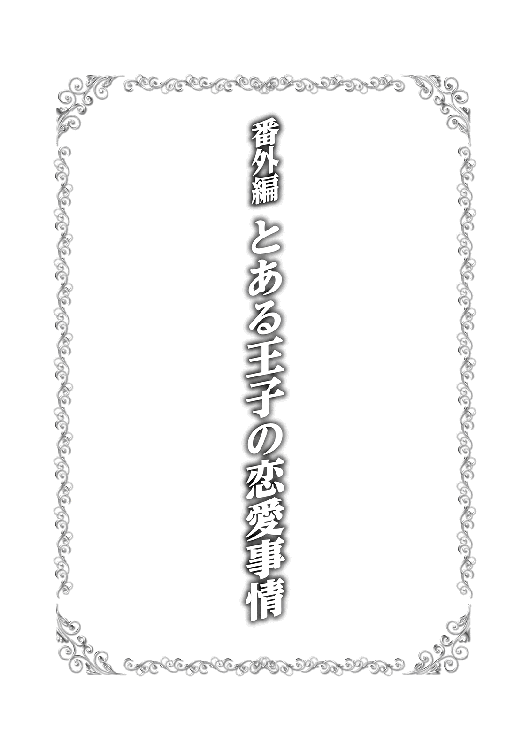
彼が初めて彼女と出会ったのは、まだ三歳の時だった。
祖父の友人に連れられて、彼女は彼の前に現れた。その時、彼女は確か七歳であった。
きらきらと輝く白金の髪と、紅玉のような真紅の瞳が印象的だったのを、彼は今でも覚えている。
「こやつの名前はカルセドニアと言うてな。ちと訳があって儂の養女となったんじゃ。仲良くしてやってくれよ、ジョルト坊主」
少女の頭を優しく撫でながら、祖父の友人は彼に告げた。
「ほら、カルセよ。挨拶せんか」
祖父の友人に背中を押され、白金色の髪の少女はゆっくりと彼の前に進み出る。
そして、その小さな唇から可憐な声がそっと零れ出る。
「え、えっと......か、カルセドニア・クリソプレーズです......ジョルトくん......って、呼んでもいい？」
彼女がちょっと首を傾げると、頭頂部の特徴的な癖毛もひょこりと揺れる。その様子がなんだかおかしくて、彼はくすりと笑みを漏らした。
「うん、いいよ。その代わり、僕もカルセって呼んでもいい？」
彼がそう尋ねれば、彼女はにっこりと笑った。
その笑顔がなんだかとっても眩しくて、彼は思わず目を細めた。
この時、彼は彼女のその笑顔に魅了されたと言っていいだろう。
彼の名前はジョルトリオン・レゾ・ラルゴフィーリ。それはラルゴフィーリ王国の国王を祖父に持つ少年の、少し早めの初恋であった。
「......とまあ、実は俺の初恋って、カルセだったんだよねー」
ジョルトは目の前に腰を下ろしている友人に向かって、実にあっけらからんと告げた。
「それでどう？ 友人の初恋の相手が自分の新妻だと分かって、夫としてはどんな気分？」
にまにまとした笑みを浮かべて、ジョルトは辰巳に問う。
「どうって言われても......年齢一桁の時の話だろ？ 微笑ましいとしか思わないけど？」
「うわ、これが結婚した余裕ってやつ？ その落ち着き方がちょっと腹立つなー」
口では腹立つと言いつつも、ジョルトは笑顔のまま。辰巳もジョルトが自分をからかっているだけだと分かっているので、あえて平然として見せている。
「ちぇー、カルセが俺の初恋の相手だと分かれば、タツミはもっと焦ると思っていたのになー。つまんないや」
「そりゃあ、ご期待に添えなくて悪かったな」
肩を竦める辰巳と、唇を尖らせるジョルト。その後、二人は顔を見合わせるとどちらからともなく笑い出した。
そんな二人を、この場にいる三人目の人物が呆れた表情を浮かべて眺めていた。
「殿下。少々悪ふざけが過ぎますぞ？」
「そうは言うけどさ、ガイル。友人が結婚したんだよ？ それをからかわないで、何をからかうのさ？」
「別に無理してからかう必要はないでしょう？」
至極もっともなガイルの言葉に、辰巳は思わず苦笑してしまった。
今、辰巳たちがいるのは、レバンティスの街にある彼の家である。
新年を祝う新年祭が終わったのが三日前。祭の興奮もすっかり消え去り、街は日常を取り戻している。
「本当なら、今日はチーコも神殿での勤めはなかったんだけど......何か急に呼び出されちゃって」
客人であるジョルトと、その護衛として同行したガイルにお茶を出しながら、辰巳はちょっと困ったような表情を浮かべた。
本日、ジョルトが辰巳の家に遊びに来ることは、前もって知らされていた。そのため、今日は辰巳もカルセドニアも神殿での勤めがないように調整しておいたのだ。
しかし、今朝になって突然神殿からの使者が来て、カルセドニアは呼び出されてしまったのだ。あまりに急なこと過ぎて、辰巳もどうしてカルセドニアが呼び出されたのかは知らない。
「そっか。どうせなら可愛い新妻が淹れたお茶が飲みたかったのになー」
「そりゃあ、重ね重ね期待に添えなくて悪かったなー」
図々しいとも言えるジョルトの言葉に、辰巳は笑顔で応える。こんなに平然と対応できるのも、ジョルトの言うようにカルセドニアと結婚したという余裕かもしれない。
「ふむ、殿下ではないが、私も少々残念だな。《聖女》殿の淹れたお茶を飲んだとあれば、同僚たちに自慢できたのだが」
辰巳が淹れたお茶を喉の奥へと流し込みながら、ガイルが残念そうに言う。
最近、こうして出歩くジョルトの護衛をする機会が多い彼は、ジョルトの直属という形で近衛へと昇進を果たした。近衛としては新参者ではあるが、ジョルト自身が指名して直属となったため、彼の立場は近衛の中でも決して低くはない。
ガイルがジョルトの直属となったのは、もちろん辰巳絡みである。
「君、確かタツミと顔なじみなんだろ？ だったら、これからタツミの所に行くから、護衛として一緒について来てよ。え？ 君を選んだ理由？ タツミの所に行くんだから、彼の顔なじみが一緒の方がいいじゃない？ それに、君の実力の方もタウロードから聞いているしね」
と、そんな理由で選ばれたガイルは、当初かなり複雑そうだった。
しかし、理由はともあれ王族の側近はやはり名誉なことだし、騎士としての実力も認められているのだ。
最近では、ガイルも胸を張ってジョルトの直属として仕事に励んでいる。
そんなガイルが、少し不思議そうに主である少年に尋ねる。
「ところで、ジョルト殿下。カルセドニア殿が殿下の初恋の相手というのは、本当なのですか？」
「うん、それは本当。でも、すぐに脈なしって悟ったけどね」
ひらひらと手を振りながら、ジョルトはちらりと辰巳を見る。
「爺ちゃんの友達であるジュゼッペの爺ちゃんが連れて来たってことは、俺とカルセは将来結婚するじゃないなって幼心にも思ったんだ」
当時、ジュゼッペはまだサヴァイヴ神殿の最高司祭ではなかったが、ジョルトの祖父でありラルゴフィーリ王国の国王、バーライド・レゾ・ラルゴフィーリとは旧友という縁もあって、ジュゼッペは幼いジョルトの家庭教師をしていた。
もちろん、ジュゼッペにはカルセドニアをジョルトの婚約者にするつもりはなく、ただ単に歳が近いこともあって二人が友人になれるのでは、と考えていただけである。
実際、最初のうちはぎこちなかったカルセドニアとジョルトだが、何度も顔を合わせる内に徐々に打ち解け、まるで姉弟のように仲良くなっていく。
「だって、あの頃からカルセはとある少年のことばかり考えていたんだよ？ 口を開けばその少年のことばかり。いくら俺が幼かったとはいえ、カルセの気持ちが自分に向いていないことぐらい理解できたね」
ちらりとジョルトが辰巳を見る。当時のカルセドニアが言っていたという「ある少年」が誰のことなのか、今更言うまでもないよねとその視線が語っていた。
ガイルも目ざとくそれを察し、にやりと笑いながら辰巳を見た。
「なるほど。当時からカルセドニア殿は一途にタツミを想っていたというわけか。これは殿下でなくともからかいたくなるというものだな」
「や、止めてくださいよ、ガイルさんまで」
「あはははは、それそれ。その反応が見たかったんだよ」
ガイルにまでからかわれて顔を赤らめる辰巳を見て、ジョルトはけたけたと大笑いをした。
辰巳やジョルト、ガイルたちが辰巳の家でわいわいと楽しい一時を過ごしている時、サヴァイヴ神殿に急に呼び出されたカルセドニアはと言えば。
「え？ 私に会いたいという方......ですか？」
「左様。先方からの名差しでな。『ヤマガタという名前の女性神官』にどうしても会いたいそうじゃ」
自分を突然呼び出した祖父に対して、カルセドニアは不思議そうに首を傾げていた。
「それで、私に会いたいというのは、どなたなのですか？」
当然と言えば当然なカルセドニアのその質問に、ジュゼッペはいつものように髭を扱きながら答える。
「お主に会いたいと言っておるのは、隣国リヴァル王国の王族でな」
ジュゼッペの言うリヴァル王国とは、ラルゴフィーリ王国の南に位置する国家である。
国の規模としては、ラルゴフィーリ王国にはやや劣る。
主産業は林業と農業。リヴァル王国産の材木や木製製品、そして農作物は、ラルゴフィーリにもかなりの量が輸入されている。
ラルゴフィーリとは古くより友好的な関係を続けている国家で、両王家間では過去に何度も婚姻を結んでいる。
数日前の新年祭には、リヴァル王国を始めとした周辺の友好国から、数多くの使節団がラルゴフィーリ王国を訪れていた。
カルセドニアに会いたいというリヴァル王国の王族も、新年祭に来ていた使節の一人なのだろう。
友好国であるリヴァル王国の王族の依頼ともなると、ジュゼッペといえども簡単には拒否できない。
「それで、リヴァル王国の王族の方が、どうして私に？」
「うむ......それがじゃなぁ......」
相変わらず自分の髭を扱き続けているジュゼッペは、きゅっと眉を寄せながら言葉を続けた。
「それが、詳しいことは儂にも分からんのじゃよ。とにかく、向こうはお主に会わせろとしか言わんのじゃ。手間をかけて済まんが、ここは相手に会うだけ会ってやってくれんか？ もちろん、儂も同席するつもりじゃ」
見知らぬ相手から一方的に面会を求められて、カルセドニアの中で警戒心がむくりと頭をもたげる。
過去に彼女を見初めた貴族などが、そうやって一方的に面会を求めてジュゼッペに話を持ってくる者が何人もいたからだ。
しかし、そんなことも辰巳という存在が現れてからはめっきりと減った。今でも全くなくなったわけではないのは、まだ完全にカルセドニアを諦めきれない者がいるからだろう。
しかし、カルセドニアも数日前に正式に辰巳と結婚した。結婚の守護神であるサヴァイヴ神の神官は、神の前で結婚を誓った相手と離婚することは許されない。
そのため、今後はそのような者も完全にいなくなるだろう、とカルセドニアは考えていたのだ。
だが、相手は隣国の王族であり、もしかするとカルセドニアと辰巳が結婚したことを知らないのかもしれない。
新年祭の最終日、あれだけ派手な結婚式を挙げた辰巳とカルセドニアだが、それを見物していたのは主に市井の者たちであり、王城に滞在していた隣国の使節団にまでその話が届いていないという可能性はある。
そう思ったカルセドニアが思わず警戒したとしても、それは仕方がないというものだろう。
とはいえ、ジュゼッペが面会することを認めていて、その場にはジュゼッペも同席するとなれば、カルセドニアにそれを断ることはできなかった。
一方、こちらは辰巳たち。
男ばかりというむさ苦しさはあるものの、逆に気兼ねする必要もないということで、三人は楽しい一時を過ごしていた。
「へえ、それじゃあ、ガイルさんにも結婚の話が？」
「ああ、殿下の直属として近衛に配属された直後辺りから急にな」
苦笑を浮かべるガイル。彼はとある貴族の家の四男であり、家を継ぐことはまずない。そのために騎士となったわけだが、当然そんな立場の者に縁談などなかなかない。
しかし、ジョルトに名指しで指名され、近衛に抜擢されたという話が広まった途端、実家から縁談が舞い込んだのだ。
「それまで実家からそのような話などまるでなかったというのに、現金な限りだ」
次々代の国王の最有力候補であるジョルト。そのジョルトの直属ということは、将来は国王の側近ということを意味する、たとえガイル自身に継ぐ家がなくとも、十分な出世と言える。
そのため、将来は国王の側近となるであろうガイルとの縁談を求めてきた家が相次いだらしい。
「じゃあ、ガイルは結婚相手を選べる立場なんだ。いやー、羨ましいねぇ」
「ちゃ、茶化さないでください、殿下。た、タツミも黙っていないで殿下に何か言ってくれ！」
「いいじゃないですか。結婚相手がいるのはめでたいことですよ。サヴァイヴ神の神官として、我が神にガイルさんの幸せな結婚を祈っておきます」
「タツミまでそんなことを言わないでくれ！」
真っ赤になって狼狽えるガイル。辰巳とジョルトは、そんな彼を見て顔を見合わせて笑い合う。
最初こそ衝突した辰巳とガイルだが、今ではジョルト同様にこうして軽口を言い合える良き友人となっている。
友人として、そしてサヴァイヴ神の神官として、心の中でガイルの結婚を祝っていた辰巳だが、ふと疑問を感じてもう一人の友人へと視線を向けた。
「そう言えば、ジョルトはどうなんだ？ やっぱり、婚約者とかいるのか？」
「俺？ 俺はほら、立場が立場だし。当然、婚約者はいるよ」
「へえ、やっぱり婚約者がいたのか。で、どんな人なんだ？」
友人に婚約者がいると聞かされて、辰巳も興味を引かれた。
将来の国王ともなると、やはり幼い頃から婚約者がいたらしい。
「俺の婚約者は、隣国であるリヴァル王国の第一王女だよ」
「へえ、隣国の王女様か。どんな女性なんだ？ 会ったことぐらいあるんだろ？」
「うん、毎年新年祭には、彼女はラルゴフィーリに来るからさ。まあ、隣同士の国とは言っても、そんな時ぐらいしか会えないんだけどね」
そう言うジョルトの表情はとても優しい。間違いなく政略結婚であろう彼の婚約者だが、ジョルトはその婚約者を決して嫌っているわけではないようだ。
「新年祭？ ってことは、今も王城に滞在しているのか？」
「うん、そうだよ。でも、確か明日辺りには国元に帰る予定だったはずだよ」
そう答えるジョルトに、辰巳はちょっと呆れた表情を浮かべる。
「だったら俺の所にいていいのか？ 俺よりも婚約者の相手をしなくちゃいけないんじゃないか？」
「ああ、そのことなんだけど......何か、今日は用事があるとかでさ。彼女、王城にいないんだよ」
「へえ、そうなのか」
他国の王族が、王城以外にどんな用事があるというのだろうか。そう思う辰巳だが、そこまで尋ねるのは憚られて曖昧な言葉で誤魔化すしかない。
「大丈夫さ。新年祭の間、ずっと俺と彼女は一緒だったし。さすがにタツミとカルセには負けるだろうけど、俺たちだって結構仲いいんだぜ？」
右手の親指で自らを指し示しながら、ジョルトは自信満々にそう断言した。
「あなたがヤマガタとか言う神官ねっ!?」
「はい！ 私がヤマガタ司祭ですっ!!」
びしっとカルセドニアを指差す少女。その少女に向けて、カルセドニアはとても嬉しそうに返事をする。
辰巳と結婚したことで、彼女の名前は正式に「カルセドニア・ヤマガタ」となった。そのヤマガタの名前で呼ばれることは、カルセドニアにとっては至福なのだ。
見ず知らずの相手とはいえ、「ヤマガタ」と呼ばれたことでカルセドニアはとてもいい笑みを浮かべた。
そして、カルセドニアを指差した少女はと言えば。
「あ、あ......そ、そう......？」
彼女が浮かべた笑みに呆気に取られたような、指差した勢いを失って困ったような表情を浮かべた。
リヴァル王国の王族との会談の場として選ばれた、サヴァイヴ神殿内の応接室の一つ。
ジュゼッペと共にその部屋で相手を待っていたカルセドニアの前に現れたのは、数多くの侍女を引き連れた十五歳前後と思われる少女だった。
面会を求めてきた隣国の王族と聞いて、これまでの経験から相手はてっきり男性だとばかり思っていたカルセドニアは、今回の相手が女性だと分かって少し安心していた。
改めて相手を見てみれば、王族に相応しい上等な真紅のドレス。そのドレスに金色の長い金色の髪が実によく映えている。
目の色は緑柱石の如き美しい碧。その緑の瞳には強気そうな光が宿っていた。
まるで人形のように整った容貌の、美しくも愛らしい少女。しかし、その少女は今、助けを求めるように応接室の中を泳ぎまくっていた。
「え、えっと......あなたがヤマガタとかいう神官で間違いないのね......？」
「そうですけど......」
再び問われた質問に、カルセドニアはこくんと首を傾げながら答える。
何やら初っ端から毒気を抜かれたような少女は、こほんと咳ばらいを一つすると再びびしっとカルセドニアにその白くて細い指を突きつけた。
「よ、よくもジョルトリオン様を誘惑してくれたわねっ!? ジョルトリオン様は私の婚約者なのよっ!! あなたのような神官風情が、私とジョルトリオン様の間に割り込もうなんて身の程知らずとしか言いようがないわっ!!」
「私がジョルトくん......いえ、ジョルトリオン殿下を誘惑......ですか......？」
思わず、隣に座っているジュゼッペと顔を見合わせるカルセドニア。当然ながら、彼女がジョルトを誘惑したという事実はなく、それはジュゼッペも承知している。
「申し訳ないが、ララリーナ殿下。我が養女であるカルセドニアは、既に別の者と結婚しておってな。決して、ジョルト殿下を誘惑するようなことはしておらんぞ。殿下もご存知の通り、サヴァイヴ神の神官にとって、浮気は大罪じゃからの」
目の前の少女──リヴァル王国第一王女、ララリーナ・リヴァルに対して、ジュゼッペは優しく諭すように告げた。
「お言葉ですが、ジュゼッペ様。私はこの耳で聞いたのです！ ジョルトリオン殿下が、この女のことばかり口にするのを！」
怒りの炎を宿した目で、ララリーナはカルセドニアを睨み付ける。
「ほう、ジョルト殿下がカルセのことを、のぉ。できれば、その辺りのことを詳しくお聞かせ願えませんかな？」
「ええ、いいでしょう。先の新年祭の期間中、私がこの国の王城に滞在していた間のことよ──」
「じゃあ、ジョルトとそのララリーナさんって王女様は、結構古い付き合いってわけか」
「さすがにカルセほど古くはないけど、彼女は俺が十歳を過ぎた頃に正式に婚約者になったからね。それからは毎年新年祭にはこの国に来るようになったんだ」
「十歳で婚約者か......俺の感覚からすると考えられないなぁ......」
現代の日本人である辰巳にしてみれば、十歳で結婚相手が決まるなど信じられない話である。だが、今辰巳がいる世界は異世界であり、しかもジョルトは王族でもある。この国の常識からすれば、決して珍しい話ではないのだろう。
よくよく考えてみれば、地球世界でも洋の東西を問わずに幼い頃から結婚相手が決まっているという時代はあったのだ。それに現代の地球でも、そのような話も全くないというわけではないはずである。
「確かに政略結婚には違いないけど、だからと言って望まぬ結婚ってわけじゃないよ。俺なりにララのことは気に入っているし、彼女なら将来の王妃としても十分やっていける力を持っているしね」
「へえ......機会があれば、是非俺にもララリーナさんを紹介してくれよ」
「もちろん。今年はちょっと日程的に無理っぽいけど、来年は絶対にタツミにララを紹介するよ」
ジョルトがここまで気に入っている相手なら、きっと自分やカルセドニアとも親しくなれるだろう。そう思った辰巳とジョルトが約束を交わした時。
突然、この家の玄関の扉を叩く音が聞こえてきた。
「どうしてララがサヴァイヴ神殿にいるわけ？」
突然辰巳の家を訪れた、サヴァイヴ神殿からの使い。聞けば、辰巳とジョルトをジュゼッペが呼んでいるという。
カルセドニアだけではなく辰巳とジョルトまで呼び出すとあって、辰巳はジョルトを連れて転移でサヴァイヴ神殿まで大急ぎでやって来たのだ。
ちなみに、ガイルはサヴァイヴ神殿からの使いと共に、後からここに来る手筈である。
「一体どういうことなんですか、ジュゼッペさん？」
「うむ、それがのぉ......」
髭を扱きながら苦笑を浮かべているジュゼッペに、辰巳は事情を尋ねた。
「どうやら、ララリーナ殿下はお主とカルセを間違えたようじゃな」
「は？ 俺とチーコを......ですか？」
事情が理解できなくて、辰巳はカルセドニアへと視線を移す。見れば、カルセドニアも困った顔をしていた。
ジュゼッペの説明によると、今年の新年祭にこの国を訪れたララリーナは、例年通りジョルトと顔を合わせた。
毎年この時期にジョルトと会えることを楽しみにしていたララリーナは、新年祭の間は可能な限りジョルトと一緒に過ごし、一年振りに会えたことを楽しんでいたらしい。
しかし。
「今年のジョルトリオン殿下は、ことあるごとにサヴァイヴ神殿のヤマガタという神官の話ばかり。それが気になって侍女にそのヤマガタという神官を調べさせたところ、とても美しい女性の神官だという情報を得ました。ですから私はてっきり、ジョルトリオン殿下がそのヤマガタという女性神官に心を奪われたとばかり......」
ララリーナの話を聞き、思わずジョルトへと目を向ける辰巳。そのジョルトと言えば、呆れ顔でララリーナのことを見ていた。
「あのね、ララ。確かに俺は今年はララにヤマガタという神官の話ばかりしたかもしれないけど......ヤマガタはヤマガタでもタツミ・ヤマガタ......つまり、こいつのことを話していたんだよ」
そう言いつつ、ジョルトは辰巳を指差す。
「どうじゃな、ララリーナ殿下。儂が言った通り、ジョルト坊主が言うヤマガタという神官は男じゃったろう」
「ま、真に申し訳ありません......ま、まさかヤマガタなんて聞いたこともない名前の人物が、二人もいるとは思わず......」
確かに、こちらの世界に「ヤマガタ」という名前を持つ人間が、辰巳以外にいるとは思えない。その点に限れば、ララリーナが誤解しても仕方がないと言える。
だがつい最近になって、サヴァイヴ神殿にはもう一人「ヤマガタ」という名前の神官が誕生した。ジョルトの話す「ヤマガタ」という神官が女性だという先入観のあったララリーナは、侍女に「ヤマガタという名前の女性神官」について調べさせたのだ。
その結果、侍女が集めたのは「カルセドニア・ヤマガタ」に関する情報であり、ララリーナはすっかり誤解してしまったというわけだった。
ちなみに、ジョルトはララリーナに「タツミ」という名前もはっきりと告げていたのだが、ララリーナの感覚では「タツミ」という名前が男の名前なのか女の名前なのかは判断できなかったのだ。
「まあ、なんじゃな。ちと間が悪かったようじゃなぁ」
「確かにジュゼッペの爺ちゃんの言う通り、新年祭でタツミとカルセが結婚しなければ、こんな誤解はしなかっただろうし」
「何を他人事みたいに言うておるか。ジョルト坊主がもう少しはっきりと婿殿のことを説明しておけば、ララリーナ殿下もこんな誤解はしなかったのじゃぞ？」
ジュゼッペの言葉通り、ジョルトの説明が足りなかった故のララリーナの誤解である。その責任の一端は、ジョルトにあると言えるのは間違いない。
「それに、ジョルト様を想うが故のララリーナ様の誤解です。ジョルト様はもう少しその辺りに気をつけるべきだったのでは？」
「そうだね、爺ちゃんやカルセの言う通りだ。ごめんな、ララ。俺がもう少し気をつければよかったよ」
「い、いえ......私もとんだ早とちりをしてしまい、本当に恥ずかしい限りです......」
顔を真っ赤に染め、俯いて言葉を紡ぐララリーナの肩を、ジョルトは優しく抱き寄せる。
「じゃあ、改めて紹介するよ。こちらが俺の新しい友人のタツミ・ヤマガタ。そして、最近彼と結婚したばかりのカルセドニア・ヤマガタだ。そして、彼女が俺の婚約者のララリーナ・リヴァル。タツミもカルセもよろしくな」
「ご、ご紹介に預かりましたララリーナ・リヴァルでございます。タツミ様、そしてその奥方のカルセドニア様。特にカルセドニア様にはとても失礼な誤解をしてしまい、心よりお詫び申し上げます。今後はジョルトリオン殿下の婚約者として、お見知りおき願いますわ」
ドレスの裾をちょいと持ち上げ、見事なカーテシーを披露するララリーナ。その仕草はとても洗練されており、さすがは一国の第一王女であることを思わせる。
「タツミ・ヤマガタ上級神官です。こちらこそよろしくお願いします、ララリーナ殿下」
「妻のカルセドニア・ヤマガタです。改めてよろしくお願いしますね、ララリーナ様」
辰巳とカルセドニアが揃って自己紹介をすれば、ララリーナもほっとした表情を浮かべる。
「タツミ様はジョルトリオン殿下のことを『ジョルト』とお呼びなのでしょう？ でしたら、私のこともどうぞ『ララ』とお呼びください」
「分かりました、ララさん。でしたら、俺のことも『タツミ』でいいですよ」
「もちろん、私のことは『カルセ』とお呼びくださいね」
「はい、タツミさんとカルセさん。ジョルトリオン殿下の婚約者として、そして良き友人として今後はよろしくお願いします」
にっこりと笑顔を浮かべるララリーナ。それを見てジュゼッペはとても満足そうに微笑む。
「どうやら、ジョルト坊主とララリーナ殿下も、婿殿とカルセ同様いい夫婦になりそうじゃな。サヴァイヴ様に仕える者として嬉しい限りじゃわい」
結婚の守護神たるサヴァイヴ神の神官として、夫婦仲がいいことは歓迎すべである。ジュゼッペは胸元に輝く聖印を握りしめ、夫婦となったばかりの若者と、近く夫婦になるであろう若者の幸福を、彼の神に心から願うのだった。
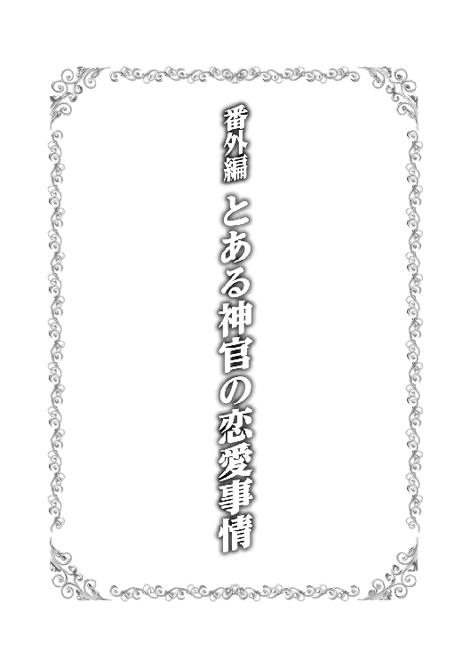
神殿とその信者を守るべく、日々鍛錬に励む神官戦士たち。
その神官戦士たちが集い、精進し合うのは、神殿の裏手にある鍛錬場である。
今日もまた、鍛錬場では神官戦士たちの気合の篭った声が響き合い、武器と武器がぶつかり合う音が木霊する。
その鍛錬場から少し離れた木陰に、一人の少女の姿があった。
下級神官の位を示す神官服と聖印を身に着けた、十五歳ほどの大人しそうな印象の少女である。
彼女は木陰に身を隠し、頭だけをそっと覗かせて鍛錬場の様子を窺っていた。
その少女がじっと見つめる先には、鍛錬に汗を流す一人の神官戦士の姿があった。
「いっくよー、タツミ！ 今日も思いっきりぶつかり合おうね！」
いつものように元気一杯な様子で手合わせの準備をするのは、ニーズら三兄弟の末弟であるシーロ。そのシーロを前にして辰巳は、露骨に眉を寄せて嫌そうな表情を浮かべていた。
バースら同期たちが見守る中、準備を終えた辰巳とシーロは鍛錬用の得物を構えて対峙する。
辰巳はいつものように片手剣と盾。対するシーロは長い柄の先に大きな鎚のついた巨大な武器。いわば、ポールハンマーとでも言うべき竿状武器である。
威力こそ絶大であるものの、非常に重量があり極めてバランスも悪いため、取り回しはお世辞にもいいとは言えないポールハンマー。そのため、この武器を得物に選ぶ者はほとんどいない。
そのポールハンマーを、シーロは好んで使っていた。
二人の準備が整ったことを確認し、バースは「始め」の合図と共に片腕を振り上げる。
その合図と同時に動いたのは、シーロだった。巨大な竿状武器を手にしているとは思えない速度で、シーロは辰巳に肉薄する。
両手で構えたポールハンマーを、シーロは全力で辰巳の頭上へと振り下ろす。
「どっかーんっ!!」
どこか気の抜ける掛け声と共に、ポールハンマーが振り下ろされた。しかし、ポールハンマーは辰巳ではなく鍛錬場の床に激突し、衝撃が周囲に砂埃を巻き上げる。
シーロが振るポールハンマーは、速く鋭い。とても取り回しの悪い重量武器とは思えないような速度と鋭さで、シーロはポールハンマーを扱う。
この一撃は、盾の扱いに優れた辰巳といえども防御しきれない。下手に盾で受け止めようものなら、受け止めた盾ごと押し潰されるだろう。それほどまでに、シーロの一撃は強力だった。
素早く後ろへと下がり、辰巳はポールハンマーの間合いから逃れた。そして、シーロが空振りした瞬間、再び間合いを詰めてシーロの懐に飛び込む。
懐に飛び込むと同時に、剣を横に振るってシーロの胴を薙ぐ。
訓練用の刃引きされた剣とはいえ、人間の身体にそれなりの力ででぶつければ、無視できないダメージを与える。今も辰巳の剣は、鈍い音と共にシーロの身体に打撃を与えた。
胴を突き抜ける大きな衝撃に、シーロが顔を顰める。
「く、くぅ......」
苦悶の声を零すシーロ。だが、彼の表情はすぐに変化する。
苦しみを耐えるような表情から、うっとりとした恍惚へと。
「あ、あはははは......き、気持ち......いい......」
頬を紅潮させ、とろんとした表情を浮かべつつ、シーロの目が辰巳へと向けられる。
「さあ、タツミ！ どんどんボクに打ち込んで！ もっと気持ちよくして！」
シーロが口走るアツくてイタい言葉を聞き、対峙していた辰巳はもちろん、バースやニーズとサーゴ、そして周囲にいた他の神官戦士たちまでもが、盛大に嫌そうな表情を浮かべた。
いわゆる、「ドン引き」という奴である。
「なあ、ニーズにサーゴ......アレ、どうにかならないのか？」
辰巳とシーロの模擬戦を見ていたバースが、げっそりとした表情で隣に立つ兄弟に問う。
「......無理だ。アレばっかりは、俺たちでもどうにもならん」
「兄貴の言う通りだ。アレばっかりは諦めてくれ......子供の頃、親父に殴られるためにわざと悪戯するような奴だったし......」
「......聞いた俺が悪かったよ......」
げっそりとした表情を更に酷くして、バースはがっくりと肩を落とした。
打ち込めば打ち込むほど、恍惚とした表情を強めるシーロを前に、辰巳は思わず救いを求めるようにバースたちへと振り向く。しかし、その瞬間にバースたちは辰巳からさっと目を逸らす。
仲間たちから見捨てられて、思わず辰巳は泣きそうになる。
「さあ、タツミ！ 遠慮はいらないよ！ 思いっきりぶつかり合おう！」
「ううぅ......嫌だなぁ......」
吐き出した言葉通り、とっても嫌そうな顔で辰巳はシーロとぶつかり合う。
実際、シーロの戦士としての実力は、辰巳を含めた同期たちの中では一番なのである。
シーロの戦士としての特長は、並外れた膂力と凄まじいまでの速度。実に単純ではあるものの、単純故に強力でもある。
そして、その特殊な「性癖」から傷つくことを恐れない戦闘スタイルは、攻撃に偏った実に前のめりなもの。
多少の傷は「ご褒美」でしかないシーロは、恐るべき戦士と言えるだろう。
とはいえ、いくらシーロでも全く防御を考えないわけではない。自分が動けなくなるような攻撃は、きっちりと防御する。だって、そうしないと長く「ご褒美」が味わえないから。
いくら打撃を与えようが、恍惚とした表情を浮かべて反撃してくるシーロ。その姿はまさしく「狂戦士」と呼んでも差し支えなく、対峙した相手はいろいろな意味で恐怖を感じるに違いない。
一方、そんなシーロと手合わせ中の辰巳だが、嫌そうな表情を浮かべつつも油断だけは絶対にしない。鍛錬のための手合わせとはいえ、超重量のポールハンマーの攻撃を躱し損ねれば一撃で行動不能となる可能性が高い。
いや、それどころか当たり所が悪ければ、重傷どころか致命傷だって負いかねないのだ。
鍛錬中に命を落とす神官戦士は、数はそれほど多くないものの実際に存在するのだから。
「なあ、ニーズにサーゴ......おまえらの弟、本っ当に何とかならんのか......？」
疲れた表情を浮かべつつ、先程のバースと同じことを二人に問うたのは、神官戦士の教官とも言うべきオージンだ。
確かに、シーロの戦士としての実力は確かなものだ。熟練の神官戦士とでも、十分互角に渡り合えるだけの実力を有している。
魔法を使わないと定義した場合、シーロの戦士としての実力はサヴァイヴ神殿の神官戦士の中でも上位に食い込むだろう。
だが、あの性癖だけはよろしくない。
神官戦士は、神殿に所属する者である。つまり、ある程度の品格も求められるのだ。
性癖は人それぞれであり、サヴァイヴ神も同性愛や浮気は認めていないものの、細かな性癖まではそれほど禁じてはいない。
だが、攻撃を受ける度に恍惚とした表情を浮かべるシーロは、さすがに品格的にどうかとオージンも頭を抱えるところだった。
「アレさえなければ、あいつの実力は戦士長にも劣らないのだがな......」
思わず零れ出たオージンの言葉に、バースやニーズたちは苦笑を浮かべるしかなかった。
そんな言葉を交わすバースやオージンの傍らには、もちろんカルセドニアもいる。
美しい白金色の長い髪が、彼女が身じろぎする度にさらりと揺れる。真紅の双眸に不安な光を浮かべ、得物を交える辰巳とシーロをじっと見つめる。
横殴りのポールハンマーの豪撃があわや辰巳の身体に届かんとした時、カルセドニアは思わず数歩足を踏み出す。だが、辰巳が冷静に後退してシーロの攻撃を回避すると、その豊かな双丘を有する胸を押さえつつほぅと安堵の息を吐き出した。
「大丈夫ですよ、カルセドニア様。タツミの奴もそう簡単にはやられたりしませんって。それに、大抵の怪我はカルセドニア様がすぐに癒やせるじゃないですか」
心配そうに辰巳をじっと見つめるカルセドニアを安心させようと、バースが声をかける。
「でも......やっぱり心配で......」
肩を竦めつつ苦笑するカルセドニアを見て、バースは心の中で相変わらずだなと呟いた。
彼の心の中の言葉通り、相変わらずカルセドニアにとって辰巳は特別のようだ。それは正式な夫婦となっても変わらないらしい。
見るからにはらはらとした表情で、じっと辰巳を──断じて「辰巳たち」ではない──見つめるカルセドニア。
その様子は、辰巳とシーロの手合わせを見守っている他の神官戦士たちにも見えているわけで。
「ほらほら、タツミ！ あまり奥さんを心配させるんじゃねえぞ！」
「シーロなんざさっさと片付けて、結婚したばかりの奥さんを安心させてやれよ！」
からかい半分の先輩たちの声が耳に届き、辰巳は思わず苦笑を浮かべる。
「タツミったら......今、タツミの目の前にいるのはボクだよねっ!? だったら、今だけは他のことを考えていないで、ボクだけを見てよ！ そして......タツミの強烈なのを力一杯ボクにブチ込んで！」
「紛らわしい言い方をするなああああっ!!」
辰巳たちをよく知らない者が聞くと誤解しかねないようなことを口走るシーロに、辰巳が思わず言い返す。
当然、周囲で見守っていた神官戦士たちはげらげらと大笑いする。そんな神官戦士たちの中には、シーロに対する声援もある。
「シーロっ!! 一人者の意地を見せてやれっ!!」
「そうだっ!! 世の中、幸せな者ばっかりじゃないことを教えてやれっ!!」
「結婚の守護神たるサヴァイヴ様の神官と言っても、モテない奴はやっぱりモテないんだよっ!!」
一部私情も混じった声援を受けて、シーロがにっこりと笑って周囲に手を振る。
「任せて！ これからタツミに思いっきりヤラれるから！」
「だから、そういう言い方をするなってのっ!!」
シーロの極めて紛らわしい言い方に、辰巳は無意識に周囲の魔力を吸収して剣へと流し込む。そして、魔力の光を纏わせた剣をシーロの要望通りに胴体へと叩き込んだ。
どん、という小規模な魔力の爆発。最低限の威力とはいえ、辰巳は《魔力撃》をシーロへと叩きつけてしまったのだ。
「あ......やべ」
ぽろりと辰巳の口から零れる言葉。同時に、シーロの身体が鍛錬場の床へと仰向けに倒れ込む。
「う......へへへ......さ...最っ高に......気持ち......イイ......」
これまでにない程恍惚とした表情を浮かべつつ、倒れたシーロが意識を手放した。
そんなシーロの容体を確かめ、傷はそれほどでもないと判断したオージンは、厳めしい顔で辰巳へと近づき、その大きな拳を辰巳の脳天にごちんと落とす。
「やり過ぎだ、この馬鹿者が」
脳天に加わった衝撃に思わず座り込んで頭を抱える辰巳を尻目に、オージンはカルセドニアを呼びつける。
「カルセ、亭主の不始末だ。妻のおまえが責任をもってシーロの傷を癒やしてやれ」
痛そうな辰巳の様子を気にしながらも、妻と呼ばれて嬉しそうなカルセドニアは、オージンに命じられた通りに倒れたシーロの傍らに跪き、治癒魔法を発動させる。
そのカルセドニアの視界の端。鍛錬場の外の木陰から、小柄な人影が走り去るのが映り込んだ。
「あれは......」
見覚えのあるその後ろ姿に、カルセドニアは首を傾げた。
鍛錬場から神殿の建物の中へと駆け込んだその少女は、ふぅと大きな息を吐き出した。
ふわふわとした栗色の髪が呼吸に合わせて弾み、その髪が縁取る頬はほんのりと紅潮し、青味がかかった灰色の瞳は潤み、心臓の鼓動はどくどくと激しく脈打っている。
お世辞にも大きいとは言えない胸の前で両手を組んで、そっと目を閉じる。そうすると彼女の脳裏には、先程までの光景がはっきりと浮かぶ。
彼女の脳裏に浮かぶのは、一人の神官戦士。武器を手に凛々しく立ち回るその姿が、見る度に彼女の心を激しく揺さぶるのだ。
「はぁ......いつ見てもあの人のあの姿......はぁぁぁ......」
吐き出す息に色がついているのではないかと思えるほど、彼女の吐く息は艶めかしい。
それ程、彼女にとってその神官戦士は特別な存在なのだろう。
神殿内の通路の壁に背中を預け、少女は一人幸せそうに微笑む。だが、そんな少女の存在に気づき、声をかける者がいた。
「あら、クーリ？ こんな所で何しているの？」
「ひぃぃやぁぁぁぁぁっ!?」
まさか声をかけられるとは思っていなかった少女──クーリは、驚きのあまりにぴょーんと飛び上がる。そして再び床に足を付けた彼女は、慌てて声のした方へと振り向いた。
その先にいたのは、燻んだ金髪と焦げ茶色の瞳を持った侍祭の身分を現す聖印と神官服を身に着けた、クーリよりも年上の女性神官。そして、その女性神官をクーリはよく知っていた。
「ら、ラライナ......様......？」
ラライナは、自身の名前と同じ楽器であるラライナの奏者として名高い、彼女とその上司とも言えるカルセドニアと共通の知人である。
「何か、慌てて神殿の中に飛び込んで来たみたいだけど......何かあったの？」
「み、見ていたんですかぁっ!?」
「見ていた......と言っても、あなたが神殿に飛び込んで来てからだけど......その出入り口って、神殿の裏手へと続く出入り口よね？」
先程クーリ自身が潜り抜けた扉を指さしながら、ラライナが問う。
最初は不思議そうな顔をしていたラライナだが、何度もクーリの顔と神殿の裏手へと続く扉を見比べている内に、何かに気づいたらしくにんまりとした意味深な笑みを浮かべた。
「ふーん、なるほどぉ......さては、神官戦士の誰かに......」
「わー！ わー！ わーっ!! そ、それ以上言わないでくださぁぁぁぁいっ!!」
ラライナの言葉を遮るべく、クーリは必死に両手をぶんぶんと振り回した。
「それで？ クーリの意中の神官戦士って誰なの？」
場所を神殿内の女性用宿舎、その中のラライナの部屋へと移したクーリは、そのままラライナの尋問を受けていた。
「相手が神官戦士なら、カルセに相談すればいいんじゃない？ ほら、最近のカルセって、タツミくんにくっついて頻繁に鍛錬場に行っているし。あなたの意中の人が誰なのかは知らないけど、カルセに聞けばいろいろと情報が集まると思うわよ」
それまで真っ赤な顔で俯いていたクーリだが、カルセドニアという名前を出した途端にあたふたとし始める。
「え？ い、いや、そ、その......それは、だ、だって......」
意味を成さない言葉の羅列。その様子を見ていたラライナは、形の良いその眉をきゅっと寄せた。
「ちょ、ちょっとクーリ......まさかと思うけど、あなたの意中の人って......タツミくんじゃないでしょうね......？」
訝しそうに目を細めるラライナの問いに対し、クーリは必死に頭を左右に振る。
だが、ラライナの目は細められたままだ。
結婚の守護神であるサヴァイヴ神の神官にとって、浮気は重罪である。神官としての籍を失い、破門扱いを受けるほどに。
単なる信者ならまだしも、サヴァイヴ神の神官が浮気をして破門されようものなら、周囲からは一生白い目を向けられ続けるだろう。
「いい？ タツミくんだけは駄目よ？ タツミくんは最高司祭様の直弟子だし、カルセと正式に結婚したことで、最高司祭様の身内にもなったわ。そんな相手に横恋慕なんて......」
「ち、違いますっ!! 私が想っているのはタツミ様ではありませんっ!! そのことはサヴァイヴ様に誓えますっ!!」
クーリは必死にラライナの言葉を遮る。その顔を相変わらず真っ赤だが、その表情は真剣そのもの。どうやら彼女の言葉通り、クーリの想い人は辰巳ではないようだ。
そのことに安堵しつつも、ラライナは更にクーリに問う。
「じゃあ、あなたが想いを寄せているのは誰なの？」
「............」
口を開こうとして躊躇い、しばらくしてからまた口を開こうとして躊躇う、ということを何度も何度も繰り返した後、クーリはようやく自分の想い人の名前をラライナに告げたのだった。
数日後。神殿での勤めを終えて帰宅したカルセドニアは、自宅の居間で夫である辰巳にラライナから聞かされた話を説明した。
「え......？ クーリって、あのクーリだろ？ ほら、小柄でどこか小動物を連想させるような......」
カルセドニアの部下のような立場にあるクーリとは、辰巳も何度か会っているし、言葉も交わしている。
「はい、ご主人様のおっしゃる通り、そのクーリです。そのクーリが......」
「......シーロに......よりにもよってあのシーロに想いを寄せているって......本当なのか......？」
カルセドニアの言葉を疑うわけではないが、それでもすんなりとは信じられない。
「クーリは知っているのか？ シーロの癖というか、趣味というか......『アレ』に関して」
特殊すぎるシーロの性癖。それを知った上でシーロの想いを寄せる女性が全くいないとは辰巳も思わないが、あの大人しそうなクーリがそうだとはとても思えない。
「私はラライナからこの話を聞かされたのですが......ラライナはシーロさんの『アレ』をまず知りません。だからクーリもおそらくは......」
「うーん、それは......」
腕を組み、難しそうな顔をする辰巳。カルセドニアもまた、シーロの『アレ』を知っているだけに、困り顔で悩む辰巳を見守っている。
「ともかく、ラライナさんは一度二人を直接会わせてみたいって言うんだろう？」
その問いかけに、こくりと頷くカルセドニア。辰巳はふぅと大きく息を吐き出すと、一つの決断をした。
「分かった。二人が会えるように段取りを組んでみる。その後のことは......もう、本人たち次第ってことで」
いや、それは決断ではなく、ただ単に放り投げただけだった。
更に数日後。
辰巳はシーロを連れて〔エルフの憩い亭〕を目指していた。今頃、カルセドニアもクーリと一緒に〔エルフの憩い亭〕を目指しているだろう。
辰巳がシーロを連れ出した名目は、そのものずばり「シーロに会いたいって女性がいる」というもの。それを聞いたシーロは、満面の笑みで辰巳の言葉に頷いて見せた。
「〔エルフの憩い亭〕って、この前タツミとカルセドニア様の結婚祝いの宴をやった所だよね？ ほら、綺麗なエルフのお姉さんがいた......うわぁ、もしかして、ボクに会いたい女の人ってあのエルフのお姉さん？ あんな綺麗な人がボクを踏みつけてくれるのかぁ......興奮しちゃうなー」
いや、会いたいというのはエルさんじゃないし、エルさんはそんなことはしないと思う、という内心で呟きつつ、辰巳は曖昧に笑って誤魔化す。
やっぱり、クーリもシーロのこの性癖を知れば、残念ながら心変わりするだろう──なんて考えている内に、辰巳たちは〔エルフの憩い亭〕に到着する。
辰巳が扉を開けて中に入れば、彼の来店にエルがすぐに気づいてくれた。
「いらっしゃい、タツミさん。カルセさん、もう来てますよ？」
事前に今回のことを聞かされていたエルは、そのまま辰巳とシーロをカルセドニアとクーリが待っている席へと案内する。
カルセドニアも辰巳が店に来たことにすぐに気づき、嬉しそうな笑みを浮かべてぱたぱたと手を振っていた。だが、同じテーブルにいるクーリはと言えば、遠目にも真っ赤になっているのが分かるほどで、ちらちらとこちらを見てはすぐに俯いてしまう。
「ごめん。待たせたかな？」
「いえ、私たちも先程ここに到着したばかりですから」
そんな言葉を交わす辰巳とカルセドニア。
彼らの周囲にはもちろんここの常連の魔獣狩りたちがいるが、彼らはにやにやと笑っているものの、特に何も言ってはこない。
おそらく事前にエルが事情を説明し、無粋なことはしないように手配してくれたのだろう。
この店の常連たちはほとんどがエルの信奉者なので、エルの言葉に逆らうようなことは考えられない。
そんなある意味で独特な雰囲気の中、シーロもカルセドニアと一緒にいるクーリの存在に気づいたようだ。
「あれ？ この娘、タツミたちの結婚の祝いの時にもここにいた娘だよね？ 確かカルセドニア様の知り合いで名前は......」
俯いたままのクーリを、首を傾げつつ眺めるシーロ。その時だった。顔を真っ赤にしたまま思いつめたような表情のクーリが、突然立ち上がったのは。
「あ、あの......っ!! わ、わわわわ私、クーリって言います！ 下級神官です！ きょ、今日はよろしくお願いします、シーロ上級神官様！」
下級神官と上級神官とでは、位は一つしか違わない。だが、一つでも違う以上、明確な身分の差でもある。
「え？ も、もしかして、ボクに会いたい人って......」
シーロは立ち上がったクーリと、辰巳を何度も見比べる。そして、そんなシーロの肩を、辰巳はぽんと一つ叩いた。
「まあ、そういうことなんだ。後は当人同士で話し合ってくれないかな？」
「クーリは決して悪い娘ではありません。彼女のこと、お願いしますねシーロさん」
にっこりと笑う辰巳とカルセドニア。完全に当事者たちに丸投げするつもりらしい。
「え？ ちょ、ちょっと待ってよ、タツミ！」
「か、カルセドニア様っ!! いきなりシーロ様と二人にされても......」
そそくさとその場から逃げ出そうとする辰巳とカルセドニアを、シーロとクーリは何とか引き留めようとする。
だが、辰巳もカルセドニアも、この二人が正式に結ばれるとは到底思えない。
あまりにも特殊過ぎる性癖を有するシーロと、見るからに大人しそうなクーリ。どう考えても、上手く行きようがないと誰だって思うだろう。
とはいえ、サヴァイヴ神の神官としては、二人の仲を取り持たないわけにもいかず......結局、どうしようもなかった二人は、当事者たちに任せるしかないのだ。
「じゃあ、ごゆっくりー」
見た目だけはイイ笑顔で、辰巳とカルセドニアはさっさと退場する。後に残されたのは、ほぼ初対面のクーリ相手にどうしたらいいのかまるで分らないシーロと、真っ赤な顔で俯くばかりのクーリ。
そして、そんな二人をにやにやとした笑みで見守る、〔エルフの憩い亭〕の常連たちばかりだった。
それから更に数日後。
一日の勤めを終えて帰宅しようとしていた辰巳の前に、物凄い形相のニーズとサーゴが現れた。
「おい、タツミ！ どういうことだっ!?」
「そうだぞ！ 俺たちを差し置いて、どうしてシーロに......あのシーロに女の子を紹介するんだっ!?」
「順番から言えば、兄である俺たちの方を先に紹介するべきだろうっ!?」
どうやら、辰巳がシーロとクーリの出会いを仲介したことを聞きつけたようだ。早い話が、「俺たちにも誰か紹介しろ」と言いたいのだろう。
「い、いやー、その......相手の女の子が、シーロのことを気に入ったらしくて......」
シーロにクーリを紹介するに至った経緯を、辰巳はニーズとサーゴに聞かせる。それを聞いた二人もまた、この話を聞いた時の辰巳のように何とも言えない表情を浮かべた。
「そ、それはまた......済まん、タツミも大変だったんだな」
「俺たちの弟のことで世話をかけた。カルセドニア様にもお礼を言っておいてくれ」
自分たちの弟のことで世話になった友人夫婦に、ニーズとサーゴは兄として頭を下げる。
「だけど、次に何かそういう話があったら、ぜひ、俺を紹介してくれよな！」
「いや、ニーズの兄貴には悪いが、次は俺を是非！」
一旦下げた頭を上げると、早速自分を売り込み始めるニーズとサーゴ。
「そ、そうだな。次にそんな話があったら、ニーズかサーゴを紹介するようにチーコにも言っておくよ」
同じサヴァイヴ神の神官とはいえ、男性神官と女性神官とではやはりネットワークが異なる。そんな時、同じ信者同士の夫婦は両者の間を取り持つことが多いのだ。
もしかすると、今後も辰巳とカルセドニアの元には、誰かを紹介してくれ、という依頼は増えるかもしれない。
サヴァイヴ神殿の正門に向かって歩きながら、辰巳とニーズ、そしてサーゴは取り留めもない会話を交わす。普段の鍛錬の厳しさ、特定の先輩への愚痴、将来の夢など、二十歳前の年頃特有の会話は、カルセドニアとの会話とはまた違う楽しさがある。
そんなありふれた楽しい一時を感じながら歩いていた辰巳の耳に、最近聞く機会が多くなった声が届いた。
「あ、タツミ様！ 先日はお世話になりました！ もしかして、そちらのお二人はシーロのお兄さんたちですか？」
名前を呼ばれた辰巳と、シーロの兄と呼ばれたニーズとサーゴが声の方へと振り向けば、先程話題になったシーロとクーリの姿があった。
だが、その二人の姿に、二人は思わず大きく目を見開く。
いや、二人を見ているのは辰巳たちだけではない。その場に居合わせたサヴァイヴ神の神官や信者たちもまた、奇異なものを見る目で二人を見つめている。
なぜならば。
シーロの首にはごつい首輪が嵌められ、そこに繋がれた太い手綱をクーリの小さな手がしっかりと握っているのだ。
その姿は、言うまでもなく「ご主人様と奴隷」、もしくは「飼い主とペット」である。
「あ、あの......クーリ？ シーロのその姿は......？」
何とか現実に帰ってきた辰巳が震える声で尋ねれば、それまでクーリの背後にいたシーロが嬉々とした表情で彼女よりも前へと進み出た。
「ああ、これはね、タツミ。クーリ様はボクのご主人様にな──」
突然、シーロは言葉を詰まらせた。どうやら、クーリが手にした手綱を強く引いたらしい。
「おい、誰の許可を得て、ご主人様の前に出た？」
「も、申し訳ございません、ご主人様っ!!」
「奴隷が勝手に言葉を喋るなと、何度教えたら覚えるのかな？」
冷たく言い放つクーリと、嬉々としてその場に四つん這いになるシーロ。
当然、辰巳たちを含めた周囲の者たちは呆然とするばかりだ。
「タツミ様、この度は私が以前よりずっと探し求めていた奴隷を紹介してくださって、本当にありがとうございました」
それまでシーロに向けていた冷たい表情からがらりと笑顔に変わり、クーリは深々と辰巳に向かって頭を下げた。
「え、えっと......クーリ？ もしかして......シーロの性癖......知っていたのか......？」
「はい、もちろん！ 私、ずっとシーロのことを見ていましたから！ 鍛錬場で傷つく度に幸せそうな顔をしているシーロを見ている内に、どうしても私もシーロを虐めたくて......」
赤らんだ頬を両手で押さえながら、クーリはぐりんぐりんと身悶えする。その間、シーロは無言で四つん這いになったまま。辰巳たちからは確認できないが、間違いなく幸せそうな表情をしているに違いない。
「お、おいシーロ......お、おまえ......いいのか、それで......？」
兄として心配になったのか、ニーズが尋ねる。尋ねられたシーロは四つん這いのまま、ちらりとクーリへと視線を移した。
「お兄さんが尋ねているんだ。特別に言葉を話すことを許可する」
相変わらずシーロへは冷たい態度のクーリだが、シーロの方はそれが当然とばかりに嬉しそうに頷いた。
「うん、ニーズ兄さん。ボク、今、すっごい幸せだよ！ 確かにカルセドニア様のような綺麗なお姉さんに踏みつけられるのもいいけど、クーリ様のような年下の女の子に汚物を見るような冷たい目でみつめられると......それだけでボクは......ボクは......」
それはもう幸せ絶頂といった表情を浮かべるシーロに、周囲にいた者たちは思わず数歩後ずさる。
「ま、まあ......何だ......互いが求め合った形であれば......サヴァイヴ様も祝福してくださるだろう......な、なあ、タツミ？」
「う、うん、そうだな」
サーゴの言葉に、辰巳はかくかくと何度も頷いた。確かに互いに互いを求め合っている以上、これもまた愛情の一つの形に違いない。
「では、タツミ様、そしてお兄さん方。今後もこの愚図な奴隷共々、よろしくお願いしますね！」
にっこりと微笑みながら、クーリがぺこりと頭を下げる。そして、ぐいと手綱を引いてシーロを立たせると、そのまま彼を引き連れて神殿の敷地の外へと出て行った。
あの姿のまま二人を街中へ出すことに疑問を感じなくもないが、受けた衝撃があまりにも大きすぎて、二人を引き留めることもできない辰巳たち。
辰巳がちらりと周囲を見ると、周りの人々は慌てて彼から視線を逸らし、足早に歩き去って行く。
「な、なあ、ニーズとサーゴ。今後何か話が来た時......二人を紹介してもいいか？」
「あ、あー、いや、その......相手が普通の女の子なら大丈夫だ。きっと......」
辰巳の問いに、サーゴはそう答えた。だが、ニーズはその場で先程のシーロのように両手を地面につけていた。
「か、形はどうあれ、あのシーロに......あんなおかしな性癖を持ったシーロに相手ができて、どうして俺には誰もいないんだ......？ 解せん......絶対に解せん！」
と、涙ながらに何度も地面に拳を打ち付けていたとか。
ちなみに、今回の件が原因で、サヴァイヴ信者の一部では辰巳のことを密かに「奴隷商人」と呼ぶ者が現れるのだが、そのことを当人が知るのはずっと後のことであった。
三巻の発売から半年以上、随分とお待たせいたしましたが、ようやく四巻をお届けすることができました。
ご無沙汰しております。ムク文鳥です。
さて、前述した通り、前巻の発売より約八か月。待っていてくださった皆様（待っていてくれたよね？）、お待たせしました！ ここに、『俺のペットは聖女さま』四巻をお届け致します。
ＷＥＢ版や既に本文をご覧になった方はご存知かと思いますが、遂に本巻で辰巳とカルセドニアが一つの節目を迎えます。
いや、今更と言えば今更かもしれませんが、それでもやはり節目は大切でしょう。今後は晴れて●●となった（←今更かもしれないけど、一応ネタバレ防止）二人の生活と冒険といちゃいちゃが始まります（笑）。
さて、ちらっと話に出たＷＥＢ版の方ですが、こちらは先日無事に完結を迎えました。
連載開始から二年と半年。自分にとって初の書籍化作品の完結ということで、最終話を投稿し、「完結済」のチェックを入れた瞬間は、今までは違う感慨深さがありました。
そのＷＥＢ版が終わった後でも、こうして辰巳とカルセドニアの活躍を書き続けられるのは、書籍化の楽しみの一つだと思います。
その書籍化作業に当たり、今回も様々な方々のご協力を得ました。
出版社であるＴＯブックス様の、『ペット聖女』に携わってくださった皆様、そして毎回美麗なイラストを描いてくださるカスカベアキラ様。前巻では、折り込みピンナップのミルイルや、その下に描かれていたチビ辰巳とチビカルセに頬が緩みっぱなしでした。そして何より、二百一ページの迫力ある辰巳が個人的にはとても気に入っております。更に、今回はカバーイラストがカルセドニアの●●●●●●ドレス姿（←今更かも......以下略）と聞き、今からとても期待しています（このあとがきを書いている今は、まだ自分はカバーイラストを見ていないのです）。
そして何より、ＷＥＢ版を通じて本作を応援してくださる読者の皆様。
本当にありがとうございました。
平成二十八年十一月 ムク文鳥
著者プロフィール
ムク文鳥
Muku-Buncho
『ペット聖女』も遂に４巻に到達。作中でも、辰巳とカルセドニアが一つの節目を迎えました。 昨年は文鳥二羽が寿命を迎えて昇天しました。この本が皆様のお手元に届く頃には、新しい家族が増えているかもしれません（笑）。 新しい家族はセキセイインコがいいと娘が主張中ですが、はてさてどんな家族が増えるやら。昇天した文鳥たちのことはもちろん悲しいですが、新しい家族を迎えるのはちょっと楽しみ。
俺のペットは聖女さま４
2017年３月１日発行 ver.1.0
著 者 ムク文鳥
発行所 TOブックス
〒150-0045 東京都渋谷区神泉町18-８
松濤ハイツ２Ｆ
03-6452-5678（編集）
0120-933-772（営業フリーダイヤル）
Ⓒ2017 Muku-Buncho
※無断で複製・複写・データ配信などをすることは、かたくお断りいたします。
本電子書籍は下記にもとづいて制作しました
俺のペットは聖女さま４
発行日 2017年３月１日 第１刷発行
本作品の全部または一部を無断で複製、転載、配信、送信したり、ホームぺージ上に転載することを禁止します。また、本作品の内容を無断で改変、改ざん等を行うことも禁止します。
本作品購入時にご承諾いただいた規約により、有償・無償にかかわらず本作品を第三者に譲渡することはできません。
本作品を示すサムネイルなどのイメージ画像は、再ダウンロード時に予告なく変更される場合があります。
本作品は縦書きでレイアウトされています。
また、ご覧になるリーディングシステムにより、表示の差が認められることがあります。